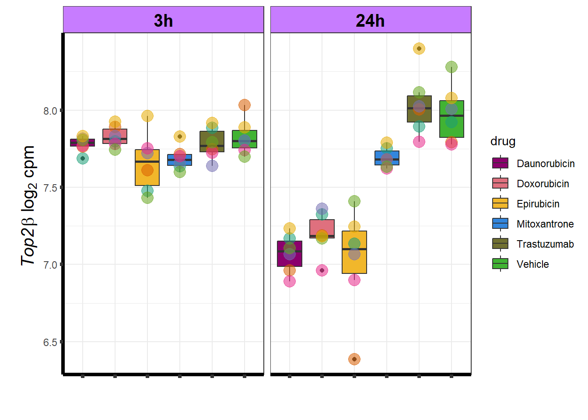
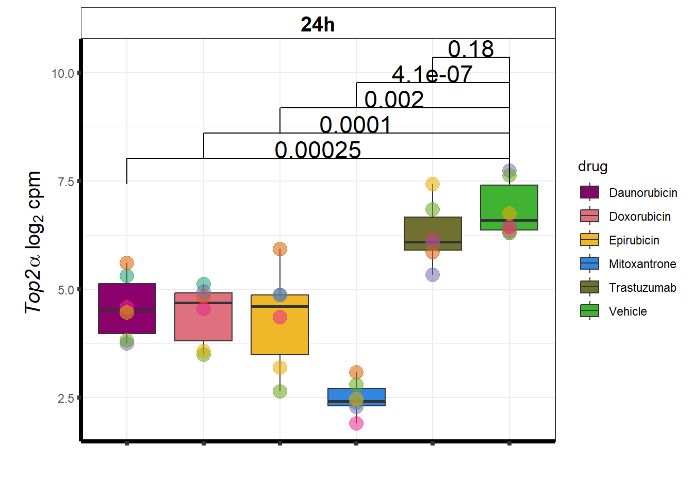
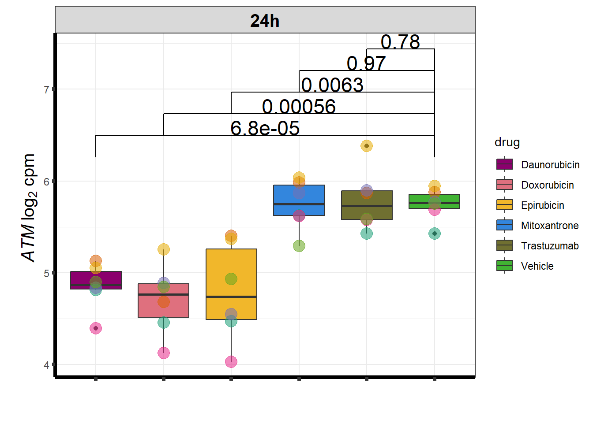
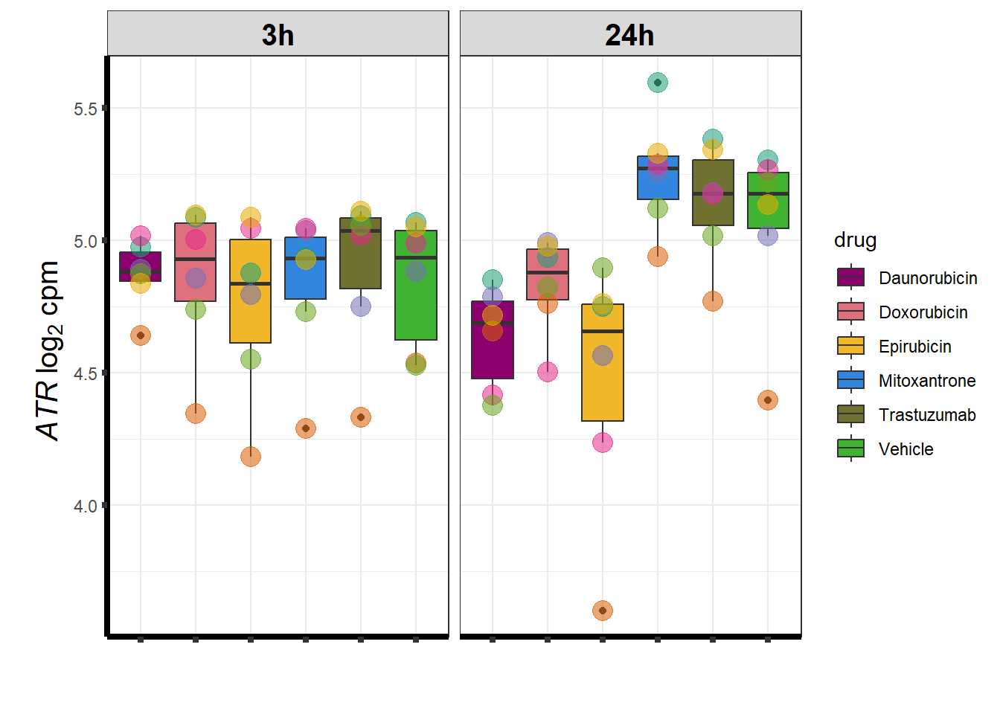
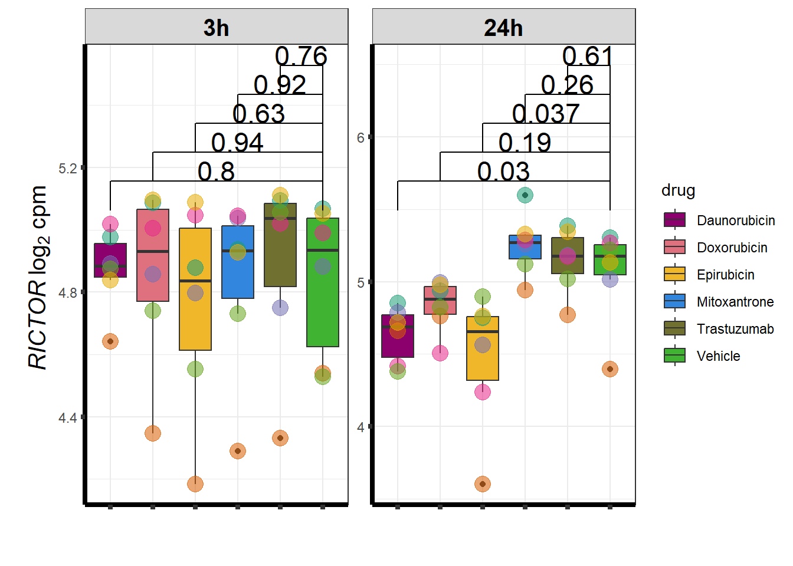
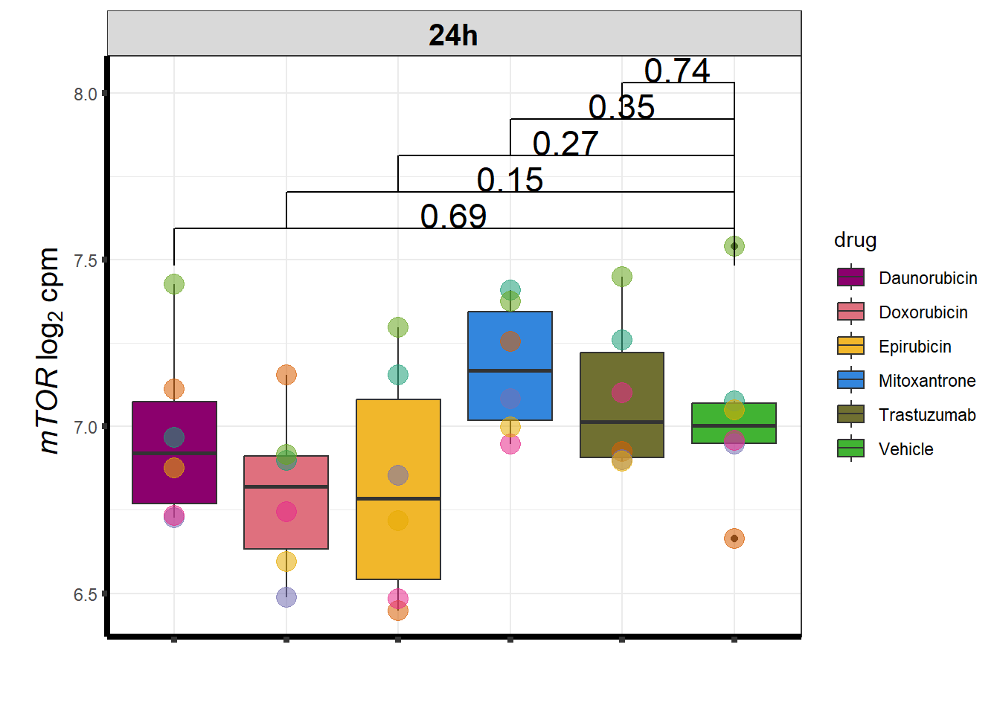

GO analysis
ERM
2023-05-25
Last updated: 2023-05-25
Checks: 7 0
Knit directory: Cardiotoxicity/
This reproducible R Markdown analysis was created with workflowr (version 1.7.0). The Checks tab describes the reproducibility checks that were applied when the results were created. The Past versions tab lists the development history.
Great! Since the R Markdown file has been committed to the Git repository, you know the exact version of the code that produced these results.
Great job! The global environment was empty. Objects defined in the global environment can affect the analysis in your R Markdown file in unknown ways. For reproduciblity it’s best to always run the code in an empty environment.
The command set.seed(20230109) was run prior to running
the code in the R Markdown file. Setting a seed ensures that any results
that rely on randomness, e.g. subsampling or permutations, are
reproducible.
Great job! Recording the operating system, R version, and package versions is critical for reproducibility.
Nice! There were no cached chunks for this analysis, so you can be confident that you successfully produced the results during this run.
Great job! Using relative paths to the files within your workflowr project makes it easier to run your code on other machines.
Great! You are using Git for version control. Tracking code development and connecting the code version to the results is critical for reproducibility.
The results in this page were generated with repository version 0c372d0. See the Past versions tab to see a history of the changes made to the R Markdown and HTML files.
Note that you need to be careful to ensure that all relevant files for
the analysis have been committed to Git prior to generating the results
(you can use wflow_publish or
wflow_git_commit). workflowr only checks the R Markdown
file, but you know if there are other scripts or data files that it
depends on. Below is the status of the Git repository when the results
were generated:
Ignored files:
Ignored: .RData
Ignored: .Rhistory
Ignored: .Rproj.user/
Ignored: data/41588_2018_171_MOESM3_ESMeQTL_ST2_for paper.csv
Ignored: data/Arr_GWAS.txt
Ignored: data/BC_cell_lines.csv
Ignored: data/CADGWASgene_table.csv
Ignored: data/Clamp_Summary.csv
Ignored: data/Cormotif_24_k1-5_raw.RDS
Ignored: data/DAgostres24.RDS
Ignored: data/DAtable1.csv
Ignored: data/DDEMresp_list.csv
Ignored: data/DDE_reQTL.txt
Ignored: data/DDEresp_list.csv
Ignored: data/DEG-GO/
Ignored: data/DEG_cormotif.RDS
Ignored: data/DF_Plate_Peak.csv
Ignored: data/Da24counts.txt
Ignored: data/Dx24counts.txt
Ignored: data/Dx_reQTL_specific.txt
Ignored: data/Ep24counts.txt
Ignored: data/GOplots.R
Ignored: data/HFGWASgene_table.csv
Ignored: data/Hf_GWAS.txt
Ignored: data/K_cluster
Ignored: data/K_cluster_kisthree.csv
Ignored: data/K_cluster_kistwo.csv
Ignored: data/LDH48hoursdata.csv
Ignored: data/Mt24counts.txt
Ignored: data/RINsamplelist.txt
Ignored: data/Seonane2019supp1.txt
Ignored: data/TOP2Bi-24hoursGO_analysis.csv
Ignored: data/TR24counts.txt
Ignored: data/Top2biresp_cluster24h.csv
Ignored: data/Viabilitylistfull.csv
Ignored: data/allexpressedgenes.txt
Ignored: data/allgenes.txt
Ignored: data/allmatrix.RDS
Ignored: data/avgLD50.RDS
Ignored: data/backGL.txt
Ignored: data/cormotif_3hk1-8.RDS
Ignored: data/cormotif_initalK5.RDS
Ignored: data/cormotif_initialK5.RDS
Ignored: data/cormotif_initialall.RDS
Ignored: data/counts24hours.RDS
Ignored: data/cpmnorm_counts.csv
Ignored: data/cvd_GWAS.txt
Ignored: data/dat_cpm.RDS
Ignored: data/data_outline.txt
Ignored: data/efit2.RDS
Ignored: data/efit2results.RDS
Ignored: data/ensembl_backup.RDS
Ignored: data/ensgtotal.txt
Ignored: data/filenameonly.txt
Ignored: data/filtered_cpm_counts.csv
Ignored: data/filtered_raw_counts.csv
Ignored: data/filtermatrix_x.RDS
Ignored: data/folder_05top/
Ignored: data/gene_prob_tran3h.RDS
Ignored: data/gene_probabilityk5.RDS
Ignored: data/gostresTop2bi_ER.RDS
Ignored: data/gostresTop2bi_LR
Ignored: data/gostresTop2bi_LR.RDS
Ignored: data/gostresTop2bi_TI.RDS
Ignored: data/gostrescoNR
Ignored: data/heartgenes.csv
Ignored: data/individualDRCfile.RDS
Ignored: data/individual_LDH48.RDS
Ignored: data/knowfig4.csv
Ignored: data/knowfig5.csv
Ignored: data/knowles56.GMT
Ignored: data/knowlesGMT.GMT
Ignored: data/mymatrix.RDS
Ignored: data/nonresponse_cluster24h.csv
Ignored: data/norm_LDH.csv
Ignored: data/norm_counts.csv
Ignored: data/old_sets/
Ignored: data/plan2plot.png
Ignored: data/raw_counts.csv
Ignored: data/response_cluster24h.csv
Ignored: data/sigVDA24.txt
Ignored: data/sigVDA3.txt
Ignored: data/sigVDX24.txt
Ignored: data/sigVDX3.txt
Ignored: data/sigVEP24.txt
Ignored: data/sigVEP3.txt
Ignored: data/sigVMT24.txt
Ignored: data/sigVMT3.txt
Ignored: data/sigVTR24.txt
Ignored: data/sigVTR3.txt
Ignored: data/siglist.RDS
Ignored: data/table3a.omar
Ignored: data/toplistall.RDS
Ignored: data/tvl24hour.txt
Ignored: data/tvl24hourw.txt
Ignored: data/venn_code.R
Untracked files:
Untracked: .RDataTmp
Untracked: .RDataTmp1
Untracked: .RDataTmp2
Untracked: cormotif_probability_genelist.csv
Untracked: individual-legenddark2.png
Untracked: installed_old.rda
Untracked: motif_ER.txt
Untracked: motif_LR.txt
Untracked: motif_NR.txt
Untracked: motif_TI.txt
Untracked: output/Ca_corr_omar.csv
Untracked: output/GOI_genelist.txt
Untracked: output/figure_1.Rmd
Untracked: output/output-old/
Untracked: output/plan2plot.png
Untracked: output/plan48ldh.png
Untracked: reneebasecode.R
Unstaged changes:
Modified: analysis/DRC_analysis.Rmd
Modified: code/Compare_tnni_ldh.R
Modified: code/LDH48hr_plot.R
Modified: code/log2_cpm_code.R
Modified: code/sequencing_info_collection.R
Note that any generated files, e.g. HTML, png, CSS, etc., are not included in this status report because it is ok for generated content to have uncommitted changes.
These are the previous versions of the repository in which changes were
made to the R Markdown (analysis/DEG-GO_analysis.Rmd) and
HTML (docs/DEG-GO_analysis.html) files. If you’ve
configured a remote Git repository (see ?wflow_git_remote),
click on the hyperlinks in the table below to view the files as they
were in that past version.
| File | Version | Author | Date | Message |
|---|---|---|---|---|
| Rmd | 0c372d0 | reneeisnowhere | 2023-05-25 | update expression correlation |
| html | 5907ad2 | reneeisnowhere | 2023-05-19 | Build site. |
| Rmd | 941b694 | reneeisnowhere | 2023-05-19 | adding corr analysis again |
| html | 860985f | reneeisnowhere | 2023-05-19 | Build site. |
| Rmd | 9f4b03a | reneeisnowhere | 2023-05-19 | adding corr analysis |
| Rmd | d55a810 | reneeisnowhere | 2023-05-18 | working on GWAS and correlation |
| Rmd | 8d87a52 | reneeisnowhere | 2023-05-17 | end of day |
| html | 021e130 | reneeisnowhere | 2023-04-20 | Build site. |
| Rmd | 9d976da | reneeisnowhere | 2023-04-20 | update broken image |
| html | 60af208 | reneeisnowhere | 2023-04-20 | Build site. |
| Rmd | 2b12884 | reneeisnowhere | 2023-04-20 | pheatmap color |
| html | a882f82 | reneeisnowhere | 2023-04-20 | Build site. |
| Rmd | 40ca8e6 | reneeisnowhere | 2023-04-20 | pheatmap color |
| html | 8ad428c | reneeisnowhere | 2023-04-20 | Build site. |
| Rmd | be18119 | reneeisnowhere | 2023-04-20 | updated adj pvalue |
| Rmd | f8eedbf | reneeisnowhere | 2023-04-19 | update after p value to 0.05 |
| html | 56e7c4f | reneeisnowhere | 2023-04-17 | Build site. |
| Rmd | b41cb80 | reneeisnowhere | 2023-04-17 | adding total counts percent graph |
| html | 353fc4a | reneeisnowhere | 2023-04-17 | Build site. |
| Rmd | 457bc7e | reneeisnowhere | 2023-04-17 | updated GO analysis |
| Rmd | 1e2e55e | reneeisnowhere | 2023-04-10 | before final data |
| Rmd | 4e52216 | reneeisnowhere | 2023-03-31 | End of week updates |
GO Analysis
I have created several files from the RNA analysis that contain the significant genes(determined by adj.P.val < 0.05) from each Time and Condition. The names of the files are in the following format: ‘sigV’+Drug(2 letters)+time.
example: ‘sigVDA3.txt’ means this file contains the significant DE genes from the Daunorubicin 3 hour compared to Vehicle Control 3 hour analysis
<environment: R_GlobalEnv>The analysis is based on all genes that passed the rowMeans>0 from the previous page which are about 14084 genes expressed in my RNA-seq data link
All analysis is completed with an adjusted p value of 0.05 This is updated from the 0.1 value I had been using.
2023-04-19 RM
 Knowels, et al. mentioned a relationship between transcriptional change
level indicating cardiotoxicity. This may be an observation that
supports that claim as well. ## Daunorubicin
Knowels, et al. mentioned a relationship between transcriptional change
level indicating cardiotoxicity. This may be an observation that
supports that claim as well. ## Daunorubicin
This is analysis on the significantly differentially expressed genes for Daunorubicin by 3 and 24 hours.

| source | term_id | term_name | intersection_size | term_size | p_value |
|---|---|---|---|---|---|
| GO:BP | GO:0006357 | regulation of transcription by RNA polymerase II | 217 | 1915 | 1.99e-34 |
| GO:BP | GO:0006366 | transcription by RNA polymerase II | 222 | 1991 | 1.99e-34 |
| GO:BP | GO:0006351 | DNA-templated transcription | 258 | 2683 | 1.58e-31 |
| GO:BP | GO:0097659 | nucleic acid-templated transcription | 258 | 2684 | 1.58e-31 |
| GO:BP | GO:1903506 | regulation of nucleic acid-templated transcription | 251 | 2581 | 6.94e-31 |
| GO:BP | GO:0006355 | regulation of DNA-templated transcription | 251 | 2579 | 6.94e-31 |
| GO:BP | GO:0032774 | RNA biosynthetic process | 258 | 2714 | 6.94e-31 |
| GO:BP | GO:0051252 | regulation of RNA metabolic process | 267 | 2849 | 7.48e-31 |
| GO:BP | GO:2001141 | regulation of RNA biosynthetic process | 251 | 2598 | 1.71e-30 |
| GO:BP | GO:0019219 | regulation of nucleobase-containing compound metabolic process | 280 | 3105 | 4.11e-30 |
| GO:BP | GO:0010556 | regulation of macromolecule biosynthetic process | 263 | 3015 | 1.45e-26 |
| GO:BP | GO:0031326 | regulation of cellular biosynthetic process | 264 | 3123 | 4.18e-24 |
| GO:BP | GO:0034654 | nucleobase-containing compound biosynthetic process | 261 | 3083 | 8.83e-24 |
| GO:BP | GO:0009889 | regulation of biosynthetic process | 265 | 3174 | 1.97e-23 |
| GO:BP | GO:0018130 | heterocycle biosynthetic process | 263 | 3148 | 2.58e-23 |
| GO:BP | GO:0019438 | aromatic compound biosynthetic process | 262 | 3149 | 9.91e-23 |
| GO:BP | GO:1901362 | organic cyclic compound biosynthetic process | 265 | 3253 | 1.60e-21 |
| GO:BP | GO:0009059 | macromolecule biosynthetic process | 279 | 3730 | 6.11e-19 |
| GO:BP | GO:0031323 | regulation of cellular metabolic process | 310 | 4305 | 1.87e-18 |
| GO:BP | GO:0051171 | regulation of nitrogen compound metabolic process | 306 | 4330 | 4.67e-16 |
| GO:BP | GO:0044271 | cellular nitrogen compound biosynthetic process | 273 | 3758 | 7.50e-16 |
| GO:BP | GO:0080090 | regulation of primary metabolic process | 311 | 4440 | 8.59e-16 |
| GO:BP | GO:0000122 | negative regulation of transcription by RNA polymerase II | 90 | 735 | 1.46e-14 |
| GO:BP | GO:0045892 | negative regulation of DNA-templated transcription | 104 | 1009 | 3.12e-12 |
| GO:BP | GO:1903507 | negative regulation of nucleic acid-templated transcription | 104 | 1011 | 3.31e-12 |
| GO:BP | GO:0051253 | negative regulation of RNA metabolic process | 110 | 1115 | 5.72e-12 |
| GO:BP | GO:1902679 | negative regulation of RNA biosynthetic process | 104 | 1020 | 6.16e-12 |
| GO:BP | GO:0044249 | cellular biosynthetic process | 292 | 4465 | 4.95e-11 |
| GO:BP | GO:0045934 | negative regulation of nucleobase-containing compound metabolic process | 113 | 1215 | 1.07e-10 |
| GO:BP | GO:0010468 | regulation of gene expression | 279 | 3583 | 2.05e-10 |
| GO:BP | GO:1901576 | organic substance biosynthetic process | 293 | 4537 | 2.29e-10 |
| GO:BP | GO:0010558 | negative regulation of macromolecule biosynthetic process | 109 | 1206 | 7.83e-10 |
| GO:BP | GO:0009058 | biosynthetic process | 304 | 4595 | 1.41e-09 |
| GO:BP | GO:0031327 | negative regulation of cellular biosynthetic process | 109 | 1249 | 7.68e-09 |
| GO:BP | GO:0051254 | positive regulation of RNA metabolic process | 121 | 1431 | 1.41e-08 |
| GO:BP | GO:0045893 | positive regulation of DNA-templated transcription | 114 | 1304 | 1.71e-08 |
| GO:BP | GO:1903508 | positive regulation of nucleic acid-templated transcription | 114 | 1304 | 1.71e-08 |
| GO:BP | GO:0009890 | negative regulation of biosynthetic process | 109 | 1273 | 2.14e-08 |
| GO:BP | GO:1902680 | positive regulation of RNA biosynthetic process | 114 | 1311 | 2.14e-08 |
| GO:BP | GO:0031324 | negative regulation of cellular metabolic process | 136 | 1780 | 7.22e-08 |
| GO:BP | GO:0010557 | positive regulation of macromolecule biosynthetic process | 123 | 1499 | 3.42e-07 |
| GO:BP | GO:0045935 | positive regulation of nucleobase-containing compound metabolic process | 126 | 1600 | 3.63e-07 |
| GO:BP | GO:0060255 | regulation of macromolecule metabolic process | 225 | 4640 | 5.26e-07 |
| GO:BP | GO:0031328 | positive regulation of cellular biosynthetic process | 126 | 1571 | 1.17e-06 |
| GO:BP | GO:0045944 | positive regulation of transcription by RNA polymerase II | 72 | 925 | 2.18e-06 |
| GO:BP | GO:0009891 | positive regulation of biosynthetic process | 126 | 1598 | 3.59e-06 |
| GO:BP | GO:0019222 | regulation of metabolic process | 228 | 5039 | 5.48e-06 |
| GO:BP | GO:0051172 | negative regulation of nitrogen compound metabolic process | 134 | 1866 | 1.59e-05 |
| GO:BP | GO:0031325 | positive regulation of cellular metabolic process | 118 | 2373 | 9.70e-05 |
| GO:BP | GO:0051173 | positive regulation of nitrogen compound metabolic process | 163 | 2425 | 1.54e-04 |
| GO:BP | GO:0060411 | cardiac septum morphogenesis | 11 | 67 | 2.82e-04 |
| GO:BP | GO:0090092 | regulation of transmembrane receptor protein serine/threonine kinase signaling pathway | 21 | 229 | 3.51e-04 |
| GO:BP | GO:0003281 | ventricular septum development | 11 | 69 | 4.15e-04 |
| GO:BP | GO:0140467 | integrated stress response signaling | 6 | 34 | 4.85e-04 |
| GO:BP | GO:0003007 | heart morphogenesis | 19 | 212 | 8.67e-04 |
| GO:BP | GO:0030510 | regulation of BMP signaling pathway | 5 | 84 | 1.73e-03 |
| GO:BP | GO:0019827 | stem cell population maintenance | 12 | 150 | 2.02e-03 |
| GO:BP | GO:0098727 | maintenance of cell number | 12 | 152 | 2.48e-03 |
| GO:BP | GO:0017015 | regulation of transforming growth factor beta receptor signaling pathway | 13 | 126 | 2.85e-03 |
| GO:BP | GO:0003279 | cardiac septum development | 12 | 101 | 2.99e-03 |
| GO:BP | GO:1903844 | regulation of cellular response to transforming growth factor beta stimulus | 13 | 127 | 3.46e-03 |
| GO:BP | GO:0010604 | positive regulation of macromolecule metabolic process | 171 | 2648 | 4.04e-03 |
| GO:BP | GO:0002320 | lymphoid progenitor cell differentiation | 5 | 17 | 4.37e-03 |
| GO:BP | GO:0018076 | N-terminal peptidyl-lysine acetylation | 3 | 4 | 4.49e-03 |
| GO:BP | GO:0003181 | atrioventricular valve morphogenesis | 5 | 24 | 4.94e-03 |
| GO:BP | GO:0003162 | atrioventricular node development | 3 | 8 | 5.55e-03 |
| GO:BP | GO:0003151 | outflow tract morphogenesis | 9 | 66 | 5.81e-03 |
| GO:BP | GO:0060840 | artery development | 11 | 82 | 6.07e-03 |
| GO:BP | GO:0030853 | negative regulation of granulocyte differentiation | 2 | 6 | 6.11e-03 |
| GO:BP | GO:0006473 | protein acetylation | 15 | 208 | 7.40e-03 |
| GO:BP | GO:0021915 | neural tube development | 16 | 146 | 7.42e-03 |
| GO:BP | GO:0060412 | ventricular septum morphogenesis | 7 | 40 | 7.72e-03 |
| GO:BP | GO:0003171 | atrioventricular valve development | 5 | 26 | 7.99e-03 |
| GO:BP | GO:0090100 | positive regulation of transmembrane receptor protein serine/threonine kinase signaling pathway | 12 | 99 | 8.33e-03 |
| GO:BP | GO:0043009 | chordate embryonic development | 41 | 531 | 8.33e-03 |
| GO:BP | GO:0007178 | transmembrane receptor protein serine/threonine kinase signaling pathway | 22 | 301 | 9.12e-03 |
| GO:BP | GO:0030509 | BMP signaling pathway | 5 | 123 | 9.12e-03 |
| GO:BP | GO:0007179 | transforming growth factor beta receptor signaling pathway | 15 | 177 | 9.29e-03 |
| GO:BP | GO:0045659 | negative regulation of neutrophil differentiation | 1 | 2 | 9.29e-03 |
| GO:BP | GO:0045645 | positive regulation of eosinophil differentiation | 1 | 1 | 9.29e-03 |
| GO:BP | GO:0045643 | regulation of eosinophil differentiation | 1 | 1 | 9.29e-03 |
| GO:BP | GO:0003183 | mitral valve morphogenesis | 3 | 10 | 1.02e-02 |
| GO:BP | GO:0002244 | hematopoietic progenitor cell differentiation | 11 | 109 | 1.04e-02 |
| GO:BP | GO:0071772 | response to BMP | 5 | 131 | 1.13e-02 |
| GO:BP | GO:0060430 | lung saccule development | 2 | 7 | 1.13e-02 |
| GO:BP | GO:0071773 | cellular response to BMP stimulus | 5 | 131 | 1.13e-02 |
| GO:BP | GO:0090425 | acinar cell differentiation | 3 | 5 | 1.14e-02 |
| GO:BP | GO:1902893 | regulation of miRNA transcription | 5 | 51 | 1.19e-02 |
| GO:BP | GO:0010944 | negative regulation of transcription by competitive promoter binding | 2 | 8 | 1.19e-02 |
| GO:BP | GO:0009893 | positive regulation of metabolic process | 122 | 2884 | 1.19e-02 |
| GO:BP | GO:0045658 | regulation of neutrophil differentiation | 1 | 2 | 1.19e-02 |
| GO:BP | GO:1902459 | positive regulation of stem cell population maintenance | 8 | 44 | 1.19e-02 |
| GO:BP | GO:0061614 | miRNA transcription | 5 | 52 | 1.19e-02 |
| GO:BP | GO:0007507 | heart development | 40 | 502 | 1.19e-02 |
| GO:BP | GO:0001841 | neural tube formation | 10 | 101 | 1.19e-02 |
| GO:BP | GO:0003174 | mitral valve development | 3 | 11 | 1.19e-02 |
| GO:BP | GO:0009792 | embryo development ending in birth or egg hatching | 41 | 548 | 1.27e-02 |
| GO:BP | GO:0090304 | nucleic acid metabolic process | 14 | 4047 | 1.35e-02 |
| GO:BP | GO:0090287 | regulation of cellular response to growth factor stimulus | 19 | 263 | 1.35e-02 |
| GO:BP | GO:0018394 | peptidyl-lysine acetylation | 13 | 180 | 1.35e-02 |
| GO:BP | GO:0001657 | ureteric bud development | 4 | 75 | 1.36e-02 |
| GO:BP | GO:0016070 | RNA metabolic process | 102 | 3593 | 1.36e-02 |
| GO:BP | GO:2001020 | regulation of response to DNA damage stimulus | 25 | 292 | 1.36e-02 |
| GO:BP | GO:0072163 | mesonephric epithelium development | 4 | 76 | 1.36e-02 |
| GO:BP | GO:0036499 | PERK-mediated unfolded protein response | 4 | 17 | 1.36e-02 |
| GO:BP | GO:0072164 | mesonephric tubule development | 4 | 76 | 1.36e-02 |
| GO:BP | GO:0048738 | cardiac muscle tissue development | 18 | 198 | 1.48e-02 |
| GO:BP | GO:0045927 | positive regulation of growth | 5 | 200 | 1.53e-02 |
| GO:BP | GO:0060419 | heart growth | 10 | 72 | 1.53e-02 |
| GO:BP | GO:0001823 | mesonephros development | 4 | 77 | 1.53e-02 |
| GO:BP | GO:0071559 | response to transforming growth factor beta | 17 | 224 | 1.56e-02 |
| GO:BP | GO:0030852 | regulation of granulocyte differentiation | 2 | 11 | 1.60e-02 |
| GO:BP | GO:0002065 | columnar/cuboidal epithelial cell differentiation | 8 | 79 | 1.63e-02 |
| GO:BP | GO:0030222 | eosinophil differentiation | 1 | 2 | 1.63e-02 |
| GO:BP | GO:0002763 | positive regulation of myeloid leukocyte differentiation | 2 | 34 | 1.63e-02 |
| GO:BP | GO:0014706 | striated muscle tissue development | 20 | 210 | 1.70e-02 |
| GO:BP | GO:0003179 | heart valve morphogenesis | 5 | 50 | 1.72e-02 |
| GO:BP | GO:0060394 | negative regulation of pathway-restricted SMAD protein phosphorylation | 2 | 12 | 1.80e-02 |
| GO:BP | GO:0003310 | pancreatic A cell differentiation | 2 | 2 | 1.84e-02 |
| GO:BP | GO:0030514 | negative regulation of BMP signaling pathway | 3 | 45 | 1.85e-02 |
| GO:BP | GO:2000628 | regulation of miRNA metabolic process | 5 | 62 | 1.88e-02 |
| GO:BP | GO:1990441 | negative regulation of transcription from RNA polymerase II promoter in response to endoplasmic reticulum stress | 2 | 4 | 1.92e-02 |
| GO:BP | GO:0034616 | response to laminar fluid shear stress | 3 | 14 | 1.92e-02 |
| GO:BP | GO:0002328 | pro-B cell differentiation | 3 | 10 | 2.07e-02 |
| GO:BP | GO:0003148 | outflow tract septum morphogenesis | 3 | 23 | 2.13e-02 |
| GO:BP | GO:0003206 | cardiac chamber morphogenesis | 7 | 109 | 2.18e-02 |
| GO:BP | GO:0048639 | positive regulation of developmental growth | 4 | 125 | 2.19e-02 |
| GO:BP | GO:0014020 | primary neural tube formation | 9 | 94 | 2.19e-02 |
| GO:BP | GO:0030854 | positive regulation of granulocyte differentiation | 1 | 5 | 2.31e-02 |
| GO:BP | GO:0043543 | protein acylation | 15 | 246 | 2.39e-02 |
| GO:BP | GO:0055017 | cardiac muscle tissue growth | 9 | 65 | 2.39e-02 |
| GO:BP | GO:0048844 | artery morphogenesis | 8 | 57 | 2.41e-02 |
| GO:BP | GO:2000736 | regulation of stem cell differentiation | 10 | 74 | 2.44e-02 |
| GO:BP | GO:0051890 | regulation of cardioblast differentiation | 3 | 7 | 2.44e-02 |
| GO:BP | GO:1900034 | regulation of cellular response to heat | 4 | 16 | 2.44e-02 |
| GO:BP | GO:0003231 | cardiac ventricle development | 11 | 114 | 2.52e-02 |
| GO:BP | GO:0060420 | regulation of heart growth | 8 | 50 | 2.52e-02 |
| GO:BP | GO:0045445 | myoblast differentiation | 12 | 89 | 2.60e-02 |
| GO:BP | GO:0030223 | neutrophil differentiation | 1 | 8 | 2.68e-02 |
| GO:BP | GO:0006139 | nucleobase-containing compound metabolic process | 14 | 4503 | 2.69e-02 |
| GO:BP | GO:0071560 | cellular response to transforming growth factor beta stimulus | 16 | 219 | 2.71e-02 |
| GO:BP | GO:0035910 | ascending aorta morphogenesis | 2 | 4 | 2.71e-02 |
| GO:BP | GO:0010665 | regulation of cardiac muscle cell apoptotic process | 4 | 34 | 2.71e-02 |
| GO:BP | GO:0048538 | thymus development | 6 | 35 | 2.85e-02 |
| GO:BP | GO:2000036 | regulation of stem cell population maintenance | 6 | 62 | 2.85e-02 |
| GO:BP | GO:0043627 | response to estrogen | 3 | 51 | 2.85e-02 |
| GO:BP | GO:0070848 | response to growth factor | 32 | 567 | 2.85e-02 |
| GO:BP | GO:0097201 | negative regulation of transcription from RNA polymerase II promoter in response to stress | 3 | 10 | 2.90e-02 |
| GO:BP | GO:0003170 | heart valve development | 5 | 57 | 2.93e-02 |
| GO:BP | GO:0045597 | positive regulation of cell differentiation | 4 | 619 | 2.93e-02 |
| GO:BP | GO:0003215 | cardiac right ventricle morphogenesis | 4 | 17 | 2.93e-02 |
| GO:BP | GO:1902894 | negative regulation of miRNA transcription | 2 | 17 | 2.99e-02 |
| GO:BP | GO:0060395 | SMAD protein signal transduction | 5 | 65 | 3.01e-02 |
| GO:BP | GO:1904290 | negative regulation of mitotic DNA damage checkpoint | 1 | 1 | 3.11e-02 |
| GO:BP | GO:0035264 | multicellular organism growth | 12 | 121 | 3.11e-02 |
| GO:BP | GO:0001838 | embryonic epithelial tube formation | 10 | 116 | 3.11e-02 |
| GO:BP | GO:0060038 | cardiac muscle cell proliferation | 7 | 44 | 3.14e-02 |
| GO:BP | GO:0010660 | regulation of muscle cell apoptotic process | 5 | 57 | 3.14e-02 |
| GO:BP | GO:0035904 | aorta development | 7 | 49 | 3.14e-02 |
| GO:BP | GO:0046483 | heterocycle metabolic process | 14 | 4616 | 3.14e-02 |
| GO:BP | GO:2000629 | negative regulation of miRNA metabolic process | 2 | 18 | 3.14e-02 |
| GO:BP | GO:0031665 | negative regulation of lipopolysaccharide-mediated signaling pathway | 1 | 7 | 3.14e-02 |
| GO:BP | GO:0010659 | cardiac muscle cell apoptotic process | 4 | 36 | 3.14e-02 |
| GO:BP | GO:0043618 | regulation of transcription from RNA polymerase II promoter in response to stress | 4 | 39 | 3.14e-02 |
| GO:BP | GO:0010662 | regulation of striated muscle cell apoptotic process | 4 | 37 | 3.14e-02 |
| GO:BP | GO:0055025 | positive regulation of cardiac muscle tissue development | 1 | 2 | 3.14e-02 |
| GO:BP | GO:0010586 | miRNA metabolic process | 5 | 76 | 3.23e-02 |
| GO:BP | GO:0006725 | cellular aromatic compound metabolic process | 14 | 4646 | 3.29e-02 |
| GO:BP | GO:0045639 | positive regulation of myeloid cell differentiation | 2 | 67 | 3.29e-02 |
| GO:BP | GO:0019935 | cyclic-nucleotide-mediated signaling | 2 | 55 | 3.30e-02 |
| GO:BP | GO:0080135 | regulation of cellular response to stress | 42 | 631 | 3.32e-02 |
| GO:BP | GO:1903674 | regulation of cap-dependent translational initiation | 1 | 1 | 3.43e-02 |
| GO:BP | GO:1903676 | positive regulation of cap-dependent translational initiation | 1 | 1 | 3.43e-02 |
| GO:BP | GO:0045651 | positive regulation of macrophage differentiation | 1 | 12 | 3.43e-02 |
| GO:BP | GO:0060043 | regulation of cardiac muscle cell proliferation | 6 | 32 | 3.44e-02 |
| GO:BP | GO:0032526 | response to retinoic acid | 4 | 85 | 3.44e-02 |
| GO:BP | GO:1901532 | regulation of hematopoietic progenitor cell differentiation | 5 | 34 | 3.48e-02 |
| GO:BP | GO:0072073 | kidney epithelium development | 4 | 112 | 3.48e-02 |
| GO:BP | GO:0002761 | regulation of myeloid leukocyte differentiation | 3 | 77 | 3.48e-02 |
| GO:BP | GO:0003289 | atrial septum primum morphogenesis | 2 | 5 | 3.52e-02 |
| GO:BP | GO:0003284 | septum primum development | 2 | 5 | 3.52e-02 |
| GO:BP | GO:0035905 | ascending aorta development | 2 | 5 | 3.52e-02 |
| GO:BP | GO:0010657 | muscle cell apoptotic process | 5 | 60 | 3.58e-02 |
| GO:BP | GO:0010658 | striated muscle cell apoptotic process | 4 | 39 | 3.73e-02 |
| GO:BP | GO:1901522 | positive regulation of transcription from RNA polymerase II promoter involved in cellular response to chemical stimulus | 3 | 18 | 3.78e-02 |
| GO:BP | GO:0042789 | mRNA transcription by RNA polymerase II | 5 | 42 | 3.78e-02 |
| GO:BP | GO:0032909 | regulation of transforming growth factor beta2 production | 2 | 9 | 3.80e-02 |
| GO:BP | GO:0032906 | transforming growth factor beta2 production | 2 | 9 | 3.80e-02 |
| GO:BP | GO:0034405 | response to fluid shear stress | 5 | 31 | 3.80e-02 |
| GO:BP | GO:0045661 | regulation of myoblast differentiation | 9 | 60 | 3.87e-02 |
| GO:BP | GO:0048636 | positive regulation of muscle organ development | 1 | 3 | 4.05e-02 |
| GO:BP | GO:0016573 | histone acetylation | 11 | 165 | 4.05e-02 |
| GO:BP | GO:0045844 | positive regulation of striated muscle tissue development | 1 | 3 | 4.05e-02 |
| GO:BP | GO:0035909 | aorta morphogenesis | 5 | 25 | 4.06e-02 |
| GO:BP | GO:0010720 | positive regulation of cell development | 3 | 316 | 4.06e-02 |
| GO:BP | GO:0003159 | morphogenesis of an endothelium | 4 | 14 | 4.06e-02 |
| GO:BP | GO:0001843 | neural tube closure | 8 | 90 | 4.06e-02 |
| GO:BP | GO:0045622 | regulation of T-helper cell differentiation | 3 | 20 | 4.06e-02 |
| GO:BP | GO:2000320 | negative regulation of T-helper 17 cell differentiation | 2 | 6 | 4.06e-02 |
| GO:BP | GO:0045603 | positive regulation of endothelial cell differentiation | 1 | 8 | 4.06e-02 |
| GO:BP | GO:0061154 | endothelial tube morphogenesis | 4 | 14 | 4.06e-02 |
| GO:BP | GO:0061008 | hepaticobiliary system development | 13 | 109 | 4.06e-02 |
| GO:BP | GO:0055021 | regulation of cardiac muscle tissue growth | 7 | 45 | 4.06e-02 |
| GO:BP | GO:1901360 | organic cyclic compound metabolic process | 14 | 4790 | 4.06e-02 |
| GO:BP | GO:0030513 | positive regulation of BMP signaling pathway | 5 | 34 | 4.06e-02 |
| GO:BP | GO:0071363 | cellular response to growth factor stimulus | 30 | 547 | 4.06e-02 |
| GO:BP | GO:0072175 | epithelial tube formation | 12 | 127 | 4.06e-02 |
| GO:BP | GO:0008285 | negative regulation of cell population proliferation | 8 | 510 | 4.08e-02 |
| GO:BP | GO:1902106 | negative regulation of leukocyte differentiation | 3 | 63 | 4.08e-02 |
| GO:BP | GO:0006984 | ER-nucleus signaling pathway | 5 | 46 | 4.08e-02 |
| GO:BP | GO:0043620 | regulation of DNA-templated transcription in response to stress | 4 | 44 | 4.08e-02 |
| GO:BP | GO:0060010 | Sertoli cell fate commitment | 1 | 1 | 4.08e-02 |
| GO:BP | GO:0033484 | cellular nitric oxide homeostasis | 1 | 3 | 4.08e-02 |
| GO:BP | GO:0045649 | regulation of macrophage differentiation | 1 | 17 | 4.08e-02 |
| GO:BP | GO:0002067 | glandular epithelial cell differentiation | 3 | 49 | 4.08e-02 |
| GO:BP | GO:1903846 | positive regulation of cellular response to transforming growth factor beta stimulus | 5 | 29 | 4.08e-02 |
| GO:BP | GO:0060606 | tube closure | 8 | 91 | 4.08e-02 |
| GO:BP | GO:0030511 | positive regulation of transforming growth factor beta receptor signaling pathway | 5 | 29 | 4.08e-02 |
| GO:BP | GO:0061626 | pharyngeal arch artery morphogenesis | 2 | 10 | 4.08e-02 |
| GO:BP | GO:0051891 | positive regulation of cardioblast differentiation | 2 | 6 | 4.11e-02 |
| GO:BP | GO:2000121 | regulation of removal of superoxide radicals | 2 | 6 | 4.20e-02 |
| GO:BP | GO:0010656 | negative regulation of muscle cell apoptotic process | 6 | 36 | 4.22e-02 |
| GO:BP | GO:1903707 | negative regulation of hemopoiesis | 3 | 67 | 4.26e-02 |
| GO:BP | GO:0003205 | cardiac chamber development | 4 | 149 | 4.26e-02 |
| GO:BP | GO:0001568 | blood vessel development | 33 | 534 | 4.26e-02 |
| GO:BP | GO:0014912 | negative regulation of smooth muscle cell migration | 1 | 24 | 4.26e-02 |
| GO:BP | GO:0018393 | internal peptidyl-lysine acetylation | 11 | 169 | 4.26e-02 |
| GO:BP | GO:2000317 | negative regulation of T-helper 17 type immune response | 2 | 7 | 4.26e-02 |
| GO:BP | GO:0046620 | regulation of organ growth | 9 | 70 | 4.29e-02 |
| GO:BP | GO:0060487 | lung epithelial cell differentiation | 2 | 18 | 4.29e-02 |
| GO:BP | GO:0060479 | lung cell differentiation | 2 | 18 | 4.29e-02 |
| GO:BP | GO:0072739 | response to anisomycin | 2 | 4 | 4.29e-02 |
| GO:BP | GO:0035019 | somatic stem cell population maintenance | 7 | 50 | 4.29e-02 |
| GO:BP | GO:0033137 | negative regulation of peptidyl-serine phosphorylation | 2 | 26 | 4.29e-02 |
| GO:BP | GO:0030851 | granulocyte differentiation | 2 | 26 | 4.36e-02 |
| GO:BP | GO:0031664 | regulation of lipopolysaccharide-mediated signaling pathway | 1 | 15 | 4.41e-02 |
| GO:BP | GO:0010002 | cardioblast differentiation | 4 | 17 | 4.41e-02 |
| GO:BP | GO:0006475 | internal protein amino acid acetylation | 11 | 171 | 4.41e-02 |
| GO:BP | GO:0035265 | organ growth | 13 | 129 | 4.43e-02 |
| GO:BP | GO:0010667 | negative regulation of cardiac muscle cell apoptotic process | 3 | 22 | 4.43e-02 |
| GO:BP | GO:0034641 | cellular nitrogen compound metabolic process | 14 | 4991 | 4.44e-02 |
| GO:BP | GO:0007613 | memory | 2 | 90 | 4.45e-02 |
| GO:BP | GO:1900246 | positive regulation of RIG-I signaling pathway | 3 | 7 | 4.52e-02 |
| GO:BP | GO:0071300 | cellular response to retinoic acid | 4 | 49 | 4.62e-02 |
| GO:BP | GO:1903043 | positive regulation of chondrocyte hypertrophy | 1 | 1 | 4.70e-02 |
| GO:BP | GO:1903041 | regulation of chondrocyte hypertrophy | 1 | 1 | 4.70e-02 |
| GO:BP | GO:0060575 | intestinal epithelial cell differentiation | 3 | 17 | 4.70e-02 |
| GO:BP | GO:0031018 | endocrine pancreas development | 4 | 31 | 4.73e-02 |
| GO:BP | GO:1904003 | negative regulation of sebum secreting cell proliferation | 1 | 1 | 4.75e-02 |
| GO:BP | GO:0060413 | atrial septum morphogenesis | 3 | 15 | 4.75e-02 |
| GO:BP | GO:0006282 | regulation of DNA repair | 17 | 197 | 4.75e-02 |
| GO:BP | GO:0090288 | negative regulation of cellular response to growth factor stimulus | 3 | 81 | 4.80e-02 |
| GO:BP | GO:0009299 | mRNA transcription | 5 | 47 | 4.86e-02 |
| GO:BP | GO:0032436 | positive regulation of proteasomal ubiquitin-dependent protein catabolic process | 8 | 90 | 4.91e-02 |
| GO:BP | GO:0019184 | nonribosomal peptide biosynthetic process | 3 | 15 | 4.91e-02 |
| GO:BP | GO:0045210 | FasL biosynthetic process | 1 | 1 | 4.95e-02 |
| GO:BP | GO:2000737 | negative regulation of stem cell differentiation | 5 | 24 | 4.97e-02 |
| KEGG | KEGG:05168 | Herpes simplex virus 1 infection | 66 | 415 | 5.18e-17 |
Daunorubicin specific genes at 3 hours
How they may relate to 24 hour genes using GO analysis3 hours specifically (see venn below too):
Daunorubicin specific genes at 24 hours
All Daun DEGs adj p value < 0.05

| source | term_id | term_name | intersection_size | term_size | p_value |
|---|---|---|---|---|---|
| GO:BP | GO:0097659 | nucleic acid-templated transcription | 137 | 2684 | 7.33e-10 |
| GO:BP | GO:0006366 | transcription by RNA polymerase II | 112 | 1991 | 7.33e-10 |
| GO:BP | GO:0006351 | DNA-templated transcription | 137 | 2683 | 7.33e-10 |
| GO:BP | GO:0006357 | regulation of transcription by RNA polymerase II | 108 | 1915 | 7.33e-10 |
| GO:BP | GO:0032774 | RNA biosynthetic process | 137 | 2714 | 1.01e-09 |
| GO:BP | GO:1903506 | regulation of nucleic acid-templated transcription | 132 | 2581 | 1.45e-09 |
| GO:BP | GO:0019219 | regulation of nucleobase-containing compound metabolic process | 148 | 3105 | 1.45e-09 |
| GO:BP | GO:0006355 | regulation of DNA-templated transcription | 132 | 2579 | 1.45e-09 |
| GO:BP | GO:0051252 | regulation of RNA metabolic process | 140 | 2849 | 1.45e-09 |
| GO:BP | GO:2001141 | regulation of RNA biosynthetic process | 132 | 2598 | 1.94e-09 |
| GO:BP | GO:0010556 | regulation of macromolecule biosynthetic process | 149 | 3015 | 1.91e-08 |
| GO:BP | GO:0031326 | regulation of cellular biosynthetic process | 144 | 3123 | 1.78e-07 |
| GO:BP | GO:0009889 | regulation of biosynthetic process | 145 | 3174 | 2.65e-07 |
| GO:BP | GO:0018130 | heterocycle biosynthetic process | 141 | 3148 | 5.35e-07 |
| GO:BP | GO:0034654 | nucleobase-containing compound biosynthetic process | 139 | 3083 | 5.35e-07 |
| GO:BP | GO:0019438 | aromatic compound biosynthetic process | 140 | 3149 | 1.17e-06 |
| GO:BP | GO:1901362 | organic cyclic compound biosynthetic process | 143 | 3253 | 1.63e-06 |
| GO:BP | GO:0009059 | macromolecule biosynthetic process | 150 | 3730 | 1.24e-05 |
| GO:BP | GO:0031323 | regulation of cellular metabolic process | 169 | 4305 | 1.24e-05 |
| GO:BP | GO:0140467 | integrated stress response signaling | 4 | 34 | 5.91e-04 |
| GO:BP | GO:0044271 | cellular nitrogen compound biosynthetic process | 145 | 3758 | 5.91e-04 |
| GO:BP | GO:0000122 | negative regulation of transcription by RNA polymerase II | 43 | 735 | 9.74e-04 |
| GO:BP | GO:0080090 | regulation of primary metabolic process | 166 | 4440 | 1.17e-03 |
| GO:BP | GO:0051171 | regulation of nitrogen compound metabolic process | 162 | 4330 | 1.46e-03 |
| GO:BP | GO:1901522 | positive regulation of transcription from RNA polymerase II promoter involved in cellular response to chemical stimulus | 3 | 18 | 2.72e-03 |
| GO:BP | GO:0044249 | cellular biosynthetic process | 167 | 4465 | 3.49e-03 |
| GO:BP | GO:1901576 | organic substance biosynthetic process | 168 | 4537 | 5.88e-03 |
| GO:BP | GO:0034599 | cellular response to oxidative stress | 6 | 239 | 7.97e-03 |
| GO:BP | GO:0045893 | positive regulation of DNA-templated transcription | 65 | 1304 | 7.97e-03 |
| GO:BP | GO:1903508 | positive regulation of nucleic acid-templated transcription | 65 | 1304 | 7.97e-03 |
| GO:BP | GO:2001020 | regulation of response to DNA damage stimulus | 19 | 292 | 7.97e-03 |
| GO:BP | GO:0009058 | biosynthetic process | 169 | 4595 | 7.97e-03 |
| GO:BP | GO:1902680 | positive regulation of RNA biosynthetic process | 65 | 1311 | 8.55e-03 |
| GO:BP | GO:0010557 | positive regulation of macromolecule biosynthetic process | 71 | 1499 | 1.00e-02 |
| GO:BP | GO:0031328 | positive regulation of cellular biosynthetic process | 74 | 1571 | 1.00e-02 |
| GO:BP | GO:2000121 | regulation of removal of superoxide radicals | 2 | 6 | 1.02e-02 |
| GO:BP | GO:0051253 | negative regulation of RNA metabolic process | 53 | 1115 | 1.02e-02 |
| GO:BP | GO:0045934 | negative regulation of nucleobase-containing compound metabolic process | 55 | 1215 | 1.28e-02 |
| GO:BP | GO:0045892 | negative regulation of DNA-templated transcription | 49 | 1009 | 1.29e-02 |
| GO:BP | GO:1903507 | negative regulation of nucleic acid-templated transcription | 49 | 1011 | 1.31e-02 |
| GO:BP | GO:0043618 | regulation of transcription from RNA polymerase II promoter in response to stress | 3 | 39 | 1.39e-02 |
| GO:BP | GO:0009891 | positive regulation of biosynthetic process | 71 | 1598 | 1.55e-02 |
| GO:BP | GO:1902679 | negative regulation of RNA biosynthetic process | 49 | 1020 | 1.57e-02 |
| GO:BP | GO:0062197 | cellular response to chemical stress | 6 | 290 | 1.62e-02 |
| GO:BP | GO:0051254 | positive regulation of RNA metabolic process | 67 | 1431 | 1.77e-02 |
| GO:BP | GO:0036499 | PERK-mediated unfolded protein response | 3 | 17 | 1.77e-02 |
| GO:BP | GO:0043620 | regulation of DNA-templated transcription in response to stress | 3 | 44 | 1.84e-02 |
| GO:BP | GO:2000377 | regulation of reactive oxygen species metabolic process | 5 | 107 | 1.99e-02 |
| GO:BP | GO:0010632 | regulation of epithelial cell migration | 5 | 195 | 2.15e-02 |
| GO:BP | GO:0034614 | cellular response to reactive oxygen species | 4 | 121 | 3.66e-02 |
| GO:BP | GO:0002244 | hematopoietic progenitor cell differentiation | 4 | 109 | 4.11e-02 |
| GO:BP | GO:0010634 | positive regulation of epithelial cell migration | 4 | 132 | 4.22e-02 |
| GO:BP | GO:0006979 | response to oxidative stress | 6 | 349 | 4.73e-02 |
| KEGG | KEGG:05168 | Herpes simplex virus 1 infection | 35 | 415 | 2.97e-07 |
[1] 351 Interestingly, Over half of the daunorubicin specific genes are in the
Daunorucin 24 hour group.
Interestingly, Over half of the daunorubicin specific genes are in the
Daunorucin 24 hour group.
When I look at those 187 genes, I do not see a significant enrichment in GO:BP terms, only the KEGG pathway connection to Herpes simplex virus
###Daunorubicin 24 sigDEG
Looking at the Daunorubicin 24 hour geneset using adj. P value of 0.05, I have enrichment in the terms cell cycle and chromosome segregation.

| source | term_id | term_name | intersection_size | term_size | p_value |
|---|---|---|---|---|---|
| GO:BP | GO:0000278 | mitotic cell cycle | 196 | 833 | 1.44e-05 |
| GO:BP | GO:0000070 | mitotic sister chromatid segregation | 47 | 193 | 2.30e-05 |
| GO:BP | GO:0000819 | sister chromatid segregation | 71 | 234 | 2.30e-05 |
| GO:BP | GO:0045930 | negative regulation of mitotic cell cycle | 77 | 208 | 2.30e-05 |
| GO:BP | GO:1903047 | mitotic cell cycle process | 163 | 700 | 8.44e-05 |
| GO:BP | GO:0007059 | chromosome segregation | 124 | 378 | 8.70e-05 |
| GO:BP | GO:0051301 | cell division | 143 | 567 | 8.70e-05 |
###Daunorubicin 3 v 24 intersection
All 187 3 hour Daun-specific genes are in the 304 genes between the two full lists of daunorubicin sigDEGs for 3 hours and 24 hours. This could possibly support the idea that Daunorubicin’s more toxic effect is related to earlier impacts on cell function. Note the enriched go terms for the 304 genes that they share. I need to see if there is a trend in EP and DX. I do see in Mito 3 hour (looked a little later).
[1] 7115
[1] 187
| source | term_id | term_name | intersection_size | term_size | p_value |
|---|---|---|---|---|---|
| GO:BP | GO:0006357 | regulation of transcription by RNA polymerase II | 112 | 1915 | 7.05e-14 |
| GO:BP | GO:0006366 | transcription by RNA polymerase II | 113 | 1991 | 2.30e-13 |
| GO:BP | GO:1903506 | regulation of nucleic acid-templated transcription | 126 | 2581 | 1.13e-10 |
| GO:BP | GO:0006355 | regulation of DNA-templated transcription | 126 | 2579 | 1.13e-10 |
| GO:BP | GO:0097659 | nucleic acid-templated transcription | 128 | 2684 | 1.23e-10 |
| GO:BP | GO:0051252 | regulation of RNA metabolic process | 133 | 2849 | 1.23e-10 |
| GO:BP | GO:2001141 | regulation of RNA biosynthetic process | 126 | 2598 | 1.23e-10 |
| GO:BP | GO:0006351 | DNA-templated transcription | 128 | 2683 | 1.23e-10 |
| GO:BP | GO:0032774 | RNA biosynthetic process | 128 | 2714 | 2.39e-10 |
| GO:BP | GO:0010556 | regulation of macromolecule biosynthetic process | 101 | 3015 | 7.57e-10 |
| GO:BP | GO:0031326 | regulation of cellular biosynthetic process | 102 | 3123 | 3.16e-09 |
| GO:BP | GO:0009889 | regulation of biosynthetic process | 103 | 3174 | 3.16e-09 |
| GO:BP | GO:0019219 | regulation of nucleobase-containing compound metabolic process | 101 | 3105 | 5.02e-09 |
| GO:BP | GO:0000122 | negative regulation of transcription by RNA polymerase II | 52 | 735 | 1.23e-08 |
| GO:BP | GO:0018130 | heterocycle biosynthetic process | 99 | 3148 | 6.87e-08 |
| GO:BP | GO:0034654 | nucleobase-containing compound biosynthetic process | 97 | 3083 | 1.33e-07 |
| GO:BP | GO:0019438 | aromatic compound biosynthetic process | 98 | 3149 | 1.81e-07 |
| GO:BP | GO:1901362 | organic cyclic compound biosynthetic process | 100 | 3253 | 2.18e-07 |
| GO:BP | GO:0009059 | macromolecule biosynthetic process | 107 | 3730 | 4.29e-07 |
| GO:BP | GO:0044271 | cellular nitrogen compound biosynthetic process | 106 | 3758 | 2.33e-06 |
| GO:BP | GO:1903507 | negative regulation of nucleic acid-templated transcription | 44 | 1011 | 4.37e-06 |
| GO:BP | GO:0045892 | negative regulation of DNA-templated transcription | 44 | 1009 | 4.37e-06 |
| GO:BP | GO:1902679 | negative regulation of RNA biosynthetic process | 44 | 1020 | 5.49e-06 |
| GO:BP | GO:0051253 | negative regulation of RNA metabolic process | 60 | 1115 | 5.49e-06 |
| GO:BP | GO:0051171 | regulation of nitrogen compound metabolic process | 119 | 4330 | 6.97e-06 |
| GO:BP | GO:0031323 | regulation of cellular metabolic process | 118 | 4305 | 6.97e-06 |
| GO:BP | GO:0080090 | regulation of primary metabolic process | 121 | 4440 | 8.39e-06 |
| GO:BP | GO:0010558 | negative regulation of macromolecule biosynthetic process | 47 | 1206 | 1.69e-05 |
| GO:BP | GO:0044249 | cellular biosynthetic process | 114 | 4465 | 4.04e-05 |
| GO:BP | GO:0031327 | negative regulation of cellular biosynthetic process | 47 | 1249 | 4.84e-05 |
| GO:BP | GO:0045934 | negative regulation of nucleobase-containing compound metabolic process | 46 | 1215 | 6.86e-05 |
| GO:BP | GO:0009890 | negative regulation of biosynthetic process | 47 | 1273 | 7.96e-05 |
| GO:BP | GO:1901576 | organic substance biosynthetic process | 114 | 4537 | 9.44e-05 |
| GO:BP | GO:0010468 | regulation of gene expression | 109 | 3583 | 1.30e-04 |
| GO:BP | GO:0009058 | biosynthetic process | 114 | 4595 | 2.14e-04 |
| GO:BP | GO:0031324 | negative regulation of cellular metabolic process | 58 | 1780 | 7.01e-04 |
| GO:BP | GO:0003007 | heart morphogenesis | 14 | 212 | 8.69e-04 |
| GO:BP | GO:0003162 | atrioventricular node development | 3 | 8 | 1.31e-03 |
| GO:BP | GO:0045944 | positive regulation of transcription by RNA polymerase II | 35 | 925 | 1.58e-03 |
| GO:BP | GO:0048738 | cardiac muscle tissue development | 14 | 198 | 1.79e-03 |
| GO:BP | GO:0051254 | positive regulation of RNA metabolic process | 45 | 1431 | 2.89e-03 |
| GO:BP | GO:0014706 | striated muscle tissue development | 15 | 210 | 3.64e-03 |
| GO:BP | GO:0060411 | cardiac septum morphogenesis | 7 | 67 | 3.64e-03 |
| GO:BP | GO:0045893 | positive regulation of DNA-templated transcription | 61 | 1304 | 4.13e-03 |
| GO:BP | GO:1903508 | positive regulation of nucleic acid-templated transcription | 61 | 1304 | 4.13e-03 |
| GO:BP | GO:1902680 | positive regulation of RNA biosynthetic process | 42 | 1311 | 4.49e-03 |
| GO:BP | GO:0031328 | positive regulation of cellular biosynthetic process | 48 | 1571 | 4.98e-03 |
| GO:BP | GO:0051173 | positive regulation of nitrogen compound metabolic process | 69 | 2425 | 5.07e-03 |
| GO:BP | GO:0031325 | positive regulation of cellular metabolic process | 68 | 2373 | 5.16e-03 |
| GO:BP | GO:0010557 | positive regulation of macromolecule biosynthetic process | 46 | 1499 | 5.40e-03 |
| GO:BP | GO:0009891 | positive regulation of biosynthetic process | 48 | 1598 | 7.49e-03 |
| GO:BP | GO:0051890 | regulation of cardioblast differentiation | 3 | 7 | 9.36e-03 |
| GO:BP | GO:0003310 | pancreatic A cell differentiation | 2 | 2 | 1.18e-02 |
| GO:BP | GO:0060255 | regulation of macromolecule metabolic process | 123 | 4640 | 1.22e-02 |
| GO:BP | GO:0051172 | negative regulation of nitrogen compound metabolic process | 56 | 1866 | 1.34e-02 |
| GO:BP | GO:0045935 | positive regulation of nucleobase-containing compound metabolic process | 46 | 1600 | 1.35e-02 |
| GO:BP | GO:0060412 | ventricular septum morphogenesis | 5 | 40 | 1.41e-02 |
| GO:BP | GO:0055017 | cardiac muscle tissue growth | 7 | 65 | 1.46e-02 |
| GO:BP | GO:1902894 | negative regulation of miRNA transcription | 2 | 17 | 2.11e-02 |
| GO:BP | GO:0003197 | endocardial cushion development | 5 | 42 | 2.25e-02 |
| GO:BP | GO:2000629 | negative regulation of miRNA metabolic process | 2 | 18 | 2.27e-02 |
| GO:BP | GO:0045622 | regulation of T-helper cell differentiation | 3 | 20 | 2.29e-02 |
| GO:BP | GO:0002067 | glandular epithelial cell differentiation | 3 | 49 | 2.43e-02 |
| GO:BP | GO:0003281 | ventricular septum development | 6 | 69 | 2.54e-02 |
| GO:BP | GO:0060575 | intestinal epithelial cell differentiation | 3 | 17 | 2.54e-02 |
| GO:BP | GO:0045927 | positive regulation of growth | 4 | 200 | 2.54e-02 |
| GO:BP | GO:0060419 | heart growth | 7 | 72 | 2.56e-02 |
| GO:BP | GO:0043009 | chordate embryonic development | 22 | 531 | 2.69e-02 |
| GO:BP | GO:0032906 | transforming growth factor beta2 production | 3 | 9 | 2.69e-02 |
| GO:BP | GO:0002065 | columnar/cuboidal epithelial cell differentiation | 6 | 79 | 2.69e-02 |
| GO:BP | GO:0032909 | regulation of transforming growth factor beta2 production | 3 | 9 | 2.69e-02 |
| GO:BP | GO:0019184 | nonribosomal peptide biosynthetic process | 3 | 15 | 2.69e-02 |
| GO:BP | GO:0090100 | positive regulation of transmembrane receptor protein serine/threonine kinase signaling pathway | 8 | 99 | 2.69e-02 |
| GO:BP | GO:0003279 | cardiac septum development | 5 | 101 | 2.69e-02 |
| GO:BP | GO:0007507 | heart development | 25 | 502 | 2.69e-02 |
| GO:BP | GO:0048645 | animal organ formation | 7 | 52 | 2.69e-02 |
| GO:BP | GO:0060038 | cardiac muscle cell proliferation | 5 | 44 | 2.69e-02 |
| GO:BP | GO:0051891 | positive regulation of cardioblast differentiation | 2 | 6 | 2.78e-02 |
| GO:BP | GO:0035051 | cardiocyte differentiation | 9 | 129 | 2.78e-02 |
| GO:BP | GO:0003151 | outflow tract morphogenesis | 6 | 66 | 2.78e-02 |
| GO:BP | GO:2000121 | regulation of removal of superoxide radicals | 2 | 6 | 2.85e-02 |
| GO:BP | GO:2000320 | negative regulation of T-helper 17 cell differentiation | 2 | 6 | 2.85e-02 |
| GO:BP | GO:0071773 | cellular response to BMP stimulus | 6 | 131 | 3.00e-02 |
| GO:BP | GO:0071772 | response to BMP | 6 | 131 | 3.00e-02 |
| GO:BP | GO:0061626 | pharyngeal arch artery morphogenesis | 2 | 10 | 3.00e-02 |
| GO:BP | GO:0010604 | positive regulation of macromolecule metabolic process | 68 | 2648 | 3.17e-02 |
| GO:BP | GO:2000317 | negative regulation of T-helper 17 type immune response | 2 | 7 | 3.18e-02 |
| GO:BP | GO:0009792 | embryo development ending in birth or egg hatching | 22 | 548 | 3.41e-02 |
| GO:BP | GO:0043370 | regulation of CD4-positive, alpha-beta T cell differentiation | 3 | 27 | 3.54e-02 |
| GO:BP | GO:0045603 | positive regulation of endothelial cell differentiation | 1 | 8 | 3.59e-02 |
| GO:BP | GO:0001657 | ureteric bud development | 3 | 75 | 3.90e-02 |
| GO:BP | GO:0072163 | mesonephric epithelium development | 3 | 76 | 3.93e-02 |
| GO:BP | GO:0072164 | mesonephric tubule development | 3 | 76 | 3.93e-02 |
| GO:BP | GO:0019222 | regulation of metabolic process | 123 | 5039 | 3.95e-02 |
| GO:BP | GO:0060010 | Sertoli cell fate commitment | 1 | 1 | 4.11e-02 |
| GO:BP | GO:0001823 | mesonephros development | 3 | 77 | 4.11e-02 |
| GO:BP | GO:0030510 | regulation of BMP signaling pathway | 3 | 84 | 4.11e-02 |
| GO:BP | GO:0014916 | regulation of lung blood pressure | 2 | 3 | 4.11e-02 |
| GO:BP | GO:0009893 | positive regulation of metabolic process | 71 | 2884 | 4.11e-02 |
| GO:BP | GO:0003206 | cardiac chamber morphogenesis | 5 | 109 | 4.11e-02 |
| GO:BP | GO:0019827 | stem cell population maintenance | 7 | 150 | 4.19e-02 |
| GO:BP | GO:0030336 | negative regulation of cell migration | 9 | 227 | 4.25e-02 |
| GO:BP | GO:0033484 | cellular nitric oxide homeostasis | 1 | 3 | 4.25e-02 |
| GO:BP | GO:0060914 | heart formation | 3 | 30 | 4.25e-02 |
| GO:BP | GO:0098727 | maintenance of cell number | 7 | 152 | 4.59e-02 |
| GO:BP | GO:0030307 | positive regulation of cell growth | 3 | 136 | 4.80e-02 |
| GO:BP | GO:1903041 | regulation of chondrocyte hypertrophy | 1 | 1 | 4.80e-02 |
| GO:BP | GO:1903043 | positive regulation of chondrocyte hypertrophy | 1 | 1 | 4.80e-02 |
| GO:BP | GO:0035265 | organ growth | 9 | 129 | 4.80e-02 |
| GO:BP | GO:0003161 | cardiac conduction system development | 4 | 34 | 4.80e-02 |
| GO:BP | GO:0045210 | FasL biosynthetic process | 1 | 1 | 4.80e-02 |
| GO:BP | GO:0048844 | artery morphogenesis | 5 | 57 | 4.82e-02 |
| GO:BP | GO:0090092 | regulation of transmembrane receptor protein serine/threonine kinase signaling pathway | 12 | 229 | 4.83e-02 |
| GO:BP | GO:0035886 | vascular associated smooth muscle cell differentiation | 2 | 27 | 4.83e-02 |
| GO:BP | GO:1904003 | negative regulation of sebum secreting cell proliferation | 1 | 1 | 4.83e-02 |
| GO:BP | GO:0042093 | T-helper cell differentiation | 3 | 38 | 4.83e-02 |
| GO:BP | GO:0001701 | in utero embryonic development | 17 | 342 | 4.84e-02 |
| GO:BP | GO:0048639 | positive regulation of developmental growth | 3 | 125 | 4.84e-02 |
| GO:BP | GO:0030513 | positive regulation of BMP signaling pathway | 4 | 34 | 4.84e-02 |
| KEGG | KEGG:05168 | Herpes simplex virus 1 infection | 32 | 415 | 1.21e-06 |
##Doxorubicin 3 hour and 24 hour

| source | term_id | term_name | intersection_size | term_size | p_value |
|---|---|---|---|---|---|
| GO:BP | GO:1904290 | negative regulation of mitotic DNA damage checkpoint | 1 | 1 | 4.04e-02 |
| GO:BP | GO:1900036 | positive regulation of cellular response to heat | 1 | 1 | 4.04e-02 |
| GO:BP | GO:1904289 | regulation of mitotic DNA damage checkpoint | 1 | 3 | 4.04e-02 |

| source | term_id | term_name | intersection_size | term_size | p_value |
|---|---|---|---|---|---|
| GO:BP | GO:0000278 | mitotic cell cycle | 179 | 833 | 6.42e-10 |
| GO:BP | GO:1903047 | mitotic cell cycle process | 172 | 700 | 4.38e-09 |
| GO:BP | GO:0000070 | mitotic sister chromatid segregation | 66 | 193 | 4.38e-09 |
| GO:BP | GO:0000819 | sister chromatid segregation | 75 | 234 | 6.53e-09 |
| GO:BP | GO:0007059 | chromosome segregation | 103 | 378 | 1.54e-08 |
| GO:BP | GO:0045930 | negative regulation of mitotic cell cycle | 65 | 208 | 3.49e-08 |
| GO:BP | GO:0140014 | mitotic nuclear division | 50 | 264 | 3.49e-08 |
| GO:BP | GO:0007093 | mitotic cell cycle checkpoint signaling | 47 | 136 | 5.75e-08 |
| GO:BP | GO:0010564 | regulation of cell cycle process | 89 | 620 | 6.11e-08 |
| GO:BP | GO:0051301 | cell division | 138 | 567 | 1.04e-07 |
| GO:BP | GO:0000075 | cell cycle checkpoint signaling | 55 | 180 | 2.95e-07 |
| GO:BP | GO:0051276 | chromosome organization | 89 | 543 | 1.02e-06 |
| GO:BP | GO:0051726 | regulation of cell cycle | 135 | 950 | 1.98e-06 |
| GO:BP | GO:0000280 | nuclear division | 93 | 354 | 2.14e-06 |
| GO:BP | GO:0022402 | cell cycle process | 208 | 1075 | 2.70e-06 |
| GO:BP | GO:0098813 | nuclear chromosome segregation | 84 | 287 | 2.70e-06 |
| GO:BP | GO:0007051 | spindle organization | 50 | 186 | 4.37e-06 |
| GO:BP | GO:0007052 | mitotic spindle organization | 29 | 128 | 5.58e-06 |
| GO:BP | GO:1902850 | microtubule cytoskeleton organization involved in mitosis | 52 | 156 | 5.63e-06 |
| GO:BP | GO:0051988 | regulation of attachment of spindle microtubules to kinetochore | 11 | 18 | 7.10e-06 |
| GO:BP | GO:0007346 | regulation of mitotic cell cycle | 105 | 438 | 7.10e-06 |
| GO:BP | GO:1905818 | regulation of chromosome separation | 28 | 69 | 7.10e-06 |
| GO:BP | GO:1901988 | negative regulation of cell cycle phase transition | 63 | 232 | 7.10e-06 |
| GO:BP | GO:0051225 | spindle assembly | 31 | 118 | 7.10e-06 |
| GO:BP | GO:0008608 | attachment of spindle microtubules to kinetochore | 19 | 42 | 7.74e-06 |
| GO:BP | GO:0048285 | organelle fission | 97 | 397 | 9.81e-06 |
| GO:BP | GO:0051983 | regulation of chromosome segregation | 39 | 118 | 1.12e-05 |
| GO:BP | GO:0007080 | mitotic metaphase plate congression | 17 | 55 | 1.31e-05 |
| GO:BP | GO:0045786 | negative regulation of cell cycle | 84 | 334 | 1.63e-05 |
| GO:BP | GO:0007049 | cell cycle | 193 | 1522 | 1.72e-05 |
| GO:BP | GO:0010948 | negative regulation of cell cycle process | 69 | 270 | 2.11e-05 |
| GO:BP | GO:2001251 | negative regulation of chromosome organization | 40 | 90 | 2.87e-05 |
| GO:BP | GO:0051231 | spindle elongation | 9 | 12 | 2.87e-05 |
| GO:BP | GO:0033047 | regulation of mitotic sister chromatid segregation | 16 | 52 | 2.91e-05 |
| GO:BP | GO:0090068 | positive regulation of cell cycle process | 56 | 206 | 2.91e-05 |
| GO:BP | GO:0051304 | chromosome separation | 28 | 74 | 3.23e-05 |
| GO:BP | GO:0051256 | mitotic spindle midzone assembly | 8 | 9 | 3.36e-05 |
| GO:BP | GO:0006974 | cellular response to DNA damage stimulus | 151 | 789 | 4.69e-05 |
| GO:BP | GO:1903490 | positive regulation of mitotic cytokinesis | 7 | 7 | 5.07e-05 |
| GO:BP | GO:0045839 | negative regulation of mitotic nuclear division | 22 | 54 | 5.22e-05 |
| GO:BP | GO:0030071 | regulation of mitotic metaphase/anaphase transition | 30 | 88 | 5.72e-05 |
| GO:BP | GO:0045841 | negative regulation of mitotic metaphase/anaphase transition | 20 | 46 | 6.12e-05 |
| GO:BP | GO:0051310 | metaphase plate congression | 18 | 69 | 6.14e-05 |
| GO:BP | GO:0006261 | DNA-templated DNA replication | 60 | 149 | 6.14e-05 |
| GO:BP | GO:0007094 | mitotic spindle assembly checkpoint signaling | 14 | 44 | 6.15e-05 |
| GO:BP | GO:0071174 | mitotic spindle checkpoint signaling | 14 | 44 | 6.15e-05 |
| GO:BP | GO:0071173 | spindle assembly checkpoint signaling | 14 | 44 | 6.15e-05 |
| GO:BP | GO:0007088 | regulation of mitotic nuclear division | 35 | 100 | 6.36e-05 |
| GO:BP | GO:0044774 | mitotic DNA integrity checkpoint signaling | 30 | 82 | 6.42e-05 |
| GO:BP | GO:1901991 | negative regulation of mitotic cell cycle phase transition | 46 | 163 | 6.70e-05 |
| GO:BP | GO:0000022 | mitotic spindle elongation | 8 | 10 | 6.85e-05 |
| GO:BP | GO:0010965 | regulation of mitotic sister chromatid separation | 23 | 58 | 7.27e-05 |
| GO:BP | GO:0031577 | spindle checkpoint signaling | 14 | 45 | 7.30e-05 |
| GO:BP | GO:0000226 | microtubule cytoskeleton organization | 108 | 552 | 8.81e-05 |
| GO:BP | GO:1901987 | regulation of cell cycle phase transition | 52 | 388 | 8.96e-05 |
| GO:BP | GO:1902099 | regulation of metaphase/anaphase transition of cell cycle | 30 | 89 | 9.05e-05 |
| GO:BP | GO:0007091 | metaphase/anaphase transition of mitotic cell cycle | 30 | 91 | 9.05e-05 |
| GO:BP | GO:0033046 | negative regulation of sister chromatid segregation | 20 | 47 | 9.17e-05 |
| GO:BP | GO:0033048 | negative regulation of mitotic sister chromatid segregation | 20 | 47 | 9.17e-05 |
| GO:BP | GO:1902100 | negative regulation of metaphase/anaphase transition of cell cycle | 20 | 47 | 9.17e-05 |
| GO:BP | GO:2000816 | negative regulation of mitotic sister chromatid separation | 20 | 47 | 9.17e-05 |
| GO:BP | GO:0033045 | regulation of sister chromatid segregation | 32 | 99 | 1.09e-04 |
| GO:BP | GO:0031570 | DNA integrity checkpoint signaling | 37 | 126 | 1.11e-04 |
| GO:BP | GO:1901990 | regulation of mitotic cell cycle phase transition | 73 | 305 | 1.17e-04 |
| GO:BP | GO:1902412 | regulation of mitotic cytokinesis | 8 | 8 | 1.20e-04 |
| GO:BP | GO:0051315 | attachment of mitotic spindle microtubules to kinetochore | 10 | 21 | 1.21e-04 |
| GO:BP | GO:0051984 | positive regulation of chromosome segregation | 11 | 25 | 1.42e-04 |
| GO:BP | GO:0032465 | regulation of cytokinesis | 30 | 79 | 1.46e-04 |
| GO:BP | GO:0051306 | mitotic sister chromatid separation | 23 | 61 | 1.46e-04 |
| GO:BP | GO:0044784 | metaphase/anaphase transition of cell cycle | 30 | 92 | 1.55e-04 |
| GO:BP | GO:0051985 | negative regulation of chromosome segregation | 20 | 48 | 1.60e-04 |
| GO:BP | GO:1905819 | negative regulation of chromosome separation | 20 | 48 | 1.60e-04 |
| GO:BP | GO:0051783 | regulation of nuclear division | 25 | 115 | 1.60e-04 |
| GO:BP | GO:0044772 | mitotic cell cycle phase transition | 93 | 413 | 1.68e-04 |
| GO:BP | GO:0006281 | DNA repair | 77 | 535 | 1.76e-04 |
| GO:BP | GO:0006541 | glutamine metabolic process | 4 | 23 | 2.23e-04 |
| GO:BP | GO:0006260 | DNA replication | 116 | 258 | 2.32e-04 |
| GO:BP | GO:0051255 | spindle midzone assembly | 8 | 12 | 2.35e-04 |
| GO:BP | GO:0044770 | cell cycle phase transition | 108 | 499 | 2.35e-04 |
| GO:BP | GO:0051784 | negative regulation of nuclear division | 22 | 57 | 2.66e-04 |
| GO:BP | GO:0044773 | mitotic DNA damage checkpoint signaling | 26 | 78 | 2.86e-04 |
| GO:BP | GO:0050000 | chromosome localization | 19 | 82 | 2.87e-04 |
| GO:BP | GO:0090307 | mitotic spindle assembly | 16 | 69 | 2.98e-04 |
| GO:BP | GO:0000077 | DNA damage checkpoint signaling | 33 | 118 | 3.40e-04 |
| GO:BP | GO:0051303 | establishment of chromosome localization | 18 | 75 | 3.52e-04 |
| GO:BP | GO:0051987 | positive regulation of attachment of spindle microtubules to kinetochore | 7 | 11 | 3.78e-04 |
| GO:BP | GO:0000281 | mitotic cytokinesis | 26 | 81 | 4.53e-04 |
| GO:BP | GO:1902425 | positive regulation of attachment of mitotic spindle microtubules to kinetochore | 6 | 8 | 4.91e-04 |
| GO:BP | GO:1902423 | regulation of attachment of mitotic spindle microtubules to kinetochore | 6 | 8 | 4.91e-04 |
| GO:BP | GO:0046037 | GMP metabolic process | 4 | 24 | 5.40e-04 |
| GO:BP | GO:0006270 | DNA replication initiation | 12 | 35 | 5.40e-04 |
| GO:BP | GO:0010212 | response to ionizing radiation | 41 | 130 | 6.35e-04 |
| GO:BP | GO:0007017 | microtubule-based process | 139 | 756 | 7.82e-04 |
| GO:BP | GO:0060236 | regulation of mitotic spindle organization | 8 | 42 | 9.20e-04 |
| GO:BP | GO:0006167 | AMP biosynthetic process | 3 | 14 | 9.44e-04 |
| GO:BP | GO:0006177 | GMP biosynthetic process | 3 | 14 | 1.17e-03 |
| GO:BP | GO:0033044 | regulation of chromosome organization | 72 | 233 | 1.69e-03 |
| GO:BP | GO:0090224 | regulation of spindle organization | 8 | 45 | 1.71e-03 |
| GO:BP | GO:1902117 | positive regulation of organelle assembly | 17 | 75 | 1.83e-03 |
| GO:BP | GO:0045787 | positive regulation of cell cycle | 64 | 278 | 1.93e-03 |
| GO:BP | GO:0042770 | signal transduction in response to DNA damage | 41 | 173 | 2.45e-03 |
| GO:BP | GO:0046060 | dATP metabolic process | 2 | 3 | 2.79e-03 |
| GO:BP | GO:0009167 | purine ribonucleoside monophosphate metabolic process | 4 | 40 | 3.31e-03 |
| GO:BP | GO:0051383 | kinetochore organization | 15 | 23 | 3.46e-03 |
| GO:BP | GO:0009126 | purine nucleoside monophosphate metabolic process | 4 | 42 | 3.86e-03 |
| GO:BP | GO:0061640 | cytoskeleton-dependent cytokinesis | 29 | 103 | 3.91e-03 |
| GO:BP | GO:0007098 | centrosome cycle | 31 | 126 | 3.96e-03 |
| GO:BP | GO:0009168 | purine ribonucleoside monophosphate biosynthetic process | 3 | 22 | 3.97e-03 |
| GO:BP | GO:1905820 | positive regulation of chromosome separation | 12 | 26 | 4.56e-03 |
| GO:BP | GO:0071478 | cellular response to radiation | 36 | 155 | 4.60e-03 |
| GO:BP | GO:0000086 | G2/M transition of mitotic cell cycle | 38 | 134 | 4.75e-03 |
| GO:BP | GO:0009127 | purine nucleoside monophosphate biosynthetic process | 3 | 24 | 4.91e-03 |
| GO:BP | GO:0046033 | AMP metabolic process | 3 | 22 | 4.91e-03 |
| GO:BP | GO:0010389 | regulation of G2/M transition of mitotic cell cycle | 29 | 92 | 5.48e-03 |
| GO:BP | GO:0000910 | cytokinesis | 44 | 163 | 5.71e-03 |
| GO:BP | GO:0051302 | regulation of cell division | 26 | 144 | 6.29e-03 |
| GO:BP | GO:0045005 | DNA-templated DNA replication maintenance of fidelity | 24 | 50 | 7.05e-03 |
| GO:BP | GO:0090235 | regulation of metaphase plate congression | 7 | 13 | 7.05e-03 |
| GO:BP | GO:0071479 | cellular response to ionizing radiation | 23 | 68 | 7.06e-03 |
| GO:BP | GO:0030510 | regulation of BMP signaling pathway | 3 | 84 | 7.35e-03 |
| GO:BP | GO:0000731 | DNA synthesis involved in DNA repair | 11 | 36 | 7.68e-03 |
| GO:BP | GO:0044209 | AMP salvage | 2 | 5 | 7.68e-03 |
| GO:BP | GO:0032263 | GMP salvage | 2 | 4 | 7.68e-03 |
| GO:BP | GO:0009262 | deoxyribonucleotide metabolic process | 23 | 38 | 7.86e-03 |
| GO:BP | GO:0019692 | deoxyribose phosphate metabolic process | 23 | 38 | 7.86e-03 |
| GO:BP | GO:0031023 | microtubule organizing center organization | 27 | 136 | 8.40e-03 |
| GO:BP | GO:0104004 | cellular response to environmental stimulus | 54 | 264 | 8.47e-03 |
| GO:BP | GO:0071214 | cellular response to abiotic stimulus | 54 | 264 | 8.47e-03 |
| GO:BP | GO:0044839 | cell cycle G2/M phase transition | 40 | 148 | 8.47e-03 |
| GO:BP | GO:0046601 | positive regulation of centriole replication | 6 | 9 | 9.00e-03 |
| GO:BP | GO:0033554 | cellular response to stress | 270 | 1677 | 9.16e-03 |
| GO:BP | GO:0006979 | response to oxidative stress | 34 | 349 | 1.01e-02 |
| GO:BP | GO:0009411 | response to UV | 18 | 137 | 1.06e-02 |
| GO:BP | GO:0000076 | DNA replication checkpoint signaling | 10 | 15 | 1.12e-02 |
| GO:BP | GO:0042542 | response to hydrogen peroxide | 15 | 103 | 1.17e-02 |
| GO:BP | GO:0000302 | response to reactive oxygen species | 20 | 160 | 1.17e-02 |
| GO:BP | GO:0010332 | response to gamma radiation | 19 | 50 | 1.17e-02 |
| GO:BP | GO:0009394 | 2’-deoxyribonucleotide metabolic process | 22 | 37 | 1.18e-02 |
| GO:BP | GO:0009161 | ribonucleoside monophosphate metabolic process | 4 | 56 | 1.18e-02 |
| GO:BP | GO:0044786 | cell cycle DNA replication | 19 | 40 | 1.23e-02 |
| GO:BP | GO:0009064 | glutamine family amino acid metabolic process | 4 | 61 | 1.23e-02 |
| GO:BP | GO:0023019 | signal transduction involved in regulation of gene expression | 2 | 14 | 1.31e-02 |
| GO:BP | GO:0140694 | non-membrane-bounded organelle assembly | 23 | 355 | 1.31e-02 |
| GO:BP | GO:0010639 | negative regulation of organelle organization | 25 | 318 | 1.32e-02 |
| GO:BP | GO:0046053 | dAMP metabolic process | 2 | 5 | 1.35e-02 |
| GO:BP | GO:0009215 | purine deoxyribonucleoside triphosphate metabolic process | 2 | 7 | 1.35e-02 |
| GO:BP | GO:1900262 | regulation of DNA-directed DNA polymerase activity | 11 | 13 | 1.37e-02 |
| GO:BP | GO:1900264 | positive regulation of DNA-directed DNA polymerase activity | 11 | 13 | 1.37e-02 |
| GO:BP | GO:0009156 | ribonucleoside monophosphate biosynthetic process | 6 | 36 | 1.43e-02 |
| GO:BP | GO:0009314 | response to radiation | 67 | 349 | 1.47e-02 |
| GO:BP | GO:0009112 | nucleobase metabolic process | 3 | 27 | 1.47e-02 |
| GO:BP | GO:0032467 | positive regulation of cytokinesis | 15 | 33 | 1.55e-02 |
| GO:BP | GO:0090232 | positive regulation of spindle checkpoint | 6 | 12 | 1.56e-02 |
| GO:BP | GO:0009200 | deoxyribonucleoside triphosphate metabolic process | 3 | 9 | 1.56e-02 |
| GO:BP | GO:0090267 | positive regulation of mitotic cell cycle spindle assembly checkpoint | 6 | 12 | 1.56e-02 |
| GO:BP | GO:0007143 | female meiotic nuclear division | 11 | 25 | 1.58e-02 |
| GO:BP | GO:0019985 | translesion synthesis | 10 | 24 | 1.58e-02 |
| GO:BP | GO:0033043 | regulation of organelle organization | 75 | 1023 | 1.58e-02 |
| GO:BP | GO:0106380 | purine ribonucleotide salvage | 2 | 7 | 1.65e-02 |
| GO:BP | GO:0006271 | DNA strand elongation involved in DNA replication | 12 | 15 | 1.68e-02 |
| GO:BP | GO:0030509 | BMP signaling pathway | 3 | 123 | 1.88e-02 |
| GO:BP | GO:0099625 | ventricular cardiac muscle cell membrane repolarization | 6 | 21 | 1.91e-02 |
| GO:BP | GO:0030174 | regulation of DNA-templated DNA replication initiation | 7 | 14 | 1.94e-02 |
| GO:BP | GO:1902969 | mitotic DNA replication | 9 | 14 | 1.95e-02 |
| GO:BP | GO:0006301 | postreplication repair | 12 | 34 | 1.97e-02 |
| GO:BP | GO:0071773 | cellular response to BMP stimulus | 3 | 131 | 2.20e-02 |
| GO:BP | GO:0071772 | response to BMP | 3 | 131 | 2.20e-02 |
| GO:BP | GO:0031573 | mitotic intra-S DNA damage checkpoint signaling | 4 | 15 | 2.20e-02 |
| GO:BP | GO:0031297 | replication fork processing | 20 | 42 | 2.20e-02 |
| GO:BP | GO:0006284 | base-excision repair | 10 | 44 | 2.23e-02 |
| GO:BP | GO:0010032 | meiotic chromosome condensation | 4 | 6 | 2.26e-02 |
| GO:BP | GO:0040001 | establishment of mitotic spindle localization | 15 | 36 | 2.31e-02 |
| GO:BP | GO:0086067 | AV node cell to bundle of His cell communication | 4 | 11 | 2.32e-02 |
| GO:BP | GO:1905832 | positive regulation of spindle assembly | 5 | 7 | 2.32e-02 |
| GO:BP | GO:1903046 | meiotic cell cycle process | 47 | 136 | 2.35e-02 |
| GO:BP | GO:0044818 | mitotic G2/M transition checkpoint | 17 | 50 | 2.35e-02 |
| GO:BP | GO:1902115 | regulation of organelle assembly | 29 | 186 | 2.35e-02 |
| GO:BP | GO:0071480 | cellular response to gamma radiation | 12 | 29 | 2.35e-02 |
| GO:BP | GO:0009170 | purine deoxyribonucleoside monophosphate metabolic process | 2 | 7 | 2.35e-02 |
| GO:BP | GO:0009123 | nucleoside monophosphate metabolic process | 4 | 71 | 2.40e-02 |
| GO:BP | GO:0046599 | regulation of centriole replication | 9 | 21 | 2.50e-02 |
| GO:BP | GO:0046602 | regulation of mitotic centrosome separation | 5 | 8 | 2.52e-02 |
| GO:BP | GO:0042148 | strand invasion | 4 | 5 | 2.56e-02 |
| GO:BP | GO:1902749 | regulation of cell cycle G2/M phase transition | 29 | 102 | 2.56e-02 |
| GO:BP | GO:0009124 | nucleoside monophosphate biosynthetic process | 3 | 44 | 2.58e-02 |
| GO:BP | GO:1901976 | regulation of cell cycle checkpoint | 10 | 45 | 2.65e-02 |
| GO:BP | GO:0046129 | purine ribonucleoside biosynthetic process | 2 | 11 | 2.71e-02 |
| GO:BP | GO:0042455 | ribonucleoside biosynthetic process | 2 | 11 | 2.71e-02 |
| GO:BP | GO:0042451 | purine nucleoside biosynthetic process | 2 | 11 | 2.71e-02 |
| GO:BP | GO:0032261 | purine nucleotide salvage | 2 | 10 | 2.71e-02 |
| GO:BP | GO:0034644 | cellular response to UV | 19 | 83 | 2.72e-02 |
| GO:BP | GO:0006259 | DNA metabolic process | 108 | 890 | 2.76e-02 |
| GO:BP | GO:0006175 | dATP biosynthetic process | 1 | 1 | 2.85e-02 |
| GO:BP | GO:0030330 | DNA damage response, signal transduction by p53 class mediator | 8 | 68 | 2.87e-02 |
| GO:BP | GO:0038202 | TORC1 signaling | 39 | 56 | 3.01e-02 |
| GO:BP | GO:0140013 | meiotic nuclear division | 40 | 121 | 3.08e-02 |
| GO:BP | GO:0070925 | organelle assembly | 141 | 803 | 3.08e-02 |
| GO:BP | GO:2000233 | negative regulation of rRNA processing | 3 | 3 | 3.08e-02 |
| GO:BP | GO:0035878 | nail development | 2 | 7 | 3.11e-02 |
| GO:BP | GO:0006290 | pyrimidine dimer repair | 1 | 7 | 3.21e-02 |
| GO:BP | GO:0090329 | regulation of DNA-templated DNA replication | 28 | 54 | 3.31e-02 |
| GO:BP | GO:1905821 | positive regulation of chromosome condensation | 4 | 5 | 3.36e-02 |
| GO:BP | GO:0007079 | mitotic chromosome movement towards spindle pole | 3 | 4 | 3.36e-02 |
| GO:BP | GO:1901978 | positive regulation of cell cycle checkpoint | 7 | 19 | 3.39e-02 |
| GO:BP | GO:0033260 | nuclear DNA replication | 6 | 35 | 3.46e-02 |
| GO:BP | GO:0098869 | cellular oxidant detoxification | 6 | 66 | 3.46e-02 |
| GO:BP | GO:0032508 | DNA duplex unwinding | 19 | 75 | 3.59e-02 |
| GO:BP | GO:0034502 | protein localization to chromosome | 19 | 110 | 3.68e-02 |
| GO:BP | GO:0036166 | phenotypic switching | 4 | 7 | 3.74e-02 |
| GO:BP | GO:0010972 | negative regulation of G2/M transition of mitotic cell cycle | 19 | 60 | 3.80e-02 |
| GO:BP | GO:0090071 | negative regulation of ribosome biogenesis | 4 | 5 | 3.89e-02 |
| GO:BP | GO:0006268 | DNA unwinding involved in DNA replication | 10 | 22 | 3.89e-02 |
| GO:BP | GO:0071459 | protein localization to chromosome, centromeric region | 9 | 42 | 3.89e-02 |
| GO:BP | GO:1903432 | regulation of TORC1 signaling | 33 | 46 | 3.89e-02 |
| GO:BP | GO:0098880 | maintenance of postsynaptic specialization structure | 6 | 7 | 3.92e-02 |
| GO:BP | GO:0007076 | mitotic chromosome condensation | 12 | 19 | 4.00e-02 |
| GO:BP | GO:0086012 | membrane depolarization during cardiac muscle cell action potential | 5 | 21 | 4.05e-02 |
| GO:BP | GO:0006275 | regulation of DNA replication | 42 | 124 | 4.05e-02 |
| GO:BP | GO:0060307 | regulation of ventricular cardiac muscle cell membrane repolarization | 5 | 16 | 4.05e-02 |
| GO:BP | GO:0051299 | centrosome separation | 9 | 14 | 4.17e-02 |
| GO:BP | GO:0061642 | chemoattraction of axon | 2 | 2 | 4.29e-02 |
| GO:BP | GO:0009163 | nucleoside biosynthetic process | 2 | 15 | 4.33e-02 |
| GO:BP | GO:0034404 | nucleobase-containing small molecule biosynthetic process | 2 | 15 | 4.33e-02 |
| GO:BP | GO:0043101 | purine-containing compound salvage | 2 | 14 | 4.33e-02 |
| GO:BP | GO:0008315 | G2/MI transition of meiotic cell cycle | 4 | 5 | 4.33e-02 |
| GO:BP | GO:0006977 | DNA damage response, signal transduction by p53 class mediator resulting in cell cycle arrest | 4 | 16 | 4.36e-02 |
| GO:BP | GO:0036462 | TRAIL-activated apoptotic signaling pathway | 6 | 10 | 4.37e-02 |
| GO:BP | GO:0085020 | protein K6-linked ubiquitination | 6 | 9 | 4.41e-02 |
| GO:BP | GO:0038101 | sequestering of nodal from receptor via nodal binding | 1 | 1 | 4.41e-02 |
| GO:BP | GO:0036480 | neuron intrinsic apoptotic signaling pathway in response to oxidative stress | 5 | 8 | 4.59e-02 |
| GO:BP | GO:1903376 | regulation of oxidative stress-induced neuron intrinsic apoptotic signaling pathway | 5 | 8 | 4.59e-02 |
| GO:BP | GO:0009202 | deoxyribonucleoside triphosphate biosynthetic process | 1 | 2 | 4.67e-02 |
| GO:BP | GO:0008625 | extrinsic apoptotic signaling pathway via death domain receptors | 22 | 72 | 4.67e-02 |
| GO:BP | GO:0032506 | cytokinetic process | 12 | 39 | 4.67e-02 |
| GO:BP | GO:0042771 | intrinsic apoptotic signaling pathway in response to DNA damage by p53 class mediator | 6 | 43 | 4.67e-02 |
| GO:BP | GO:0009216 | purine deoxyribonucleoside triphosphate biosynthetic process | 1 | 2 | 4.67e-02 |
| GO:BP | GO:0016321 | female meiosis chromosome segregation | 3 | 5 | 4.69e-02 |
| GO:BP | GO:0036297 | interstrand cross-link repair | 12 | 37 | 4.95e-02 |
| GO:BP | GO:0070914 | UV-damage excision repair | 1 | 13 | 4.99e-02 |
| KEGG | KEGG:04115 | p53 signaling pathway | 16 | 65 | 6.55e-07 |
| KEGG | KEGG:03410 | Base excision repair | 25 | 33 | 2.25e-04 |
| KEGG | KEGG:03030 | DNA replication | 15 | 35 | 2.25e-04 |
| KEGG | KEGG:03430 | Mismatch repair | 17 | 22 | 3.93e-03 |
| KEGG | KEGG:04110 | Cell cycle | 15 | 121 | 3.93e-03 |
| KEGG | KEGG:03440 | Homologous recombination | 13 | 39 | 4.07e-03 |
| KEGG | KEGG:01524 | Platinum drug resistance | 22 | 65 | 1.00e-02 |
| KEGG | KEGG:05322 | Systemic lupus erythematosus | 2 | 61 | 1.19e-02 |
| KEGG | KEGG:04217 | Necroptosis | 2 | 106 | 1.58e-02 |
| KEGG | KEGG:05034 | Alcoholism | 2 | 122 | 1.79e-02 |
| KEGG | KEGG:04613 | Neutrophil extracellular trap formation | 2 | 110 | 1.79e-02 |
| KEGG | KEGG:03460 | Fanconi anemia pathway | 14 | 48 | 3.30e-02 |
| KEGG | KEGG:04964 | Proximal tubule bicarbonate reclamation | 2 | 20 | 3.34e-02 |
Epirubicin
All Epi DEGs adj p value < 0.05

| source | term_id | term_name | intersection_size | term_size | p_value |
|---|---|---|---|---|---|
| GO:BP | GO:0006357 | regulation of transcription by RNA polymerase II | 108 | 1915 | 5.92e-24 |
| GO:BP | GO:0006366 | transcription by RNA polymerase II | 109 | 1991 | 1.85e-23 |
| GO:BP | GO:1903506 | regulation of nucleic acid-templated transcription | 120 | 2581 | 8.86e-21 |
| GO:BP | GO:0097659 | nucleic acid-templated transcription | 122 | 2684 | 8.86e-21 |
| GO:BP | GO:0006351 | DNA-templated transcription | 122 | 2683 | 8.86e-21 |
| GO:BP | GO:0006355 | regulation of DNA-templated transcription | 120 | 2579 | 8.86e-21 |
| GO:BP | GO:2001141 | regulation of RNA biosynthetic process | 120 | 2598 | 1.07e-20 |
| GO:BP | GO:0032774 | RNA biosynthetic process | 122 | 2714 | 1.75e-20 |
| GO:BP | GO:0051252 | regulation of RNA metabolic process | 125 | 2849 | 2.55e-20 |
| GO:BP | GO:0019219 | regulation of nucleobase-containing compound metabolic process | 129 | 3105 | 2.00e-19 |
| GO:BP | GO:0010556 | regulation of macromolecule biosynthetic process | 124 | 3015 | 6.72e-18 |
| GO:BP | GO:0034654 | nucleobase-containing compound biosynthetic process | 124 | 3083 | 3.98e-17 |
| GO:BP | GO:0031326 | regulation of cellular biosynthetic process | 124 | 3123 | 1.91e-16 |
| GO:BP | GO:0018130 | heterocycle biosynthetic process | 124 | 3148 | 1.91e-16 |
| GO:BP | GO:0019438 | aromatic compound biosynthetic process | 124 | 3149 | 2.26e-16 |
| GO:BP | GO:0009889 | regulation of biosynthetic process | 124 | 3174 | 6.91e-16 |
| GO:BP | GO:1901362 | organic cyclic compound biosynthetic process | 124 | 3253 | 4.32e-15 |
| GO:BP | GO:0009059 | macromolecule biosynthetic process | 131 | 3730 | 4.48e-14 |
| GO:BP | GO:0051171 | regulation of nitrogen compound metabolic process | 144 | 4330 | 1.54e-13 |
| GO:BP | GO:0044271 | cellular nitrogen compound biosynthetic process | 130 | 3758 | 4.49e-13 |
| GO:BP | GO:0080090 | regulation of primary metabolic process | 145 | 4440 | 6.75e-13 |
| GO:BP | GO:0031323 | regulation of cellular metabolic process | 141 | 4305 | 1.21e-12 |
| GO:BP | GO:0010468 | regulation of gene expression | 131 | 3583 | 2.93e-09 |
| GO:BP | GO:0000122 | negative regulation of transcription by RNA polymerase II | 43 | 735 | 7.73e-09 |
| GO:BP | GO:0044249 | cellular biosynthetic process | 125 | 4465 | 1.81e-08 |
| GO:BP | GO:0045892 | negative regulation of DNA-templated transcription | 50 | 1009 | 4.90e-08 |
| GO:BP | GO:1903507 | negative regulation of nucleic acid-templated transcription | 50 | 1011 | 4.98e-08 |
| GO:BP | GO:1901576 | organic substance biosynthetic process | 125 | 4537 | 5.54e-08 |
| GO:BP | GO:1902679 | negative regulation of RNA biosynthetic process | 50 | 1020 | 6.71e-08 |
| GO:BP | GO:0009058 | biosynthetic process | 125 | 4595 | 1.58e-07 |
| GO:BP | GO:0060255 | regulation of macromolecule metabolic process | 146 | 4640 | 2.72e-07 |
| GO:BP | GO:0051253 | negative regulation of RNA metabolic process | 51 | 1115 | 3.20e-07 |
| GO:BP | GO:0010558 | negative regulation of macromolecule biosynthetic process | 53 | 1206 | 6.42e-07 |
| GO:BP | GO:0031327 | negative regulation of cellular biosynthetic process | 53 | 1249 | 2.27e-06 |
| GO:BP | GO:0009890 | negative regulation of biosynthetic process | 53 | 1273 | 4.22e-06 |
| GO:BP | GO:0045934 | negative regulation of nucleobase-containing compound metabolic process | 51 | 1215 | 4.79e-06 |
| GO:BP | GO:0051254 | positive regulation of RNA metabolic process | 57 | 1431 | 1.11e-05 |
| GO:BP | GO:0090304 | nucleic acid metabolic process | 30 | 4047 | 2.65e-05 |
| GO:BP | GO:0045893 | positive regulation of DNA-templated transcription | 53 | 1304 | 2.72e-05 |
| GO:BP | GO:1903508 | positive regulation of nucleic acid-templated transcription | 53 | 1304 | 2.72e-05 |
| GO:BP | GO:1902680 | positive regulation of RNA biosynthetic process | 53 | 1311 | 3.03e-05 |
| GO:BP | GO:0031324 | negative regulation of cellular metabolic process | 63 | 1780 | 3.25e-05 |
| GO:BP | GO:0019222 | regulation of metabolic process | 137 | 5039 | 4.19e-05 |
| GO:BP | GO:0045935 | positive regulation of nucleobase-containing compound metabolic process | 59 | 1600 | 6.34e-05 |
| GO:BP | GO:0045944 | positive regulation of transcription by RNA polymerase II | 42 | 925 | 1.44e-04 |
| GO:BP | GO:0006139 | nucleobase-containing compound metabolic process | 30 | 4503 | 1.85e-04 |
| GO:BP | GO:0051172 | negative regulation of nitrogen compound metabolic process | 63 | 1866 | 3.09e-04 |
| GO:BP | GO:0016070 | RNA metabolic process | 28 | 3593 | 3.16e-04 |
| GO:BP | GO:0046483 | heterocycle metabolic process | 30 | 4616 | 3.16e-04 |
| GO:BP | GO:0019827 | stem cell population maintenance | 13 | 150 | 3.35e-04 |
| GO:BP | GO:0006725 | cellular aromatic compound metabolic process | 30 | 4646 | 3.67e-04 |
| GO:BP | GO:0098727 | maintenance of cell number | 13 | 152 | 4.11e-04 |
| GO:BP | GO:0010557 | positive regulation of macromolecule biosynthetic process | 54 | 1499 | 4.30e-04 |
| GO:BP | GO:0051173 | positive regulation of nitrogen compound metabolic process | 46 | 2425 | 4.88e-04 |
| GO:BP | GO:1901360 | organic cyclic compound metabolic process | 30 | 4790 | 7.44e-04 |
| GO:BP | GO:0034641 | cellular nitrogen compound metabolic process | 30 | 4991 | 1.27e-03 |
| GO:BP | GO:0031328 | positive regulation of cellular biosynthetic process | 54 | 1571 | 1.87e-03 |
| GO:BP | GO:0009891 | positive regulation of biosynthetic process | 49 | 1598 | 3.03e-03 |
| GO:BP | GO:1902459 | positive regulation of stem cell population maintenance | 6 | 44 | 3.03e-03 |
| GO:BP | GO:2000036 | regulation of stem cell population maintenance | 6 | 62 | 3.03e-03 |
| GO:BP | GO:0031325 | positive regulation of cellular metabolic process | 43 | 2373 | 3.67e-03 |
| GO:BP | GO:0010604 | positive regulation of macromolecule metabolic process | 46 | 2648 | 4.12e-03 |
| GO:BP | GO:0035019 | somatic stem cell population maintenance | 7 | 50 | 4.62e-03 |
| GO:BP | GO:1900034 | regulation of cellular response to heat | 4 | 16 | 5.03e-03 |
| GO:BP | GO:1904290 | negative regulation of mitotic DNA damage checkpoint | 1 | 1 | 7.52e-03 |
| GO:BP | GO:0015074 | DNA integration | 3 | 11 | 1.01e-02 |
| GO:BP | GO:0006297 | nucleotide-excision repair, DNA gap filling | 2 | 5 | 1.40e-02 |
| GO:BP | GO:0045444 | fat cell differentiation | 11 | 187 | 1.42e-02 |
| GO:BP | GO:0006473 | protein acetylation | 12 | 208 | 1.64e-02 |
| GO:BP | GO:0017015 | regulation of transforming growth factor beta receptor signaling pathway | 9 | 126 | 1.70e-02 |
| GO:BP | GO:1903844 | regulation of cellular response to transforming growth factor beta stimulus | 9 | 127 | 1.96e-02 |
| GO:BP | GO:1904289 | regulation of mitotic DNA damage checkpoint | 1 | 3 | 2.04e-02 |
| GO:BP | GO:1903676 | positive regulation of cap-dependent translational initiation | 1 | 1 | 2.31e-02 |
| GO:BP | GO:1903674 | regulation of cap-dependent translational initiation | 1 | 1 | 2.31e-02 |
| GO:BP | GO:0010944 | negative regulation of transcription by competitive promoter binding | 2 | 8 | 2.39e-02 |
| GO:BP | GO:0045643 | regulation of eosinophil differentiation | 1 | 1 | 2.51e-02 |
| GO:BP | GO:0045659 | negative regulation of neutrophil differentiation | 1 | 2 | 2.51e-02 |
| GO:BP | GO:0045645 | positive regulation of eosinophil differentiation | 1 | 1 | 2.51e-02 |
| GO:BP | GO:0002763 | positive regulation of myeloid leukocyte differentiation | 2 | 34 | 2.66e-02 |
| GO:BP | GO:0009893 | positive regulation of metabolic process | 46 | 2884 | 2.70e-02 |
| GO:BP | GO:0045658 | regulation of neutrophil differentiation | 1 | 2 | 3.57e-02 |
| GO:BP | GO:2000002 | negative regulation of DNA damage checkpoint | 1 | 5 | 3.57e-02 |
| GO:BP | GO:0003151 | outflow tract morphogenesis | 6 | 66 | 3.57e-02 |
| GO:BP | GO:0006968 | cellular defense response | 2 | 15 | 3.66e-02 |
| GO:BP | GO:0048538 | thymus development | 5 | 35 | 4.01e-02 |
| GO:BP | GO:0006325 | chromatin organization | 21 | 536 | 4.02e-02 |
| GO:BP | GO:0060411 | cardiac septum morphogenesis | 4 | 67 | 4.33e-02 |
| GO:BP | GO:0043543 | protein acylation | 8 | 246 | 4.52e-02 |
| GO:BP | GO:0030853 | negative regulation of granulocyte differentiation | 2 | 6 | 4.61e-02 |
| GO:BP | GO:1900036 | positive regulation of cellular response to heat | 1 | 1 | 4.62e-02 |
| GO:BP | GO:0003281 | ventricular septum development | 4 | 69 | 4.69e-02 |
| GO:BP | GO:0018394 | peptidyl-lysine acetylation | 10 | 180 | 4.69e-02 |
| GO:BP | GO:0055025 | positive regulation of cardiac muscle tissue development | 1 | 2 | 4.69e-02 |
| GO:BP | GO:0018076 | N-terminal peptidyl-lysine acetylation | 2 | 4 | 4.69e-02 |
| GO:BP | GO:0060324 | face development | 5 | 44 | 4.69e-02 |
| GO:BP | GO:0043923 | positive regulation by host of viral transcription | 3 | 17 | 4.69e-02 |
| GO:BP | GO:0090092 | regulation of transmembrane receptor protein serine/threonine kinase signaling pathway | 12 | 229 | 4.87e-02 |
| GO:BP | GO:0030222 | eosinophil differentiation | 1 | 2 | 4.94e-02 |
| GO:BP | GO:1901977 | negative regulation of cell cycle checkpoint | 1 | 8 | 4.94e-02 |
| GO:BP | GO:0090721 | primary adaptive immune response involving T cells and B cells | 1 | 1 | 4.98e-02 |
| GO:BP | GO:0090720 | primary adaptive immune response | 1 | 1 | 4.98e-02 |
| GO:BP | GO:1903677 | regulation of cap-independent translational initiation | 1 | 3 | 4.98e-02 |
| GO:BP | GO:1903679 | positive regulation of cap-independent translational initiation | 1 | 3 | 4.98e-02 |
| KEGG | KEGG:05168 | Herpes simplex virus 1 infection | 31 | 415 | 7.79e-09 |

| source | term_id | term_name | intersection_size | term_size | p_value |
|---|---|---|---|---|---|
| GO:BP | GO:0007059 | chromosome segregation | 103 | 378 | 4.04e-11 |
| GO:BP | GO:0000278 | mitotic cell cycle | 210 | 833 | 5.51e-11 |
| GO:BP | GO:0000819 | sister chromatid segregation | 70 | 234 | 1.28e-10 |
| GO:BP | GO:0000070 | mitotic sister chromatid segregation | 61 | 193 | 1.53e-10 |
| GO:BP | GO:1903047 | mitotic cell cycle process | 178 | 700 | 5.35e-10 |
| GO:BP | GO:0140014 | mitotic nuclear division | 44 | 264 | 6.38e-10 |
| GO:BP | GO:0098813 | nuclear chromosome segregation | 80 | 287 | 1.10e-08 |
| GO:BP | GO:0010564 | regulation of cell cycle process | 111 | 620 | 1.10e-08 |
| GO:BP | GO:0051276 | chromosome organization | 122 | 543 | 3.28e-08 |
| GO:BP | GO:0007093 | mitotic cell cycle checkpoint signaling | 45 | 136 | 5.05e-08 |
| GO:BP | GO:0051726 | regulation of cell cycle | 151 | 950 | 5.99e-08 |
| GO:BP | GO:0045930 | negative regulation of mitotic cell cycle | 68 | 208 | 7.02e-08 |
| GO:BP | GO:0051301 | cell division | 129 | 567 | 8.59e-08 |
| GO:BP | GO:0000075 | cell cycle checkpoint signaling | 53 | 180 | 1.40e-07 |
| GO:BP | GO:0000280 | nuclear division | 115 | 354 | 3.17e-07 |
| GO:BP | GO:0022402 | cell cycle process | 165 | 1075 | 3.96e-07 |
| GO:BP | GO:0007049 | cell cycle | 217 | 1522 | 1.11e-06 |
| GO:BP | GO:0008608 | attachment of spindle microtubules to kinetochore | 20 | 42 | 1.82e-06 |
| GO:BP | GO:0007051 | spindle organization | 29 | 186 | 4.05e-06 |
| GO:BP | GO:0051983 | regulation of chromosome segregation | 37 | 118 | 4.34e-06 |
| GO:BP | GO:0007052 | mitotic spindle organization | 28 | 128 | 4.34e-06 |
| GO:BP | GO:0048285 | organelle fission | 119 | 397 | 5.95e-06 |
| GO:BP | GO:1905818 | regulation of chromosome separation | 26 | 69 | 1.07e-05 |
| GO:BP | GO:0045786 | negative regulation of cell cycle | 96 | 334 | 1.07e-05 |
| GO:BP | GO:1902850 | microtubule cytoskeleton organization involved in mitosis | 35 | 156 | 1.41e-05 |
| GO:BP | GO:0030071 | regulation of mitotic metaphase/anaphase transition | 29 | 88 | 1.76e-05 |
| GO:BP | GO:0007346 | regulation of mitotic cell cycle | 110 | 438 | 1.78e-05 |
| GO:BP | GO:2001251 | negative regulation of chromosome organization | 30 | 90 | 2.02e-05 |
| GO:BP | GO:0051225 | spindle assembly | 36 | 118 | 2.07e-05 |
| GO:BP | GO:0010948 | negative regulation of cell cycle process | 65 | 270 | 3.12e-05 |
| GO:BP | GO:0007091 | metaphase/anaphase transition of mitotic cell cycle | 29 | 91 | 3.12e-05 |
| GO:BP | GO:1901988 | negative regulation of cell cycle phase transition | 58 | 232 | 3.12e-05 |
| GO:BP | GO:1902099 | regulation of metaphase/anaphase transition of cell cycle | 29 | 89 | 3.12e-05 |
| GO:BP | GO:0007080 | mitotic metaphase plate congression | 14 | 55 | 3.28e-05 |
| GO:BP | GO:0071174 | mitotic spindle checkpoint signaling | 16 | 44 | 3.88e-05 |
| GO:BP | GO:0007094 | mitotic spindle assembly checkpoint signaling | 16 | 44 | 3.88e-05 |
| GO:BP | GO:0071173 | spindle assembly checkpoint signaling | 16 | 44 | 3.88e-05 |
| GO:BP | GO:0051304 | chromosome separation | 26 | 74 | 4.03e-05 |
| GO:BP | GO:0045839 | negative regulation of mitotic nuclear division | 21 | 54 | 4.43e-05 |
| GO:BP | GO:0006974 | cellular response to DNA damage stimulus | 150 | 789 | 4.43e-05 |
| GO:BP | GO:0031577 | spindle checkpoint signaling | 16 | 45 | 4.90e-05 |
| GO:BP | GO:0044784 | metaphase/anaphase transition of cell cycle | 29 | 92 | 5.09e-05 |
| GO:BP | GO:0045841 | negative regulation of mitotic metaphase/anaphase transition | 19 | 46 | 6.08e-05 |
| GO:BP | GO:0010965 | regulation of mitotic sister chromatid separation | 14 | 58 | 6.08e-05 |
| GO:BP | GO:0044774 | mitotic DNA integrity checkpoint signaling | 28 | 82 | 6.08e-05 |
| GO:BP | GO:0031570 | DNA integrity checkpoint signaling | 37 | 126 | 6.82e-05 |
| GO:BP | GO:0051988 | regulation of attachment of spindle microtubules to kinetochore | 11 | 18 | 7.36e-05 |
| GO:BP | GO:0033045 | regulation of sister chromatid segregation | 30 | 99 | 7.77e-05 |
| GO:BP | GO:0033047 | regulation of mitotic sister chromatid segregation | 17 | 52 | 7.77e-05 |
| GO:BP | GO:0051310 | metaphase plate congression | 15 | 69 | 7.77e-05 |
| GO:BP | GO:0051783 | regulation of nuclear division | 30 | 115 | 8.44e-05 |
| GO:BP | GO:2000816 | negative regulation of mitotic sister chromatid separation | 16 | 47 | 9.08e-05 |
| GO:BP | GO:1902100 | negative regulation of metaphase/anaphase transition of cell cycle | 16 | 47 | 9.08e-05 |
| GO:BP | GO:0033046 | negative regulation of sister chromatid segregation | 16 | 47 | 9.08e-05 |
| GO:BP | GO:0006281 | DNA repair | 107 | 535 | 9.08e-05 |
| GO:BP | GO:0033048 | negative regulation of mitotic sister chromatid segregation | 16 | 47 | 9.08e-05 |
| GO:BP | GO:0051306 | mitotic sister chromatid separation | 14 | 61 | 9.08e-05 |
| GO:BP | GO:0006260 | DNA replication | 83 | 258 | 9.68e-05 |
| GO:BP | GO:0006261 | DNA-templated DNA replication | 54 | 149 | 1.06e-04 |
| GO:BP | GO:0007088 | regulation of mitotic nuclear division | 27 | 100 | 1.06e-04 |
| GO:BP | GO:0000226 | microtubule cytoskeleton organization | 85 | 552 | 1.10e-04 |
| GO:BP | GO:0033044 | regulation of chromosome organization | 53 | 233 | 1.24e-04 |
| GO:BP | GO:1905819 | negative regulation of chromosome separation | 16 | 48 | 1.45e-04 |
| GO:BP | GO:0051985 | negative regulation of chromosome segregation | 16 | 48 | 1.45e-04 |
| GO:BP | GO:0090068 | positive regulation of cell cycle process | 61 | 206 | 1.53e-04 |
| GO:BP | GO:1901987 | regulation of cell cycle phase transition | 64 | 388 | 1.60e-04 |
| GO:BP | GO:0044772 | mitotic cell cycle phase transition | 97 | 413 | 1.67e-04 |
| GO:BP | GO:0051231 | spindle elongation | 9 | 12 | 1.84e-04 |
| GO:BP | GO:1901991 | negative regulation of mitotic cell cycle phase transition | 48 | 163 | 1.84e-04 |
| GO:BP | GO:0044773 | mitotic DNA damage checkpoint signaling | 26 | 78 | 1.84e-04 |
| GO:BP | GO:0051256 | mitotic spindle midzone assembly | 8 | 9 | 1.85e-04 |
| GO:BP | GO:1901990 | regulation of mitotic cell cycle phase transition | 76 | 305 | 2.00e-04 |
| GO:BP | GO:0050000 | chromosome localization | 16 | 82 | 2.21e-04 |
| GO:BP | GO:0000077 | DNA damage checkpoint signaling | 34 | 118 | 2.21e-04 |
| GO:BP | GO:0051784 | negative regulation of nuclear division | 21 | 57 | 2.21e-04 |
| GO:BP | GO:0044770 | cell cycle phase transition | 114 | 499 | 2.21e-04 |
| GO:BP | GO:0051984 | positive regulation of chromosome segregation | 16 | 25 | 2.55e-04 |
| GO:BP | GO:0090307 | mitotic spindle assembly | 17 | 69 | 2.87e-04 |
| GO:BP | GO:0051255 | spindle midzone assembly | 9 | 12 | 3.19e-04 |
| GO:BP | GO:0051303 | establishment of chromosome localization | 15 | 75 | 3.67e-04 |
| GO:BP | GO:0000022 | mitotic spindle elongation | 8 | 10 | 4.44e-04 |
| GO:BP | GO:0032465 | regulation of cytokinesis | 25 | 79 | 5.27e-04 |
| GO:BP | GO:0042770 | signal transduction in response to DNA damage | 34 | 173 | 5.54e-04 |
| GO:BP | GO:0060236 | regulation of mitotic spindle organization | 8 | 42 | 5.98e-04 |
| GO:BP | GO:0000086 | G2/M transition of mitotic cell cycle | 37 | 134 | 8.65e-04 |
| GO:BP | GO:0006275 | regulation of DNA replication | 45 | 124 | 9.91e-04 |
| GO:BP | GO:0006541 | glutamine metabolic process | 4 | 23 | 1.07e-03 |
| GO:BP | GO:0010639 | negative regulation of organelle organization | 64 | 318 | 1.08e-03 |
| GO:BP | GO:0090224 | regulation of spindle organization | 8 | 45 | 1.10e-03 |
| GO:BP | GO:0010389 | regulation of G2/M transition of mitotic cell cycle | 30 | 92 | 1.19e-03 |
| GO:BP | GO:0033043 | regulation of organelle organization | 172 | 1023 | 1.21e-03 |
| GO:BP | GO:0051383 | kinetochore organization | 9 | 23 | 1.33e-03 |
| GO:BP | GO:0051315 | attachment of mitotic spindle microtubules to kinetochore | 10 | 21 | 1.36e-03 |
| GO:BP | GO:0044839 | cell cycle G2/M phase transition | 39 | 148 | 1.49e-03 |
| GO:BP | GO:0006270 | DNA replication initiation | 18 | 35 | 1.61e-03 |
| GO:BP | GO:0090329 | regulation of DNA-templated DNA replication | 24 | 54 | 1.80e-03 |
| GO:BP | GO:0000731 | DNA synthesis involved in DNA repair | 15 | 36 | 2.11e-03 |
| GO:BP | GO:0051302 | regulation of cell division | 24 | 144 | 2.15e-03 |
| GO:BP | GO:0010212 | response to ionizing radiation | 35 | 130 | 2.93e-03 |
| GO:BP | GO:0006301 | postreplication repair | 11 | 34 | 3.17e-03 |
| GO:BP | GO:0006271 | DNA strand elongation involved in DNA replication | 13 | 15 | 4.18e-03 |
| GO:BP | GO:0071478 | cellular response to radiation | 41 | 155 | 4.57e-03 |
| GO:BP | GO:1901976 | regulation of cell cycle checkpoint | 13 | 45 | 4.57e-03 |
| GO:BP | GO:1903490 | positive regulation of mitotic cytokinesis | 6 | 7 | 4.57e-03 |
| GO:BP | GO:1905820 | positive regulation of chromosome separation | 11 | 26 | 4.81e-03 |
| GO:BP | GO:0019985 | translesion synthesis | 9 | 24 | 4.87e-03 |
| GO:BP | GO:0000281 | mitotic cytokinesis | 17 | 81 | 5.93e-03 |
| GO:BP | GO:0009411 | response to UV | 34 | 137 | 5.93e-03 |
| GO:BP | GO:0044818 | mitotic G2/M transition checkpoint | 17 | 50 | 6.56e-03 |
| GO:BP | GO:0060623 | regulation of chromosome condensation | 6 | 9 | 7.13e-03 |
| GO:BP | GO:0007017 | microtubule-based process | 65 | 756 | 7.38e-03 |
| GO:BP | GO:1902412 | regulation of mitotic cytokinesis | 7 | 8 | 7.58e-03 |
| GO:BP | GO:0006167 | AMP biosynthetic process | 3 | 14 | 8.10e-03 |
| GO:BP | GO:0044314 | protein K27-linked ubiquitination | 8 | 8 | 8.43e-03 |
| GO:BP | GO:1902749 | regulation of cell cycle G2/M phase transition | 30 | 102 | 8.48e-03 |
| GO:BP | GO:0030510 | regulation of BMP signaling pathway | 4 | 84 | 8.48e-03 |
| GO:BP | GO:0045005 | DNA-templated DNA replication maintenance of fidelity | 17 | 50 | 8.48e-03 |
| GO:BP | GO:0007095 | mitotic G2 DNA damage checkpoint signaling | 13 | 35 | 8.85e-03 |
| GO:BP | GO:0006177 | GMP biosynthetic process | 3 | 14 | 9.58e-03 |
| GO:BP | GO:0104004 | cellular response to environmental stimulus | 62 | 264 | 9.75e-03 |
| GO:BP | GO:0071214 | cellular response to abiotic stimulus | 62 | 264 | 9.75e-03 |
| GO:BP | GO:0036166 | phenotypic switching | 5 | 7 | 9.90e-03 |
| GO:BP | GO:0010972 | negative regulation of G2/M transition of mitotic cell cycle | 19 | 60 | 1.02e-02 |
| GO:BP | GO:1902425 | positive regulation of attachment of mitotic spindle microtubules to kinetochore | 6 | 8 | 1.04e-02 |
| GO:BP | GO:1902423 | regulation of attachment of mitotic spindle microtubules to kinetochore | 6 | 8 | 1.04e-02 |
| GO:BP | GO:0034644 | cellular response to UV | 23 | 83 | 1.05e-02 |
| GO:BP | GO:0046060 | dATP metabolic process | 2 | 3 | 1.05e-02 |
| GO:BP | GO:0000910 | cytokinesis | 20 | 163 | 1.10e-02 |
| GO:BP | GO:0032508 | DNA duplex unwinding | 24 | 75 | 1.11e-02 |
| GO:BP | GO:0051987 | positive regulation of attachment of spindle microtubules to kinetochore | 7 | 11 | 1.19e-02 |
| GO:BP | GO:0044786 | cell cycle DNA replication | 18 | 40 | 1.29e-02 |
| GO:BP | GO:0009314 | response to radiation | 59 | 349 | 1.43e-02 |
| GO:BP | GO:0045787 | positive regulation of cell cycle | 70 | 278 | 1.46e-02 |
| GO:BP | GO:1902750 | negative regulation of cell cycle G2/M phase transition | 19 | 62 | 1.49e-02 |
| GO:BP | GO:0046037 | GMP metabolic process | 4 | 24 | 1.59e-02 |
| GO:BP | GO:0046602 | regulation of mitotic centrosome separation | 6 | 8 | 1.64e-02 |
| GO:BP | GO:0140013 | meiotic nuclear division | 44 | 121 | 1.65e-02 |
| GO:BP | GO:0071897 | DNA biosynthetic process | 55 | 175 | 1.74e-02 |
| GO:BP | GO:0099625 | ventricular cardiac muscle cell membrane repolarization | 5 | 21 | 1.75e-02 |
| GO:BP | GO:1903046 | meiotic cell cycle process | 47 | 136 | 1.75e-02 |
| GO:BP | GO:0030174 | regulation of DNA-templated DNA replication initiation | 9 | 14 | 1.80e-02 |
| GO:BP | GO:0060371 | regulation of atrial cardiac muscle cell membrane depolarization | 3 | 7 | 1.91e-02 |
| GO:BP | GO:0007098 | centrosome cycle | 23 | 126 | 1.99e-02 |
| GO:BP | GO:0006259 | DNA metabolic process | 154 | 890 | 1.99e-02 |
| GO:BP | GO:0007079 | mitotic chromosome movement towards spindle pole | 3 | 4 | 2.08e-02 |
| GO:BP | GO:0071480 | cellular response to gamma radiation | 17 | 29 | 2.23e-02 |
| GO:BP | GO:0007076 | mitotic chromosome condensation | 8 | 19 | 2.25e-02 |
| GO:BP | GO:0061642 | chemoattraction of axon | 2 | 2 | 2.26e-02 |
| GO:BP | GO:0061640 | cytoskeleton-dependent cytokinesis | 20 | 103 | 2.28e-02 |
| GO:BP | GO:0086067 | AV node cell to bundle of His cell communication | 7 | 11 | 2.35e-02 |
| GO:BP | GO:0000302 | response to reactive oxygen species | 24 | 160 | 2.35e-02 |
| GO:BP | GO:0034502 | protein localization to chromosome | 14 | 110 | 2.40e-02 |
| GO:BP | GO:0042148 | strand invasion | 4 | 5 | 2.58e-02 |
| GO:BP | GO:0009168 | purine ribonucleoside monophosphate biosynthetic process | 3 | 22 | 2.78e-02 |
| GO:BP | GO:0006268 | DNA unwinding involved in DNA replication | 11 | 22 | 2.79e-02 |
| GO:BP | GO:0032263 | GMP salvage | 2 | 4 | 2.82e-02 |
| GO:BP | GO:0044209 | AMP salvage | 2 | 5 | 2.82e-02 |
| GO:BP | GO:0031023 | microtubule organizing center organization | 24 | 136 | 2.84e-02 |
| GO:BP | GO:0032392 | DNA geometric change | 28 | 81 | 2.85e-02 |
| GO:BP | GO:0062197 | cellular response to chemical stress | 43 | 290 | 2.85e-02 |
| GO:BP | GO:0014029 | neural crest formation | 7 | 13 | 2.85e-02 |
| GO:BP | GO:0030509 | BMP signaling pathway | 4 | 123 | 2.99e-02 |
| GO:BP | GO:0009064 | glutamine family amino acid metabolic process | 3 | 61 | 2.99e-02 |
| GO:BP | GO:0002227 | innate immune response in mucosa | 5 | 8 | 3.03e-02 |
| GO:BP | GO:0086012 | membrane depolarization during cardiac muscle cell action potential | 9 | 21 | 3.04e-02 |
| GO:BP | GO:1902969 | mitotic DNA replication | 11 | 14 | 3.04e-02 |
| GO:BP | GO:1900264 | positive regulation of DNA-directed DNA polymerase activity | 11 | 13 | 3.13e-02 |
| GO:BP | GO:0051299 | centrosome separation | 13 | 14 | 3.13e-02 |
| GO:BP | GO:0007062 | sister chromatid cohesion | 29 | 51 | 3.13e-02 |
| GO:BP | GO:1900262 | regulation of DNA-directed DNA polymerase activity | 11 | 13 | 3.13e-02 |
| GO:BP | GO:0030330 | DNA damage response, signal transduction by p53 class mediator | 10 | 68 | 3.13e-02 |
| GO:BP | GO:0046033 | AMP metabolic process | 3 | 22 | 3.17e-02 |
| GO:BP | GO:0009127 | purine nucleoside monophosphate biosynthetic process | 3 | 24 | 3.17e-02 |
| GO:BP | GO:0034599 | cellular response to oxidative stress | 37 | 239 | 3.17e-02 |
| GO:BP | GO:0099558 | maintenance of synapse structure | 8 | 20 | 3.17e-02 |
| GO:BP | GO:1905821 | positive regulation of chromosome condensation | 4 | 5 | 3.19e-02 |
| GO:BP | GO:0086027 | AV node cell to bundle of His cell signaling | 3 | 9 | 3.19e-02 |
| GO:BP | GO:0086016 | AV node cell action potential | 3 | 9 | 3.19e-02 |
| GO:BP | GO:1905832 | positive regulation of spindle assembly | 5 | 7 | 3.19e-02 |
| GO:BP | GO:0042542 | response to hydrogen peroxide | 17 | 103 | 3.28e-02 |
| GO:BP | GO:0140694 | non-membrane-bounded organelle assembly | 63 | 355 | 3.28e-02 |
| GO:BP | GO:0060444 | branching involved in mammary gland duct morphogenesis | 12 | 20 | 3.28e-02 |
| GO:BP | GO:0090267 | positive regulation of mitotic cell cycle spindle assembly checkpoint | 6 | 12 | 3.28e-02 |
| GO:BP | GO:0090232 | positive regulation of spindle checkpoint | 6 | 12 | 3.28e-02 |
| GO:BP | GO:0071773 | cellular response to BMP stimulus | 4 | 131 | 3.37e-02 |
| GO:BP | GO:0071772 | response to BMP | 4 | 131 | 3.37e-02 |
| GO:BP | GO:0090235 | regulation of metaphase plate congression | 7 | 13 | 3.40e-02 |
| GO:BP | GO:0006290 | pyrimidine dimer repair | 1 | 7 | 3.41e-02 |
| GO:BP | GO:0034501 | protein localization to kinetochore | 11 | 18 | 3.49e-02 |
| GO:BP | GO:1903083 | protein localization to condensed chromosome | 11 | 18 | 3.49e-02 |
| GO:BP | GO:0006285 | base-excision repair, AP site formation | 10 | 12 | 3.54e-02 |
| GO:BP | GO:0010032 | meiotic chromosome condensation | 4 | 6 | 3.54e-02 |
| GO:BP | GO:0046601 | positive regulation of centriole replication | 8 | 9 | 3.54e-02 |
| GO:BP | GO:0006979 | response to oxidative stress | 41 | 349 | 3.54e-02 |
| GO:BP | GO:0006284 | base-excision repair | 27 | 44 | 3.63e-02 |
| GO:BP | GO:1901751 | leukotriene A4 metabolic process | 2 | 2 | 3.78e-02 |
| GO:BP | GO:0009084 | glutamine family amino acid biosynthetic process | 2 | 17 | 3.87e-02 |
| GO:BP | GO:0071103 | DNA conformation change | 22 | 88 | 3.87e-02 |
| GO:BP | GO:0046112 | nucleobase biosynthetic process | 9 | 18 | 3.91e-02 |
| GO:BP | GO:0060509 | type I pneumocyte differentiation | 8 | 8 | 3.99e-02 |
| GO:BP | GO:0033260 | nuclear DNA replication | 15 | 35 | 4.05e-02 |
| GO:BP | GO:1902115 | regulation of organelle assembly | 18 | 186 | 4.20e-02 |
| GO:BP | GO:0046053 | dAMP metabolic process | 2 | 5 | 4.50e-02 |
| GO:BP | GO:0009215 | purine deoxyribonucleoside triphosphate metabolic process | 2 | 7 | 4.50e-02 |
| GO:BP | GO:1990227 | paranodal junction maintenance | 1 | 2 | 4.50e-02 |
| GO:BP | GO:0051321 | meiotic cell cycle | 57 | 188 | 4.50e-02 |
| GO:BP | GO:0010332 | response to gamma radiation | 26 | 50 | 4.51e-02 |
| GO:BP | GO:0045132 | meiotic chromosome segregation | 23 | 69 | 4.76e-02 |
| GO:BP | GO:0051298 | centrosome duplication | 4 | 68 | 4.83e-02 |
| GO:BP | GO:1902117 | positive regulation of organelle assembly | 10 | 75 | 5.00e-02 |
| KEGG | KEGG:04115 | p53 signaling pathway | 10 | 65 | 1.37e-05 |
| KEGG | KEGG:04110 | Cell cycle | 13 | 121 | 1.00e-04 |
| KEGG | KEGG:03410 | Base excision repair | 26 | 33 | 2.70e-04 |
| KEGG | KEGG:03030 | DNA replication | 13 | 35 | 4.66e-04 |
| KEGG | KEGG:03430 | Mismatch repair | 16 | 22 | 3.99e-03 |
| KEGG | KEGG:03440 | Homologous recombination | 11 | 39 | 7.47e-03 |
| KEGG | KEGG:05322 | Systemic lupus erythematosus | 12 | 61 | 1.09e-02 |
| KEGG | KEGG:05034 | Alcoholism | 7 | 122 | 1.12e-02 |
| KEGG | KEGG:04217 | Necroptosis | 7 | 106 | 1.19e-02 |
| KEGG | KEGG:04613 | Neutrophil extracellular trap formation | 2 | 110 | 1.96e-02 |
| KEGG | KEGG:01524 | Platinum drug resistance | 17 | 65 | 4.11e-02 |
| KEGG | KEGG:04964 | Proximal tubule bicarbonate reclamation | 2 | 20 | 4.86e-02 |
 Epirubicin specific genes at 24 hours n= 489 genes are starting to show
some apoptosis enrichment for myeloid cells.
Epirubicin specific genes at 24 hours n= 489 genes are starting to show
some apoptosis enrichment for myeloid cells.
 Mitoxantrone-specific 24 hour genes show an enrichment for DNA DSB
repair. (n=188)
Mitoxantrone-specific 24 hour genes show an enrichment for DNA DSB
repair. (n=188)
Mitoxantrone DEGs (adj. p value < 0.05)
3 hour = 58 24 hour = 1327

| source | term_id | term_name | intersection_size | term_size | p_value |
|---|---|---|---|---|---|
| GO:BP | GO:0051252 | regulation of RNA metabolic process | 33 | 2849 | 6.85e-08 |
| GO:BP | GO:2001141 | regulation of RNA biosynthetic process | 31 | 2598 | 1.10e-07 |
| GO:BP | GO:1903506 | regulation of nucleic acid-templated transcription | 31 | 2581 | 1.10e-07 |
| GO:BP | GO:0006355 | regulation of DNA-templated transcription | 31 | 2579 | 1.10e-07 |
| GO:BP | GO:0019219 | regulation of nucleobase-containing compound metabolic process | 33 | 3105 | 1.30e-07 |
| GO:BP | GO:0006351 | DNA-templated transcription | 31 | 2683 | 1.30e-07 |
| GO:BP | GO:0097659 | nucleic acid-templated transcription | 31 | 2684 | 1.30e-07 |
| GO:BP | GO:0032774 | RNA biosynthetic process | 31 | 2714 | 1.50e-07 |
| GO:BP | GO:0010556 | regulation of macromolecule biosynthetic process | 32 | 3015 | 2.26e-07 |
| GO:BP | GO:0031326 | regulation of cellular biosynthetic process | 32 | 3123 | 6.03e-07 |
| GO:BP | GO:0009889 | regulation of biosynthetic process | 32 | 3174 | 8.48e-07 |
| GO:BP | GO:0006357 | regulation of transcription by RNA polymerase II | 28 | 1915 | 1.62e-06 |
| GO:BP | GO:0034654 | nucleobase-containing compound biosynthetic process | 31 | 3083 | 2.09e-06 |
| GO:BP | GO:0051171 | regulation of nitrogen compound metabolic process | 36 | 4330 | 2.81e-06 |
| GO:BP | GO:0019438 | aromatic compound biosynthetic process | 31 | 3149 | 2.81e-06 |
| GO:BP | GO:0018130 | heterocycle biosynthetic process | 31 | 3148 | 2.81e-06 |
| GO:BP | GO:0006366 | transcription by RNA polymerase II | 28 | 1991 | 2.81e-06 |
| GO:BP | GO:0010468 | regulation of gene expression | 35 | 3583 | 4.67e-06 |
| GO:BP | GO:0080090 | regulation of primary metabolic process | 36 | 4440 | 5.49e-06 |
| GO:BP | GO:1901362 | organic cyclic compound biosynthetic process | 31 | 3253 | 5.86e-06 |
| GO:BP | GO:0031323 | regulation of cellular metabolic process | 35 | 4305 | 9.38e-06 |
| GO:BP | GO:0009059 | macromolecule biosynthetic process | 32 | 3730 | 1.87e-05 |
| GO:BP | GO:0000122 | negative regulation of transcription by RNA polymerase II | 10 | 735 | 2.39e-05 |
| GO:BP | GO:0044271 | cellular nitrogen compound biosynthetic process | 32 | 3758 | 2.47e-05 |
| GO:BP | GO:0051890 | regulation of cardioblast differentiation | 3 | 7 | 8.49e-05 |
| GO:BP | GO:0051253 | negative regulation of RNA metabolic process | 11 | 1115 | 8.90e-05 |
| GO:BP | GO:0031324 | negative regulation of cellular metabolic process | 13 | 1780 | 1.13e-04 |
| GO:BP | GO:0010558 | negative regulation of macromolecule biosynthetic process | 11 | 1206 | 1.61e-04 |
| GO:BP | GO:0045934 | negative regulation of nucleobase-containing compound metabolic process | 11 | 1215 | 1.86e-04 |
| GO:BP | GO:0031327 | negative regulation of cellular biosynthetic process | 11 | 1249 | 2.18e-04 |
| GO:BP | GO:0051172 | negative regulation of nitrogen compound metabolic process | 13 | 1866 | 2.18e-04 |
| GO:BP | GO:0009890 | negative regulation of biosynthetic process | 11 | 1273 | 2.49e-04 |
| GO:BP | GO:1903507 | negative regulation of nucleic acid-templated transcription | 10 | 1011 | 2.86e-04 |
| GO:BP | GO:0045892 | negative regulation of DNA-templated transcription | 10 | 1009 | 2.86e-04 |
| GO:BP | GO:0060255 | regulation of macromolecule metabolic process | 36 | 4640 | 2.97e-04 |
| GO:BP | GO:1902679 | negative regulation of RNA biosynthetic process | 10 | 1020 | 2.97e-04 |
| GO:BP | GO:0060411 | cardiac septum morphogenesis | 5 | 67 | 4.18e-04 |
| GO:BP | GO:0051254 | positive regulation of RNA metabolic process | 20 | 1431 | 6.36e-04 |
| GO:BP | GO:0060419 | heart growth | 5 | 72 | 9.71e-04 |
| GO:BP | GO:0035051 | cardiocyte differentiation | 6 | 129 | 9.88e-04 |
| GO:BP | GO:0036490 | regulation of translation in response to endoplasmic reticulum stress | 2 | 11 | 9.89e-04 |
| GO:BP | GO:0044249 | cellular biosynthetic process | 32 | 4465 | 1.04e-03 |
| GO:BP | GO:0010002 | cardioblast differentiation | 3 | 17 | 1.14e-03 |
| GO:BP | GO:0110021 | cardiac muscle myoblast proliferation | 2 | 3 | 1.21e-03 |
| GO:BP | GO:0110022 | regulation of cardiac muscle myoblast proliferation | 2 | 3 | 1.21e-03 |
| GO:BP | GO:0110024 | positive regulation of cardiac muscle myoblast proliferation | 2 | 3 | 1.21e-03 |
| GO:BP | GO:0051891 | positive regulation of cardioblast differentiation | 2 | 6 | 1.24e-03 |
| GO:BP | GO:1901576 | organic substance biosynthetic process | 32 | 4537 | 1.35e-03 |
| GO:BP | GO:0035265 | organ growth | 6 | 129 | 1.63e-03 |
| GO:BP | GO:0016070 | RNA metabolic process | 35 | 3593 | 1.69e-03 |
| GO:BP | GO:0003148 | outflow tract septum morphogenesis | 3 | 23 | 1.75e-03 |
| GO:BP | GO:0019222 | regulation of metabolic process | 36 | 5039 | 1.75e-03 |
| GO:BP | GO:0009058 | biosynthetic process | 32 | 4595 | 1.75e-03 |
| GO:BP | GO:0003162 | atrioventricular node development | 2 | 8 | 1.98e-03 |
| GO:BP | GO:1905207 | regulation of cardiocyte differentiation | 3 | 24 | 1.98e-03 |
| GO:BP | GO:1903508 | positive regulation of nucleic acid-templated transcription | 18 | 1304 | 1.98e-03 |
| GO:BP | GO:0045893 | positive regulation of DNA-templated transcription | 18 | 1304 | 1.98e-03 |
| GO:BP | GO:0045935 | positive regulation of nucleobase-containing compound metabolic process | 20 | 1600 | 2.02e-03 |
| GO:BP | GO:1902680 | positive regulation of RNA biosynthetic process | 18 | 1311 | 2.02e-03 |
| GO:BP | GO:0003279 | cardiac septum development | 5 | 101 | 2.03e-03 |
| GO:BP | GO:0055017 | cardiac muscle tissue growth | 4 | 65 | 2.09e-03 |
| GO:BP | GO:1900036 | positive regulation of cellular response to heat | 1 | 1 | 2.22e-03 |
| GO:BP | GO:0055007 | cardiac muscle cell differentiation | 5 | 102 | 2.22e-03 |
| GO:BP | GO:0090304 | nucleic acid metabolic process | 36 | 4047 | 2.64e-03 |
| GO:BP | GO:0007507 | heart development | 10 | 502 | 2.74e-03 |
| GO:BP | GO:0060420 | regulation of heart growth | 4 | 50 | 2.82e-03 |
| GO:BP | GO:0043555 | regulation of translation in response to stress | 2 | 23 | 3.02e-03 |
| GO:BP | GO:0003206 | cardiac chamber morphogenesis | 5 | 109 | 3.60e-03 |
| GO:BP | GO:0003181 | atrioventricular valve morphogenesis | 2 | 24 | 3.67e-03 |
| GO:BP | GO:0010605 | negative regulation of macromolecule metabolic process | 13 | 2146 | 4.30e-03 |
| GO:BP | GO:0036302 | atrioventricular canal development | 2 | 12 | 4.30e-03 |
| GO:BP | GO:0003171 | atrioventricular valve development | 2 | 26 | 4.46e-03 |
| GO:BP | GO:0003281 | ventricular septum development | 4 | 69 | 5.14e-03 |
| GO:BP | GO:1905209 | positive regulation of cardiocyte differentiation | 2 | 13 | 5.47e-03 |
| GO:BP | GO:0003180 | aortic valve morphogenesis | 2 | 27 | 6.04e-03 |
| GO:BP | GO:0048738 | cardiac muscle tissue development | 6 | 198 | 6.25e-03 |
| GO:BP | GO:0045944 | positive regulation of transcription by RNA polymerase II | 14 | 925 | 6.42e-03 |
| GO:BP | GO:0060421 | positive regulation of heart growth | 3 | 27 | 6.59e-03 |
| GO:BP | GO:0045596 | negative regulation of cell differentiation | 10 | 478 | 6.68e-03 |
| GO:BP | GO:0072164 | mesonephric tubule development | 2 | 76 | 7.17e-03 |
| GO:BP | GO:0001657 | ureteric bud development | 2 | 75 | 7.17e-03 |
| GO:BP | GO:0003176 | aortic valve development | 2 | 31 | 7.17e-03 |
| GO:BP | GO:0072163 | mesonephric epithelium development | 2 | 76 | 7.17e-03 |
| GO:BP | GO:0010557 | positive regulation of macromolecule biosynthetic process | 18 | 1499 | 7.17e-03 |
| GO:BP | GO:0060976 | coronary vasculature development | 3 | 44 | 7.17e-03 |
| GO:BP | GO:0009892 | negative regulation of metabolic process | 13 | 2306 | 7.17e-03 |
| GO:BP | GO:0031325 | positive regulation of cellular metabolic process | 24 | 2373 | 7.45e-03 |
| GO:BP | GO:0001823 | mesonephros development | 2 | 77 | 7.57e-03 |
| GO:BP | GO:0014706 | striated muscle tissue development | 6 | 210 | 7.73e-03 |
| GO:BP | GO:1905314 | semi-lunar valve development | 2 | 35 | 8.29e-03 |
| GO:BP | GO:0046620 | regulation of organ growth | 4 | 70 | 8.46e-03 |
| GO:BP | GO:1902010 | negative regulation of translation in response to endoplasmic reticulum stress | 1 | 1 | 9.10e-03 |
| GO:BP | GO:0030510 | regulation of BMP signaling pathway | 3 | 84 | 9.47e-03 |
| GO:BP | GO:0003007 | heart morphogenesis | 6 | 212 | 1.01e-02 |
| GO:BP | GO:0055021 | regulation of cardiac muscle tissue growth | 3 | 45 | 1.04e-02 |
| GO:BP | GO:0003205 | cardiac chamber development | 5 | 149 | 1.04e-02 |
| GO:BP | GO:2000738 | positive regulation of stem cell differentiation | 2 | 20 | 1.08e-02 |
| GO:BP | GO:0060575 | intestinal epithelial cell differentiation | 2 | 17 | 1.08e-02 |
| GO:BP | GO:0009887 | animal organ morphogenesis | 11 | 739 | 1.10e-02 |
| GO:BP | GO:0031328 | positive regulation of cellular biosynthetic process | 18 | 1571 | 1.11e-02 |
| GO:BP | GO:0007352 | zygotic specification of dorsal/ventral axis | 1 | 2 | 1.11e-02 |
| GO:BP | GO:0009893 | positive regulation of metabolic process | 27 | 2884 | 1.16e-02 |
| GO:BP | GO:2000288 | positive regulation of myoblast proliferation | 2 | 9 | 1.16e-02 |
| GO:BP | GO:1903674 | regulation of cap-dependent translational initiation | 1 | 1 | 1.17e-02 |
| GO:BP | GO:0002065 | columnar/cuboidal epithelial cell differentiation | 3 | 79 | 1.17e-02 |
| GO:BP | GO:1903676 | positive regulation of cap-dependent translational initiation | 1 | 1 | 1.17e-02 |
| GO:BP | GO:0046622 | positive regulation of organ growth | 3 | 33 | 1.17e-02 |
| GO:BP | GO:0006139 | nucleobase-containing compound metabolic process | 36 | 4503 | 1.18e-02 |
| GO:BP | GO:0072073 | kidney epithelium development | 2 | 112 | 1.22e-02 |
| GO:BP | GO:0003179 | heart valve morphogenesis | 2 | 50 | 1.22e-02 |
| GO:BP | GO:0009891 | positive regulation of biosynthetic process | 18 | 1598 | 1.28e-02 |
| GO:BP | GO:1902237 | positive regulation of endoplasmic reticulum stress-induced intrinsic apoptotic signaling pathway | 2 | 10 | 1.31e-02 |
| GO:BP | GO:0090720 | primary adaptive immune response | 1 | 1 | 1.33e-02 |
| GO:BP | GO:0090721 | primary adaptive immune response involving T cells and B cells | 1 | 1 | 1.33e-02 |
| GO:BP | GO:0034504 | protein localization to nucleus | 6 | 274 | 1.33e-02 |
| GO:BP | GO:0048565 | digestive tract development | 3 | 91 | 1.51e-02 |
| GO:BP | GO:0046483 | heterocycle metabolic process | 14 | 4616 | 1.60e-02 |
| GO:BP | GO:0003170 | heart valve development | 2 | 57 | 1.60e-02 |
| GO:BP | GO:0010604 | positive regulation of macromolecule metabolic process | 25 | 2648 | 1.66e-02 |
| GO:BP | GO:0060537 | muscle tissue development | 7 | 340 | 1.72e-02 |
| GO:BP | GO:0006725 | cellular aromatic compound metabolic process | 14 | 4646 | 1.72e-02 |
| GO:BP | GO:2000291 | regulation of myoblast proliferation | 2 | 11 | 1.77e-02 |
| GO:BP | GO:0055123 | digestive system development | 3 | 99 | 1.83e-02 |
| GO:BP | GO:0051173 | positive regulation of nitrogen compound metabolic process | 23 | 2425 | 1.87e-02 |
| GO:BP | GO:0051170 | import into nucleus | 4 | 151 | 1.89e-02 |
| GO:BP | GO:1900034 | regulation of cellular response to heat | 1 | 16 | 1.89e-02 |
| GO:BP | GO:0003215 | cardiac right ventricle morphogenesis | 2 | 17 | 1.97e-02 |
| GO:BP | GO:0010665 | regulation of cardiac muscle cell apoptotic process | 2 | 34 | 1.97e-02 |
| GO:BP | GO:0003151 | outflow tract morphogenesis | 3 | 66 | 2.03e-02 |
| GO:BP | GO:0003161 | cardiac conduction system development | 2 | 34 | 2.04e-02 |
| GO:BP | GO:0030513 | positive regulation of BMP signaling pathway | 2 | 34 | 2.08e-02 |
| GO:BP | GO:2000736 | regulation of stem cell differentiation | 3 | 74 | 2.08e-02 |
| GO:BP | GO:1904003 | negative regulation of sebum secreting cell proliferation | 1 | 1 | 2.08e-02 |
| GO:BP | GO:0010991 | negative regulation of SMAD protein complex assembly | 1 | 5 | 2.08e-02 |
| GO:BP | GO:0003290 | atrial septum secundum morphogenesis | 1 | 2 | 2.08e-02 |
| GO:BP | GO:0009725 | response to hormone | 4 | 629 | 2.10e-02 |
| GO:BP | GO:0035904 | aorta development | 3 | 49 | 2.10e-02 |
| GO:BP | GO:0010659 | cardiac muscle cell apoptotic process | 2 | 36 | 2.10e-02 |
| GO:BP | GO:0003231 | cardiac ventricle development | 4 | 114 | 2.10e-02 |
| GO:BP | GO:0030509 | BMP signaling pathway | 3 | 123 | 2.10e-02 |
| GO:BP | GO:0010662 | regulation of striated muscle cell apoptotic process | 2 | 37 | 2.10e-02 |
| GO:BP | GO:0055012 | ventricular cardiac muscle cell differentiation | 2 | 15 | 2.10e-02 |
| GO:BP | GO:1901360 | organic cyclic compound metabolic process | 14 | 4790 | 2.13e-02 |
| GO:BP | GO:0003300 | cardiac muscle hypertrophy | 3 | 72 | 2.19e-02 |
| GO:BP | GO:0021756 | striatum development | 2 | 17 | 2.24e-02 |
| GO:BP | GO:0006913 | nucleocytoplasmic transport | 4 | 294 | 2.25e-02 |
| GO:BP | GO:0010990 | regulation of SMAD protein complex assembly | 1 | 6 | 2.25e-02 |
| GO:BP | GO:0051169 | nuclear transport | 4 | 294 | 2.25e-02 |
| GO:BP | GO:0032055 | negative regulation of translation in response to stress | 1 | 4 | 2.25e-02 |
| GO:BP | GO:0010658 | striated muscle cell apoptotic process | 2 | 39 | 2.25e-02 |
| GO:BP | GO:0021542 | dentate gyrus development | 2 | 10 | 2.25e-02 |
| GO:BP | GO:0014897 | striated muscle hypertrophy | 3 | 73 | 2.30e-02 |
| GO:BP | GO:0071773 | cellular response to BMP stimulus | 3 | 131 | 2.31e-02 |
| GO:BP | GO:0071772 | response to BMP | 3 | 131 | 2.31e-02 |
| GO:BP | GO:0009880 | embryonic pattern specification | 3 | 50 | 2.35e-02 |
| GO:BP | GO:0060045 | positive regulation of cardiac muscle cell proliferation | 2 | 21 | 2.35e-02 |
| GO:BP | GO:1902882 | regulation of response to oxidative stress | 2 | 77 | 2.35e-02 |
| GO:BP | GO:1903677 | regulation of cap-independent translational initiation | 1 | 3 | 2.35e-02 |
| GO:BP | GO:0014896 | muscle hypertrophy | 3 | 74 | 2.35e-02 |
| GO:BP | GO:1903679 | positive regulation of cap-independent translational initiation | 1 | 3 | 2.35e-02 |
| GO:BP | GO:0009749 | response to glucose | 3 | 139 | 2.38e-02 |
| GO:BP | GO:0003301 | physiological cardiac muscle hypertrophy | 2 | 19 | 2.38e-02 |
| GO:BP | GO:0003298 | physiological muscle hypertrophy | 2 | 19 | 2.38e-02 |
| GO:BP | GO:0061049 | cell growth involved in cardiac muscle cell development | 2 | 19 | 2.38e-02 |
| GO:BP | GO:0034641 | cellular nitrogen compound metabolic process | 14 | 4991 | 2.43e-02 |
| GO:BP | GO:0009746 | response to hexose | 3 | 140 | 2.45e-02 |
| GO:BP | GO:1904504 | positive regulation of lipophagy | 1 | 5 | 2.45e-02 |
| GO:BP | GO:1904502 | regulation of lipophagy | 1 | 5 | 2.45e-02 |
| GO:BP | GO:0035054 | embryonic heart tube anterior/posterior pattern specification | 1 | 2 | 2.45e-02 |
| GO:BP | GO:0003285 | septum secundum development | 1 | 3 | 2.45e-02 |
| GO:BP | GO:0071495 | cellular response to endogenous stimulus | 5 | 1091 | 2.45e-02 |
| GO:BP | GO:0034284 | response to monosaccharide | 3 | 144 | 2.72e-02 |
| GO:BP | GO:2000257 | regulation of protein activation cascade | 1 | 1 | 2.87e-02 |
| GO:BP | GO:1990441 | negative regulation of transcription from RNA polymerase II promoter in response to endoplasmic reticulum stress | 1 | 4 | 2.87e-02 |
| GO:BP | GO:0002190 | cap-independent translational initiation | 1 | 4 | 2.87e-02 |
| GO:BP | GO:0003208 | cardiac ventricle morphogenesis | 3 | 62 | 2.90e-02 |
| GO:BP | GO:2000691 | negative regulation of cardiac muscle cell myoblast differentiation | 1 | 1 | 2.95e-02 |
| GO:BP | GO:2000690 | regulation of cardiac muscle cell myoblast differentiation | 1 | 1 | 2.95e-02 |
| GO:BP | GO:0051450 | myoblast proliferation | 2 | 17 | 2.95e-02 |
| GO:BP | GO:0003417 | growth plate cartilage development | 1 | 14 | 2.95e-02 |
| GO:BP | GO:0021544 | subpallium development | 2 | 18 | 2.97e-02 |
| GO:BP | GO:0055023 | positive regulation of cardiac muscle tissue growth | 2 | 24 | 2.97e-02 |
| GO:BP | GO:0007493 | endodermal cell fate determination | 1 | 1 | 2.97e-02 |
| GO:BP | GO:0032912 | negative regulation of transforming growth factor beta2 production | 1 | 2 | 2.97e-02 |
| GO:BP | GO:0001949 | sebaceous gland cell differentiation | 1 | 1 | 2.97e-02 |
| GO:BP | GO:1904002 | regulation of sebum secreting cell proliferation | 1 | 1 | 2.97e-02 |
| GO:BP | GO:0003183 | mitral valve morphogenesis | 1 | 10 | 2.97e-02 |
| GO:BP | GO:1901390 | positive regulation of transforming growth factor beta activation | 1 | 2 | 2.97e-02 |
| GO:BP | GO:0010467 | gene expression | 27 | 4572 | 2.97e-02 |
| GO:BP | GO:0051093 | negative regulation of developmental process | 10 | 659 | 2.98e-02 |
| GO:BP | GO:0072359 | circulatory system development | 10 | 879 | 3.01e-02 |
| GO:BP | GO:0045638 | negative regulation of myeloid cell differentiation | 3 | 68 | 3.01e-02 |
| GO:BP | GO:0001822 | kidney development | 2 | 244 | 3.03e-02 |
| GO:BP | GO:0061724 | lipophagy | 1 | 7 | 3.03e-02 |
| GO:BP | GO:0002067 | glandular epithelial cell differentiation | 3 | 49 | 3.12e-02 |
| GO:BP | GO:0055013 | cardiac muscle cell development | 3 | 70 | 3.12e-02 |
| GO:BP | GO:0036493 | positive regulation of translation in response to endoplasmic reticulum stress | 1 | 5 | 3.12e-02 |
| GO:BP | GO:0003174 | mitral valve development | 1 | 11 | 3.12e-02 |
| GO:BP | GO:1904690 | positive regulation of cytoplasmic translational initiation | 1 | 5 | 3.12e-02 |
| GO:BP | GO:0072001 | renal system development | 2 | 250 | 3.12e-02 |
| GO:BP | GO:1903912 | negative regulation of endoplasmic reticulum stress-induced eIF2 alpha phosphorylation | 1 | 5 | 3.12e-02 |
| GO:BP | GO:0040007 | growth | 10 | 736 | 3.13e-02 |
| GO:BP | GO:2000647 | negative regulation of stem cell proliferation | 1 | 18 | 3.15e-02 |
| GO:BP | GO:0002089 | lens morphogenesis in camera-type eye | 2 | 18 | 3.15e-02 |
| GO:BP | GO:0003228 | atrial cardiac muscle tissue development | 2 | 18 | 3.15e-02 |
| GO:BP | GO:0009743 | response to carbohydrate | 3 | 163 | 3.19e-02 |
| GO:BP | GO:0009950 | dorsal/ventral axis specification | 1 | 10 | 3.19e-02 |
| GO:BP | GO:0060394 | negative regulation of pathway-restricted SMAD protein phosphorylation | 1 | 12 | 3.19e-02 |
| GO:BP | GO:0072331 | signal transduction by p53 class mediator | 3 | 160 | 3.19e-02 |
| GO:BP | GO:0007183 | SMAD protein complex assembly | 1 | 12 | 3.19e-02 |
| GO:BP | GO:1902893 | regulation of miRNA transcription | 2 | 51 | 3.21e-02 |
| GO:BP | GO:0061614 | miRNA transcription | 2 | 52 | 3.26e-02 |
| GO:BP | GO:0003289 | atrial septum primum morphogenesis | 1 | 5 | 3.26e-02 |
| GO:BP | GO:0032331 | negative regulation of chondrocyte differentiation | 1 | 18 | 3.26e-02 |
| GO:BP | GO:0003284 | septum primum development | 1 | 5 | 3.26e-02 |
| GO:BP | GO:0048589 | developmental growth | 8 | 516 | 3.39e-02 |
| GO:BP | GO:0002194 | hepatocyte cell migration | 1 | 1 | 3.39e-02 |
| GO:BP | GO:0043049 | otic placode formation | 1 | 1 | 3.39e-02 |
| GO:BP | GO:1903898 | negative regulation of PERK-mediated unfolded protein response | 1 | 6 | 3.39e-02 |
| GO:BP | GO:1904688 | regulation of cytoplasmic translational initiation | 1 | 6 | 3.39e-02 |
| GO:BP | GO:0061114 | branching involved in pancreas morphogenesis | 1 | 1 | 3.39e-02 |
| GO:BP | GO:2000979 | positive regulation of forebrain neuron differentiation | 1 | 1 | 3.39e-02 |
| GO:BP | GO:2000178 | negative regulation of neural precursor cell proliferation | 2 | 21 | 3.42e-02 |
| GO:BP | GO:0031333 | negative regulation of protein-containing complex assembly | 2 | 127 | 3.42e-02 |
| GO:BP | GO:0055006 | cardiac cell development | 3 | 76 | 3.42e-02 |
| GO:BP | GO:0003416 | endochondral bone growth | 1 | 22 | 3.42e-02 |
| GO:BP | GO:0034616 | response to laminar fluid shear stress | 1 | 14 | 3.42e-02 |
| GO:BP | GO:0035116 | embryonic hindlimb morphogenesis | 1 | 17 | 3.42e-02 |
| GO:BP | GO:1901031 | regulation of response to reactive oxygen species | 2 | 29 | 3.49e-02 |
| GO:BP | GO:0045637 | regulation of myeloid cell differentiation | 4 | 151 | 3.52e-02 |
| GO:BP | GO:1990654 | sebum secreting cell proliferation | 1 | 2 | 3.55e-02 |
| GO:BP | GO:0010660 | regulation of muscle cell apoptotic process | 2 | 57 | 3.55e-02 |
| GO:BP | GO:0031016 | pancreas development | 3 | 52 | 3.55e-02 |
| GO:BP | GO:0061061 | muscle structure development | 8 | 543 | 3.55e-02 |
| GO:BP | GO:0061026 | cardiac muscle tissue regeneration | 1 | 6 | 3.55e-02 |
| GO:BP | GO:0009719 | response to endogenous stimulus | 5 | 1258 | 3.55e-02 |
| GO:BP | GO:0098868 | bone growth | 1 | 23 | 3.63e-02 |
| GO:BP | GO:0061037 | negative regulation of cartilage development | 1 | 23 | 3.63e-02 |
| GO:BP | GO:0036492 | eiF2alpha phosphorylation in response to endoplasmic reticulum stress | 1 | 7 | 3.65e-02 |
| GO:BP | GO:0034605 | cellular response to heat | 1 | 51 | 3.65e-02 |
| GO:BP | GO:0002191 | cap-dependent translational initiation | 1 | 7 | 3.65e-02 |
| GO:BP | GO:0048384 | retinoic acid receptor signaling pathway | 1 | 26 | 3.69e-02 |
| GO:BP | GO:0048566 | embryonic digestive tract development | 1 | 20 | 3.77e-02 |
| GO:BP | GO:0071233 | cellular response to leucine | 1 | 10 | 3.77e-02 |
| GO:BP | GO:0003184 | pulmonary valve morphogenesis | 1 | 17 | 3.79e-02 |
| GO:BP | GO:0043627 | response to estrogen | 2 | 51 | 3.79e-02 |
| GO:BP | GO:0060351 | cartilage development involved in endochondral bone morphogenesis | 1 | 25 | 3.79e-02 |
| GO:BP | GO:0051146 | striated muscle cell differentiation | 5 | 231 | 3.79e-02 |
| GO:BP | GO:0010657 | muscle cell apoptotic process | 2 | 60 | 3.79e-02 |
| GO:BP | GO:2000628 | regulation of miRNA metabolic process | 2 | 62 | 3.79e-02 |
| GO:BP | GO:0048048 | embryonic eye morphogenesis | 1 | 25 | 3.86e-02 |
| GO:BP | GO:0060290 | transdifferentiation | 1 | 2 | 3.86e-02 |
| GO:BP | GO:0035137 | hindlimb morphogenesis | 1 | 20 | 3.86e-02 |
| GO:BP | GO:0032056 | positive regulation of translation in response to stress | 1 | 8 | 3.90e-02 |
| GO:BP | GO:0036491 | regulation of translation initiation in response to endoplasmic reticulum stress | 1 | 8 | 3.90e-02 |
| GO:BP | GO:0007172 | signal complex assembly | 1 | 7 | 3.90e-02 |
| GO:BP | GO:0060043 | regulation of cardiac muscle cell proliferation | 2 | 32 | 3.90e-02 |
| GO:BP | GO:0048523 | negative regulation of cellular process | 15 | 3628 | 3.99e-02 |
| GO:BP | GO:0002068 | glandular epithelial cell development | 1 | 28 | 3.99e-02 |
| GO:BP | GO:0051892 | negative regulation of cardioblast differentiation | 1 | 1 | 4.07e-02 |
| GO:BP | GO:1990253 | cellular response to leucine starvation | 1 | 13 | 4.16e-02 |
| GO:BP | GO:0032665 | regulation of interleukin-21 production | 1 | 1 | 4.16e-02 |
| GO:BP | GO:0032625 | interleukin-21 production | 1 | 1 | 4.16e-02 |
| GO:BP | GO:0060486 | club cell differentiation | 1 | 3 | 4.16e-02 |
| GO:BP | GO:1900101 | regulation of endoplasmic reticulum unfolded protein response | 2 | 28 | 4.16e-02 |
| GO:BP | GO:0003209 | cardiac atrium morphogenesis | 2 | 26 | 4.16e-02 |
| GO:BP | GO:0003190 | atrioventricular valve formation | 1 | 8 | 4.16e-02 |
| GO:BP | GO:0032745 | positive regulation of interleukin-21 production | 1 | 1 | 4.16e-02 |
| GO:BP | GO:0006930 | substrate-dependent cell migration, cell extension | 1 | 8 | 4.19e-02 |
| GO:BP | GO:0080134 | regulation of response to stress | 7 | 1084 | 4.24e-02 |
| GO:BP | GO:0098751 | bone cell development | 2 | 26 | 4.30e-02 |
| GO:BP | GO:0003177 | pulmonary valve development | 1 | 20 | 4.30e-02 |
| GO:BP | GO:0097201 | negative regulation of transcription from RNA polymerase II promoter in response to stress | 1 | 10 | 4.56e-02 |
| GO:BP | GO:0043201 | response to leucine | 1 | 13 | 4.56e-02 |
| GO:BP | GO:0048617 | embryonic foregut morphogenesis | 1 | 6 | 4.56e-02 |
| GO:BP | GO:0042127 | regulation of cell population proliferation | 3 | 1141 | 4.68e-02 |
| GO:BP | GO:0007492 | endoderm development | 2 | 65 | 4.68e-02 |
| GO:BP | GO:1902235 | regulation of endoplasmic reticulum stress-induced intrinsic apoptotic signaling pathway | 2 | 29 | 4.80e-02 |
| GO:BP | GO:0090092 | regulation of transmembrane receptor protein serine/threonine kinase signaling pathway | 3 | 229 | 4.82e-02 |
| GO:BP | GO:0060840 | artery development | 3 | 82 | 4.82e-02 |
| GO:BP | GO:0010586 | miRNA metabolic process | 2 | 76 | 4.82e-02 |
| GO:BP | GO:0010998 | regulation of translational initiation by eIF2 alpha phosphorylation | 1 | 11 | 4.87e-02 |
| GO:BP | GO:1903897 | regulation of PERK-mediated unfolded protein response | 1 | 10 | 4.87e-02 |
| GO:BP | GO:0007440 | foregut morphogenesis | 1 | 7 | 4.89e-02 |
| GO:BP | GO:0002066 | columnar/cuboidal epithelial cell development | 1 | 38 | 4.89e-02 |

| source | term_id | term_name | intersection_size | term_size | p_value |
|---|---|---|---|---|---|
| GO:BP | GO:1903047 | mitotic cell cycle process | 99 | 700 | 1.02e-61 |
| GO:BP | GO:0022402 | cell cycle process | 117 | 1075 | 4.84e-60 |
| GO:BP | GO:0000278 | mitotic cell cycle | 104 | 833 | 4.84e-60 |
| GO:BP | GO:0007049 | cell cycle | 133 | 1522 | 1.01e-58 |
| GO:BP | GO:0007059 | chromosome segregation | 75 | 378 | 9.96e-55 |
| GO:BP | GO:0098813 | nuclear chromosome segregation | 66 | 287 | 7.07e-51 |
| GO:BP | GO:0000280 | nuclear division | 72 | 354 | 9.04e-50 |
| GO:BP | GO:0140014 | mitotic nuclear division | 61 | 264 | 1.43e-48 |
| GO:BP | GO:0051276 | chromosome organization | 84 | 543 | 2.28e-48 |
| GO:BP | GO:0000819 | sister chromatid segregation | 57 | 234 | 1.93e-47 |
| GO:BP | GO:0000070 | mitotic sister chromatid segregation | 53 | 193 | 3.35e-47 |
| GO:BP | GO:0048285 | organelle fission | 72 | 397 | 6.12e-47 |
| GO:BP | GO:0051301 | cell division | 80 | 567 | 6.18e-47 |
| GO:BP | GO:0010564 | regulation of cell cycle process | 98 | 620 | 3.56e-45 |
| GO:BP | GO:0051726 | regulation of cell cycle | 87 | 950 | 7.08e-40 |
| GO:BP | GO:0044770 | cell cycle phase transition | 76 | 499 | 4.59e-34 |
| GO:BP | GO:1901987 | regulation of cell cycle phase transition | 68 | 388 | 3.42e-32 |
| GO:BP | GO:0000075 | cell cycle checkpoint signaling | 47 | 180 | 7.73e-32 |
| GO:BP | GO:0006261 | DNA-templated DNA replication | 56 | 149 | 2.62e-30 |
| GO:BP | GO:0007346 | regulation of mitotic cell cycle | 69 | 438 | 1.54e-29 |
| GO:BP | GO:0044772 | mitotic cell cycle phase transition | 66 | 413 | 2.50e-29 |
| GO:BP | GO:0007093 | mitotic cell cycle checkpoint signaling | 40 | 136 | 2.93e-29 |
| GO:BP | GO:1902850 | microtubule cytoskeleton organization involved in mitosis | 28 | 156 | 5.47e-29 |
| GO:BP | GO:0051983 | regulation of chromosome segregation | 26 | 118 | 5.56e-28 |
| GO:BP | GO:1901988 | negative regulation of cell cycle phase transition | 49 | 232 | 6.25e-28 |
| GO:BP | GO:0006260 | DNA replication | 70 | 258 | 7.28e-28 |
| GO:BP | GO:0010948 | negative regulation of cell cycle process | 52 | 270 | 1.34e-27 |
| GO:BP | GO:0007051 | spindle organization | 26 | 186 | 2.38e-27 |
| GO:BP | GO:1901990 | regulation of mitotic cell cycle phase transition | 55 | 305 | 6.02e-27 |
| GO:BP | GO:0090068 | positive regulation of cell cycle process | 39 | 206 | 1.69e-25 |
| GO:BP | GO:0007052 | mitotic spindle organization | 22 | 128 | 2.88e-25 |
| GO:BP | GO:0045930 | negative regulation of mitotic cell cycle | 44 | 208 | 3.93e-25 |
| GO:BP | GO:0045786 | negative regulation of cell cycle | 55 | 334 | 4.10e-25 |
| GO:BP | GO:0000226 | microtubule cytoskeleton organization | 49 | 552 | 5.25e-25 |
| GO:BP | GO:0007091 | metaphase/anaphase transition of mitotic cell cycle | 22 | 91 | 7.33e-25 |
| GO:BP | GO:1905818 | regulation of chromosome separation | 20 | 69 | 8.92e-25 |
| GO:BP | GO:0044784 | metaphase/anaphase transition of cell cycle | 22 | 92 | 1.48e-24 |
| GO:BP | GO:0051304 | chromosome separation | 20 | 74 | 4.79e-24 |
| GO:BP | GO:0033045 | regulation of sister chromatid segregation | 22 | 99 | 9.24e-24 |
| GO:BP | GO:0006974 | cellular response to DNA damage stimulus | 109 | 789 | 1.34e-23 |
| GO:BP | GO:0030071 | regulation of mitotic metaphase/anaphase transition | 21 | 88 | 1.44e-23 |
| GO:BP | GO:0006259 | DNA metabolic process | 85 | 890 | 1.69e-23 |
| GO:BP | GO:1902099 | regulation of metaphase/anaphase transition of cell cycle | 21 | 89 | 2.87e-23 |
| GO:BP | GO:0007088 | regulation of mitotic nuclear division | 29 | 100 | 4.13e-23 |
| GO:BP | GO:0010965 | regulation of mitotic sister chromatid separation | 18 | 58 | 5.60e-23 |
| GO:BP | GO:0051306 | mitotic sister chromatid separation | 18 | 61 | 1.45e-22 |
| GO:BP | GO:1901991 | negative regulation of mitotic cell cycle phase transition | 33 | 163 | 2.04e-22 |
| GO:BP | GO:0045787 | positive regulation of cell cycle | 41 | 278 | 3.32e-22 |
| GO:BP | GO:0033044 | regulation of chromosome organization | 27 | 233 | 1.07e-21 |
| GO:BP | GO:0051783 | regulation of nuclear division | 29 | 115 | 1.16e-21 |
| GO:BP | GO:0007094 | mitotic spindle assembly checkpoint signaling | 16 | 44 | 1.27e-21 |
| GO:BP | GO:0071173 | spindle assembly checkpoint signaling | 16 | 44 | 1.27e-21 |
| GO:BP | GO:0071174 | mitotic spindle checkpoint signaling | 16 | 44 | 1.27e-21 |
| GO:BP | GO:0031577 | spindle checkpoint signaling | 16 | 45 | 1.85e-21 |
| GO:BP | GO:0008608 | attachment of spindle microtubules to kinetochore | 19 | 42 | 2.30e-21 |
| GO:BP | GO:0045841 | negative regulation of mitotic metaphase/anaphase transition | 16 | 46 | 2.64e-21 |
| GO:BP | GO:0033048 | negative regulation of mitotic sister chromatid segregation | 16 | 47 | 5.22e-21 |
| GO:BP | GO:1902100 | negative regulation of metaphase/anaphase transition of cell cycle | 16 | 47 | 5.22e-21 |
| GO:BP | GO:0033046 | negative regulation of sister chromatid segregation | 16 | 47 | 5.22e-21 |
| GO:BP | GO:2000816 | negative regulation of mitotic sister chromatid separation | 16 | 47 | 5.22e-21 |
| GO:BP | GO:0007017 | microtubule-based process | 41 | 756 | 8.17e-21 |
| GO:BP | GO:2001251 | negative regulation of chromosome organization | 19 | 90 | 8.88e-21 |
| GO:BP | GO:0051985 | negative regulation of chromosome segregation | 16 | 48 | 1.00e-20 |
| GO:BP | GO:1905819 | negative regulation of chromosome separation | 16 | 48 | 1.00e-20 |
| GO:BP | GO:0033047 | regulation of mitotic sister chromatid segregation | 16 | 52 | 2.72e-20 |
| GO:BP | GO:0045839 | negative regulation of mitotic nuclear division | 16 | 54 | 3.71e-20 |
| GO:BP | GO:0006281 | DNA repair | 81 | 535 | 5.94e-20 |
| GO:BP | GO:0051784 | negative regulation of nuclear division | 16 | 57 | 2.92e-19 |
| GO:BP | GO:0051225 | spindle assembly | 18 | 118 | 4.37e-19 |
| GO:BP | GO:0051310 | metaphase plate congression | 20 | 69 | 8.69e-19 |
| GO:BP | GO:0031570 | DNA integrity checkpoint signaling | 29 | 126 | 5.46e-18 |
| GO:BP | GO:0050000 | chromosome localization | 21 | 82 | 5.75e-18 |
| GO:BP | GO:0006270 | DNA replication initiation | 22 | 35 | 6.50e-18 |
| GO:BP | GO:0051303 | establishment of chromosome localization | 20 | 75 | 2.32e-17 |
| GO:BP | GO:0006996 | organelle organization | 92 | 2971 | 4.16e-17 |
| GO:BP | GO:0051321 | meiotic cell cycle | 32 | 188 | 1.22e-16 |
| GO:BP | GO:0090307 | mitotic spindle assembly | 14 | 69 | 1.22e-16 |
| GO:BP | GO:0007080 | mitotic metaphase plate congression | 17 | 55 | 1.96e-16 |
| GO:BP | GO:0140694 | non-membrane-bounded organelle assembly | 23 | 355 | 2.02e-16 |
| GO:BP | GO:0090329 | regulation of DNA-templated DNA replication | 24 | 54 | 3.77e-16 |
| GO:BP | GO:0033043 | regulation of organelle organization | 41 | 1023 | 1.36e-15 |
| GO:BP | GO:0044839 | cell cycle G2/M phase transition | 35 | 148 | 1.55e-15 |
| GO:BP | GO:1903046 | meiotic cell cycle process | 27 | 136 | 2.70e-15 |
| GO:BP | GO:0140013 | meiotic nuclear division | 26 | 121 | 2.98e-15 |
| GO:BP | GO:0000086 | G2/M transition of mitotic cell cycle | 30 | 134 | 5.76e-15 |
| GO:BP | GO:0032392 | DNA geometric change | 29 | 81 | 7.20e-15 |
| GO:BP | GO:0032508 | DNA duplex unwinding | 28 | 75 | 8.18e-15 |
| GO:BP | GO:0000077 | DNA damage checkpoint signaling | 25 | 118 | 1.58e-14 |
| GO:BP | GO:0000281 | mitotic cytokinesis | 14 | 81 | 1.97e-14 |
| GO:BP | GO:0007010 | cytoskeleton organization | 42 | 1222 | 2.79e-14 |
| GO:BP | GO:0044774 | mitotic DNA integrity checkpoint signaling | 21 | 82 | 5.71e-14 |
| GO:BP | GO:0042770 | signal transduction in response to DNA damage | 29 | 173 | 6.10e-14 |
| GO:BP | GO:0071103 | DNA conformation change | 29 | 88 | 9.60e-14 |
| GO:BP | GO:0006275 | regulation of DNA replication | 34 | 124 | 1.54e-13 |
| GO:BP | GO:0000910 | cytokinesis | 21 | 163 | 1.94e-13 |
| GO:BP | GO:0033554 | cellular response to stress | 151 | 1677 | 2.01e-13 |
| GO:BP | GO:0044773 | mitotic DNA damage checkpoint signaling | 20 | 78 | 2.74e-13 |
| GO:BP | GO:0045132 | meiotic chromosome segregation | 19 | 69 | 3.04e-13 |
| GO:BP | GO:0051984 | positive regulation of chromosome segregation | 11 | 25 | 6.92e-13 |
| GO:BP | GO:0061640 | cytoskeleton-dependent cytokinesis | 14 | 103 | 9.97e-13 |
| GO:BP | GO:0051988 | regulation of attachment of spindle microtubules to kinetochore | 11 | 18 | 1.77e-12 |
| GO:BP | GO:1901976 | regulation of cell cycle checkpoint | 13 | 45 | 4.46e-12 |
| GO:BP | GO:0051231 | spindle elongation | 8 | 12 | 4.54e-12 |
| GO:BP | GO:0032465 | regulation of cytokinesis | 19 | 79 | 9.88e-12 |
| GO:BP | GO:0044786 | cell cycle DNA replication | 18 | 40 | 1.80e-11 |
| GO:BP | GO:0010389 | regulation of G2/M transition of mitotic cell cycle | 22 | 92 | 1.98e-11 |
| GO:BP | GO:0033260 | nuclear DNA replication | 17 | 35 | 2.15e-11 |
| GO:BP | GO:0010639 | negative regulation of organelle organization | 20 | 318 | 3.79e-11 |
| GO:BP | GO:0051315 | attachment of mitotic spindle microtubules to kinetochore | 8 | 21 | 4.14e-11 |
| GO:BP | GO:0051256 | mitotic spindle midzone assembly | 7 | 9 | 5.90e-11 |
| GO:BP | GO:1905820 | positive regulation of chromosome separation | 10 | 26 | 7.74e-11 |
| GO:BP | GO:1901992 | positive regulation of mitotic cell cycle phase transition | 19 | 86 | 7.87e-11 |
| GO:BP | GO:0006268 | DNA unwinding involved in DNA replication | 10 | 22 | 7.88e-11 |
| GO:BP | GO:1901989 | positive regulation of cell cycle phase transition | 21 | 103 | 7.88e-11 |
| GO:BP | GO:0051656 | establishment of organelle localization | 22 | 375 | 9.91e-11 |
| GO:BP | GO:0000022 | mitotic spindle elongation | 7 | 10 | 1.33e-10 |
| GO:BP | GO:1902749 | regulation of cell cycle G2/M phase transition | 22 | 102 | 1.74e-10 |
| GO:BP | GO:0051302 | regulation of cell division | 24 | 144 | 2.23e-10 |
| GO:BP | GO:1900264 | positive regulation of DNA-directed DNA polymerase activity | 11 | 13 | 2.48e-10 |
| GO:BP | GO:1900262 | regulation of DNA-directed DNA polymerase activity | 11 | 13 | 2.48e-10 |
| GO:BP | GO:0051383 | kinetochore organization | 9 | 23 | 3.31e-10 |
| GO:BP | GO:0051640 | organelle localization | 24 | 498 | 3.41e-10 |
| GO:BP | GO:0045931 | positive regulation of mitotic cell cycle | 23 | 113 | 3.94e-10 |
| GO:BP | GO:0051255 | spindle midzone assembly | 7 | 12 | 5.33e-10 |
| GO:BP | GO:0000727 | double-strand break repair via break-induced replication | 7 | 11 | 5.78e-10 |
| GO:BP | GO:0051052 | regulation of DNA metabolic process | 39 | 459 | 7.41e-10 |
| GO:BP | GO:0006310 | DNA recombination | 24 | 256 | 1.11e-09 |
| GO:BP | GO:0070925 | organelle assembly | 25 | 803 | 1.20e-09 |
| GO:BP | GO:0006302 | double-strand break repair | 23 | 270 | 1.30e-09 |
| GO:BP | GO:0034502 | protein localization to chromosome | 26 | 110 | 1.38e-09 |
| GO:BP | GO:0061982 | meiosis I cell cycle process | 17 | 80 | 2.59e-09 |
| GO:BP | GO:1902969 | mitotic DNA replication | 10 | 14 | 2.67e-09 |
| GO:BP | GO:0065004 | protein-DNA complex assembly | 31 | 185 | 2.72e-09 |
| GO:BP | GO:0090266 | regulation of mitotic cell cycle spindle assembly checkpoint | 7 | 19 | 3.51e-09 |
| GO:BP | GO:0090231 | regulation of spindle checkpoint | 7 | 19 | 3.51e-09 |
| GO:BP | GO:1903504 | regulation of mitotic spindle checkpoint | 7 | 19 | 3.51e-09 |
| GO:BP | GO:0030174 | regulation of DNA-templated DNA replication initiation | 7 | 14 | 4.17e-09 |
| GO:BP | GO:0051128 | regulation of cellular component organization | 37 | 1947 | 6.86e-09 |
| GO:BP | GO:0034508 | centromere complex assembly | 16 | 30 | 7.37e-09 |
| GO:BP | GO:0032467 | positive regulation of cytokinesis | 12 | 33 | 7.86e-09 |
| GO:BP | GO:0007127 | meiosis I | 16 | 76 | 1.17e-08 |
| GO:BP | GO:0071824 | protein-DNA complex subunit organization | 20 | 204 | 1.23e-08 |
| GO:BP | GO:0030261 | chromosome condensation | 10 | 34 | 1.52e-08 |
| GO:BP | GO:0000724 | double-strand break repair via homologous recombination | 20 | 147 | 1.72e-08 |
| GO:BP | GO:0090224 | regulation of spindle organization | 10 | 45 | 1.86e-08 |
| GO:BP | GO:0071459 | protein localization to chromosome, centromeric region | 11 | 42 | 2.28e-08 |
| GO:BP | GO:0051653 | spindle localization | 9 | 52 | 2.35e-08 |
| GO:BP | GO:0000725 | recombinational repair | 20 | 151 | 2.55e-08 |
| GO:BP | GO:0007062 | sister chromatid cohesion | 11 | 51 | 4.52e-08 |
| GO:BP | GO:0051129 | negative regulation of cellular component organization | 22 | 586 | 8.09e-08 |
| GO:BP | GO:0007143 | female meiotic nuclear division | 6 | 25 | 8.54e-08 |
| GO:BP | GO:1901970 | positive regulation of mitotic sister chromatid separation | 6 | 18 | 9.99e-08 |
| GO:BP | GO:0010212 | response to ionizing radiation | 28 | 130 | 1.11e-07 |
| GO:BP | GO:1901978 | positive regulation of cell cycle checkpoint | 6 | 19 | 1.12e-07 |
| GO:BP | GO:0060236 | regulation of mitotic spindle organization | 9 | 42 | 1.65e-07 |
| GO:BP | GO:0051293 | establishment of spindle localization | 8 | 48 | 2.87e-07 |
| GO:BP | GO:0000079 | regulation of cyclin-dependent protein serine/threonine kinase activity | 13 | 87 | 3.53e-07 |
| GO:BP | GO:0010972 | negative regulation of G2/M transition of mitotic cell cycle | 10 | 60 | 3.98e-07 |
| GO:BP | GO:1904029 | regulation of cyclin-dependent protein kinase activity | 13 | 90 | 4.82e-07 |
| GO:BP | GO:0090267 | positive regulation of mitotic cell cycle spindle assembly checkpoint | 5 | 12 | 4.95e-07 |
| GO:BP | GO:0090232 | positive regulation of spindle checkpoint | 5 | 12 | 4.95e-07 |
| GO:BP | GO:1902750 | negative regulation of cell cycle G2/M phase transition | 10 | 62 | 5.32e-07 |
| GO:BP | GO:0000076 | DNA replication checkpoint signaling | 9 | 15 | 5.39e-07 |
| GO:BP | GO:0071897 | DNA biosynthetic process | 31 | 175 | 5.53e-07 |
| GO:BP | GO:0034501 | protein localization to kinetochore | 7 | 18 | 5.70e-07 |
| GO:BP | GO:1903083 | protein localization to condensed chromosome | 7 | 18 | 5.70e-07 |
| GO:BP | GO:0007095 | mitotic G2 DNA damage checkpoint signaling | 8 | 35 | 5.93e-07 |
| GO:BP | GO:0006271 | DNA strand elongation involved in DNA replication | 9 | 15 | 6.02e-07 |
| GO:BP | GO:0040001 | establishment of mitotic spindle localization | 7 | 36 | 6.27e-07 |
| GO:BP | GO:0044818 | mitotic G2/M transition checkpoint | 9 | 50 | 7.99e-07 |
| GO:BP | GO:0071479 | cellular response to ionizing radiation | 11 | 68 | 8.20e-07 |
| GO:BP | GO:0010971 | positive regulation of G2/M transition of mitotic cell cycle | 9 | 27 | 8.22e-07 |
| GO:BP | GO:0007098 | centrosome cycle | 13 | 126 | 1.17e-06 |
| GO:BP | GO:0051987 | positive regulation of attachment of spindle microtubules to kinetochore | 6 | 11 | 1.67e-06 |
| GO:BP | GO:1902751 | positive regulation of cell cycle G2/M phase transition | 9 | 30 | 2.20e-06 |
| GO:BP | GO:0008315 | G2/MI transition of meiotic cell cycle | 5 | 5 | 2.63e-06 |
| GO:BP | GO:0007076 | mitotic chromosome condensation | 6 | 19 | 3.00e-06 |
| GO:BP | GO:0031023 | microtubule organizing center organization | 13 | 136 | 3.38e-06 |
| GO:BP | GO:0070507 | regulation of microtubule cytoskeleton organization | 13 | 146 | 3.42e-06 |
| GO:BP | GO:0045005 | DNA-templated DNA replication maintenance of fidelity | 12 | 50 | 3.42e-06 |
| GO:BP | GO:1903490 | positive regulation of mitotic cytokinesis | 5 | 7 | 3.65e-06 |
| GO:BP | GO:0044771 | meiotic cell cycle phase transition | 6 | 7 | 4.53e-06 |
| GO:BP | GO:0051382 | kinetochore assembly | 4 | 18 | 4.95e-06 |
| GO:BP | GO:0070192 | chromosome organization involved in meiotic cell cycle | 10 | 44 | 5.50e-06 |
| GO:BP | GO:0090235 | regulation of metaphase plate congression | 6 | 13 | 5.62e-06 |
| GO:BP | GO:0032506 | cytokinetic process | 8 | 39 | 6.94e-06 |
| GO:BP | GO:0044843 | cell cycle G1/S phase transition | 32 | 225 | 8.02e-06 |
| GO:BP | GO:1902425 | positive regulation of attachment of mitotic spindle microtubules to kinetochore | 5 | 8 | 9.15e-06 |
| GO:BP | GO:1902423 | regulation of attachment of mitotic spindle microtubules to kinetochore | 5 | 8 | 9.15e-06 |
| GO:BP | GO:1902292 | cell cycle DNA replication initiation | 5 | 5 | 9.31e-06 |
| GO:BP | GO:1902975 | mitotic DNA replication initiation | 5 | 5 | 9.31e-06 |
| GO:BP | GO:1902315 | nuclear cell cycle DNA replication initiation | 5 | 5 | 9.31e-06 |
| GO:BP | GO:0042771 | intrinsic apoptotic signaling pathway in response to DNA damage by p53 class mediator | 14 | 43 | 9.55e-06 |
| GO:BP | GO:0000212 | meiotic spindle organization | 4 | 14 | 1.60e-05 |
| GO:BP | GO:0000082 | G1/S transition of mitotic cell cycle | 29 | 203 | 1.63e-05 |
| GO:BP | GO:0010332 | response to gamma radiation | 14 | 50 | 1.70e-05 |
| GO:BP | GO:0051294 | establishment of spindle orientation | 6 | 36 | 1.83e-05 |
| GO:BP | GO:0072331 | signal transduction by p53 class mediator | 29 | 160 | 1.83e-05 |
| GO:BP | GO:0051338 | regulation of transferase activity | 35 | 713 | 2.59e-05 |
| GO:BP | GO:0051781 | positive regulation of cell division | 9 | 64 | 2.73e-05 |
| GO:BP | GO:0009314 | response to radiation | 45 | 349 | 2.73e-05 |
| GO:BP | GO:0072332 | intrinsic apoptotic signaling pathway by p53 class mediator | 23 | 76 | 2.73e-05 |
| GO:BP | GO:0016321 | female meiosis chromosome segregation | 3 | 5 | 2.97e-05 |
| GO:BP | GO:1902412 | regulation of mitotic cytokinesis | 5 | 8 | 3.68e-05 |
| GO:BP | GO:0031297 | replication fork processing | 10 | 42 | 3.92e-05 |
| GO:BP | GO:1903934 | positive regulation of DNA primase activity | 5 | 5 | 4.21e-05 |
| GO:BP | GO:1903932 | regulation of DNA primase activity | 5 | 5 | 4.21e-05 |
| GO:BP | GO:2000001 | regulation of DNA damage checkpoint | 6 | 25 | 4.84e-05 |
| GO:BP | GO:0071478 | cellular response to radiation | 14 | 155 | 4.88e-05 |
| GO:BP | GO:0031573 | mitotic intra-S DNA damage checkpoint signaling | 6 | 15 | 5.07e-05 |
| GO:BP | GO:0031571 | mitotic G1 DNA damage checkpoint signaling | 9 | 27 | 5.44e-05 |
| GO:BP | GO:0032886 | regulation of microtubule-based process | 15 | 217 | 5.87e-05 |
| GO:BP | GO:0007292 | female gamete generation | 7 | 104 | 5.87e-05 |
| GO:BP | GO:1905832 | positive regulation of spindle assembly | 5 | 7 | 6.32e-05 |
| GO:BP | GO:0035825 | homologous recombination | 8 | 43 | 7.06e-05 |
| GO:BP | GO:0044819 | mitotic G1/S transition checkpoint signaling | 9 | 27 | 7.32e-05 |
| GO:BP | GO:0000132 | establishment of mitotic spindle orientation | 7 | 31 | 8.73e-05 |
| GO:BP | GO:1905821 | positive regulation of chromosome condensation | 5 | 5 | 9.48e-05 |
| GO:BP | GO:0051307 | meiotic chromosome separation | 3 | 5 | 1.16e-04 |
| GO:BP | GO:0007018 | microtubule-based movement | 11 | 296 | 1.20e-04 |
| GO:BP | GO:0044260 | cellular macromolecule metabolic process | 105 | 2777 | 1.20e-04 |
| GO:BP | GO:0090306 | meiotic spindle assembly | 3 | 8 | 1.20e-04 |
| GO:BP | GO:0071168 | protein localization to chromatin | 12 | 49 | 1.20e-04 |
| GO:BP | GO:0090169 | regulation of spindle assembly | 6 | 32 | 1.34e-04 |
| GO:BP | GO:0030330 | DNA damage response, signal transduction by p53 class mediator | 10 | 68 | 1.34e-04 |
| GO:BP | GO:0006977 | DNA damage response, signal transduction by p53 class mediator resulting in cell cycle arrest | 7 | 16 | 1.37e-04 |
| GO:BP | GO:0035556 | intracellular signal transduction | 51 | 2065 | 1.60e-04 |
| GO:BP | GO:0036297 | interstrand cross-link repair | 7 | 37 | 1.76e-04 |
| GO:BP | GO:0051053 | negative regulation of DNA metabolic process | 14 | 118 | 2.01e-04 |
| GO:BP | GO:0000731 | DNA synthesis involved in DNA repair | 11 | 36 | 2.38e-04 |
| GO:BP | GO:1904668 | positive regulation of ubiquitin protein ligase activity | 3 | 11 | 2.49e-04 |
| GO:BP | GO:0099607 | lateral attachment of mitotic spindle microtubules to kinetochore | 2 | 2 | 2.54e-04 |
| GO:BP | GO:0007144 | female meiosis I | 5 | 9 | 2.71e-04 |
| GO:BP | GO:0006513 | protein monoubiquitination | 12 | 83 | 2.81e-04 |
| GO:BP | GO:0140527 | reciprocal homologous recombination | 7 | 36 | 2.81e-04 |
| GO:BP | GO:0007131 | reciprocal meiotic recombination | 7 | 36 | 2.81e-04 |
| GO:BP | GO:2000104 | negative regulation of DNA-templated DNA replication | 5 | 14 | 2.87e-04 |
| GO:BP | GO:0007057 | spindle assembly involved in female meiosis I | 4 | 4 | 2.89e-04 |
| GO:BP | GO:0006978 | DNA damage response, signal transduction by p53 class mediator resulting in transcription of p21 class mediator | 5 | 17 | 2.93e-04 |
| GO:BP | GO:2000045 | regulation of G1/S transition of mitotic cell cycle | 21 | 146 | 3.35e-04 |
| GO:BP | GO:0070601 | centromeric sister chromatid cohesion | 3 | 11 | 3.46e-04 |
| GO:BP | GO:0042772 | DNA damage response, signal transduction resulting in transcription | 5 | 18 | 3.87e-04 |
| GO:BP | GO:0008630 | intrinsic apoptotic signaling pathway in response to DNA damage | 19 | 94 | 3.92e-04 |
| GO:BP | GO:1902806 | regulation of cell cycle G1/S phase transition | 23 | 166 | 4.06e-04 |
| GO:BP | GO:0007079 | mitotic chromosome movement towards spindle pole | 2 | 4 | 4.09e-04 |
| GO:BP | GO:0051054 | positive regulation of DNA metabolic process | 19 | 261 | 4.46e-04 |
| GO:BP | GO:0010032 | meiotic chromosome condensation | 5 | 6 | 4.70e-04 |
| GO:BP | GO:0009411 | response to UV | 22 | 137 | 4.84e-04 |
| GO:BP | GO:0110032 | positive regulation of G2/MI transition of meiotic cell cycle | 3 | 3 | 4.92e-04 |
| GO:BP | GO:0022616 | DNA strand elongation | 10 | 35 | 5.32e-04 |
| GO:BP | GO:0051177 | meiotic sister chromatid cohesion | 3 | 11 | 5.45e-04 |
| GO:BP | GO:0045144 | meiotic sister chromatid segregation | 3 | 11 | 5.45e-04 |
| GO:BP | GO:0001932 | regulation of protein phosphorylation | 34 | 815 | 5.71e-04 |
| GO:BP | GO:0051298 | centrosome duplication | 12 | 68 | 5.82e-04 |
| GO:BP | GO:0061983 | meiosis II cell cycle process | 3 | 12 | 6.69e-04 |
| GO:BP | GO:0007135 | meiosis II | 3 | 12 | 6.69e-04 |
| GO:BP | GO:0006468 | protein phosphorylation | 43 | 1183 | 7.45e-04 |
| GO:BP | GO:0051754 | meiotic sister chromatid cohesion, centromeric | 3 | 4 | 8.76e-04 |
| GO:BP | GO:0022414 | reproductive process | 32 | 924 | 9.05e-04 |
| GO:BP | GO:1904666 | regulation of ubiquitin protein ligase activity | 4 | 24 | 9.43e-04 |
| GO:BP | GO:0051445 | regulation of meiotic cell cycle | 9 | 45 | 9.58e-04 |
| GO:BP | GO:0008156 | negative regulation of DNA replication | 6 | 26 | 9.91e-04 |
| GO:BP | GO:0000003 | reproduction | 32 | 931 | 1.00e-03 |
| GO:BP | GO:0006325 | chromatin organization | 55 | 536 | 1.01e-03 |
| GO:BP | GO:0033314 | mitotic DNA replication checkpoint signaling | 5 | 9 | 1.02e-03 |
| GO:BP | GO:1902117 | positive regulation of organelle assembly | 14 | 75 | 1.08e-03 |
| GO:BP | GO:0045143 | homologous chromosome segregation | 7 | 33 | 1.13e-03 |
| GO:BP | GO:0042325 | regulation of phosphorylation | 36 | 932 | 1.19e-03 |
| GO:BP | GO:0031399 | regulation of protein modification process | 16 | 1207 | 1.22e-03 |
| GO:BP | GO:0051438 | regulation of ubiquitin-protein transferase activity | 4 | 53 | 1.24e-03 |
| GO:BP | GO:0071480 | cellular response to gamma radiation | 5 | 29 | 1.24e-03 |
| GO:BP | GO:0031109 | microtubule polymerization or depolymerization | 7 | 117 | 1.28e-03 |
| GO:BP | GO:0051305 | chromosome movement towards spindle pole | 2 | 7 | 1.28e-03 |
| GO:BP | GO:1901993 | regulation of meiotic cell cycle phase transition | 4 | 5 | 1.29e-03 |
| GO:BP | GO:0034080 | CENP-A containing chromatin assembly | 5 | 7 | 1.33e-03 |
| GO:BP | GO:0031055 | chromatin remodeling at centromere | 5 | 7 | 1.33e-03 |
| GO:BP | GO:2000573 | positive regulation of DNA biosynthetic process | 8 | 67 | 1.40e-03 |
| GO:BP | GO:0045910 | negative regulation of DNA recombination | 7 | 31 | 1.42e-03 |
| GO:BP | GO:0110030 | regulation of G2/MI transition of meiotic cell cycle | 3 | 3 | 1.72e-03 |
| GO:BP | GO:1901995 | positive regulation of meiotic cell cycle phase transition | 3 | 3 | 1.72e-03 |
| GO:BP | GO:2000278 | regulation of DNA biosynthetic process | 11 | 111 | 1.77e-03 |
| GO:BP | GO:0000915 | actomyosin contractile ring assembly | 3 | 6 | 1.83e-03 |
| GO:BP | GO:0000912 | assembly of actomyosin apparatus involved in cytokinesis | 3 | 6 | 1.83e-03 |
| GO:BP | GO:0010390 | histone monoubiquitination | 7 | 35 | 1.84e-03 |
| GO:BP | GO:0007056 | spindle assembly involved in female meiosis | 3 | 5 | 1.87e-03 |
| GO:BP | GO:2000134 | negative regulation of G1/S transition of mitotic cell cycle | 13 | 61 | 1.90e-03 |
| GO:BP | GO:0007064 | mitotic sister chromatid cohesion | 5 | 29 | 2.07e-03 |
| GO:BP | GO:0031145 | anaphase-promoting complex-dependent catabolic process | 3 | 23 | 2.28e-03 |
| GO:BP | GO:0007099 | centriole replication | 10 | 38 | 2.38e-03 |
| GO:BP | GO:0051493 | regulation of cytoskeleton organization | 19 | 457 | 2.42e-03 |
| GO:BP | GO:0006334 | nucleosome assembly | 12 | 80 | 2.79e-03 |
| GO:BP | GO:1905784 | regulation of anaphase-promoting complex-dependent catabolic process | 2 | 4 | 2.80e-03 |
| GO:BP | GO:0010638 | positive regulation of organelle organization | 18 | 432 | 3.00e-03 |
| GO:BP | GO:1902298 | cell cycle DNA replication maintenance of fidelity | 2 | 2 | 3.02e-03 |
| GO:BP | GO:1990505 | mitotic DNA replication maintenance of fidelity | 2 | 2 | 3.02e-03 |
| GO:BP | GO:0044837 | actomyosin contractile ring organization | 3 | 7 | 3.02e-03 |
| GO:BP | GO:0046601 | positive regulation of centriole replication | 4 | 9 | 3.02e-03 |
| GO:BP | GO:1990426 | mitotic recombination-dependent replication fork processing | 2 | 2 | 3.02e-03 |
| GO:BP | GO:0051347 | positive regulation of transferase activity | 11 | 437 | 3.02e-03 |
| GO:BP | GO:0104004 | cellular response to environmental stimulus | 17 | 264 | 3.14e-03 |
| GO:BP | GO:0071214 | cellular response to abiotic stimulus | 17 | 264 | 3.14e-03 |
| GO:BP | GO:0045842 | positive regulation of mitotic metaphase/anaphase transition | 3 | 14 | 3.14e-03 |
| GO:BP | GO:0071900 | regulation of protein serine/threonine kinase activity | 16 | 302 | 3.25e-03 |
| GO:BP | GO:0060623 | regulation of chromosome condensation | 4 | 9 | 3.25e-03 |
| GO:BP | GO:0071163 | DNA replication preinitiation complex assembly | 2 | 3 | 3.26e-03 |
| GO:BP | GO:0032201 | telomere maintenance via semi-conservative replication | 4 | 8 | 3.34e-03 |
| GO:BP | GO:1902410 | mitotic cytokinetic process | 4 | 23 | 3.43e-03 |
| GO:BP | GO:0043137 | DNA replication, removal of RNA primer | 3 | 4 | 3.52e-03 |
| GO:BP | GO:1904776 | regulation of protein localization to cell cortex | 3 | 8 | 3.57e-03 |
| GO:BP | GO:1905463 | negative regulation of DNA duplex unwinding | 2 | 4 | 3.59e-03 |
| GO:BP | GO:1902101 | positive regulation of metaphase/anaphase transition of cell cycle | 3 | 14 | 3.73e-03 |
| GO:BP | GO:1903925 | response to bisphenol A | 3 | 4 | 4.18e-03 |
| GO:BP | GO:0016310 | phosphorylation | 19 | 1443 | 4.18e-03 |
| GO:BP | GO:1903926 | cellular response to bisphenol A | 3 | 4 | 4.18e-03 |
| GO:BP | GO:1902115 | regulation of organelle assembly | 20 | 186 | 4.18e-03 |
| GO:BP | GO:0046599 | regulation of centriole replication | 6 | 21 | 4.24e-03 |
| GO:BP | GO:0097193 | intrinsic apoptotic signaling pathway | 20 | 260 | 4.26e-03 |
| GO:BP | GO:0051443 | positive regulation of ubiquitin-protein transferase activity | 3 | 29 | 4.26e-03 |
| GO:BP | GO:0045859 | regulation of protein kinase activity | 22 | 512 | 4.41e-03 |
| GO:BP | GO:0000018 | regulation of DNA recombination | 11 | 101 | 4.42e-03 |
| GO:BP | GO:0085020 | protein K6-linked ubiquitination | 4 | 9 | 4.48e-03 |
| GO:BP | GO:0061952 | midbody abscission | 3 | 17 | 4.69e-03 |
| GO:BP | GO:0098534 | centriole assembly | 10 | 41 | 4.79e-03 |
| GO:BP | GO:0035518 | histone H2A monoubiquitination | 4 | 23 | 4.81e-03 |
| GO:BP | GO:0006566 | threonine metabolic process | 3 | 7 | 5.06e-03 |
| GO:BP | GO:1902807 | negative regulation of cell cycle G1/S phase transition | 13 | 67 | 5.14e-03 |
| GO:BP | GO:0051785 | positive regulation of nuclear division | 5 | 37 | 5.17e-03 |
| GO:BP | GO:0086016 | AV node cell action potential | 4 | 9 | 5.17e-03 |
| GO:BP | GO:0086027 | AV node cell to bundle of His cell signaling | 4 | 9 | 5.17e-03 |
| GO:BP | GO:0006297 | nucleotide-excision repair, DNA gap filling | 4 | 5 | 5.18e-03 |
| GO:BP | GO:0071364 | cellular response to epidermal growth factor stimulus | 5 | 41 | 5.21e-03 |
| GO:BP | GO:0045840 | positive regulation of mitotic nuclear division | 4 | 29 | 5.25e-03 |
| GO:BP | GO:0001934 | positive regulation of protein phosphorylation | 12 | 518 | 5.52e-03 |
| GO:BP | GO:0031401 | positive regulation of protein modification process | 13 | 743 | 5.57e-03 |
| GO:BP | GO:1905340 | regulation of protein localization to kinetochore | 2 | 4 | 5.90e-03 |
| GO:BP | GO:1905342 | positive regulation of protein localization to kinetochore | 2 | 4 | 5.90e-03 |
| GO:BP | GO:2001021 | negative regulation of response to DNA damage stimulus | 14 | 76 | 6.03e-03 |
| GO:BP | GO:2001020 | regulation of response to DNA damage stimulus | 17 | 292 | 6.17e-03 |
| GO:BP | GO:0072697 | protein localization to cell cortex | 3 | 10 | 6.27e-03 |
| GO:BP | GO:1901673 | regulation of mitotic spindle assembly | 3 | 23 | 6.27e-03 |
| GO:BP | GO:0051865 | protein autoubiquitination | 8 | 74 | 6.54e-03 |
| GO:BP | GO:2001252 | positive regulation of chromosome organization | 13 | 98 | 6.54e-03 |
| GO:BP | GO:0018107 | peptidyl-threonine phosphorylation | 17 | 97 | 6.60e-03 |
| GO:BP | GO:1901563 | response to camptothecin | 3 | 5 | 6.91e-03 |
| GO:BP | GO:0006335 | DNA replication-dependent chromatin assembly | 3 | 6 | 7.05e-03 |
| GO:BP | GO:1902808 | positive regulation of cell cycle G1/S phase transition | 7 | 52 | 7.15e-03 |
| GO:BP | GO:0007089 | traversing start control point of mitotic cell cycle | 3 | 4 | 7.41e-03 |
| GO:BP | GO:0070849 | response to epidermal growth factor | 5 | 44 | 7.57e-03 |
| GO:BP | GO:0032042 | mitochondrial DNA metabolic process | 5 | 23 | 7.70e-03 |
| GO:BP | GO:0000921 | septin ring assembly | 1 | 1 | 7.73e-03 |
| GO:BP | GO:0010824 | regulation of centrosome duplication | 8 | 44 | 7.99e-03 |
| GO:BP | GO:0019220 | regulation of phosphate metabolic process | 38 | 1044 | 8.21e-03 |
| GO:BP | GO:0048239 | negative regulation of DNA recombination at telomere | 2 | 2 | 8.21e-03 |
| GO:BP | GO:0072695 | regulation of DNA recombination at telomere | 2 | 2 | 8.21e-03 |
| GO:BP | GO:0051782 | negative regulation of cell division | 4 | 15 | 8.21e-03 |
| GO:BP | GO:0051174 | regulation of phosphorus metabolic process | 38 | 1045 | 8.25e-03 |
| GO:BP | GO:0051444 | negative regulation of ubiquitin-protein transferase activity | 4 | 21 | 8.30e-03 |
| GO:BP | GO:0018210 | peptidyl-threonine modification | 19 | 103 | 8.30e-03 |
| GO:BP | GO:0072719 | cellular response to cisplatin | 3 | 4 | 8.33e-03 |
| GO:BP | GO:1900087 | positive regulation of G1/S transition of mitotic cell cycle | 6 | 42 | 8.56e-03 |
| GO:BP | GO:0070194 | synaptonemal complex disassembly | 1 | 2 | 8.99e-03 |
| GO:BP | GO:0034728 | nucleosome organization | 12 | 98 | 9.20e-03 |
| GO:BP | GO:0007019 | microtubule depolymerization | 4 | 43 | 9.50e-03 |
| GO:BP | GO:0006301 | postreplication repair | 7 | 34 | 9.55e-03 |
| GO:BP | GO:0035494 | SNARE complex disassembly | 3 | 3 | 9.75e-03 |
| GO:BP | GO:0007096 | regulation of exit from mitosis | 4 | 17 | 1.01e-02 |
| GO:BP | GO:0006290 | pyrimidine dimer repair | 1 | 7 | 1.03e-02 |
| GO:BP | GO:0086067 | AV node cell to bundle of His cell communication | 4 | 11 | 1.03e-02 |
| GO:BP | GO:0006338 | chromatin remodeling | 33 | 309 | 1.04e-02 |
| GO:BP | GO:1905462 | regulation of DNA duplex unwinding | 2 | 7 | 1.04e-02 |
| GO:BP | GO:0010165 | response to X-ray | 4 | 29 | 1.04e-02 |
| GO:BP | GO:0071139 | resolution of recombination intermediates | 4 | 6 | 1.07e-02 |
| GO:BP | GO:0006269 | DNA replication, synthesis of RNA primer | 4 | 6 | 1.07e-02 |
| GO:BP | GO:1905448 | positive regulation of mitochondrial ATP synthesis coupled electron transport | 2 | 4 | 1.17e-02 |
| GO:BP | GO:0042327 | positive regulation of phosphorylation | 12 | 577 | 1.19e-02 |
| GO:BP | GO:0042148 | strand invasion | 2 | 5 | 1.22e-02 |
| GO:BP | GO:0001833 | inner cell mass cell proliferation | 6 | 14 | 1.22e-02 |
| GO:BP | GO:1900060 | negative regulation of ceramide biosynthetic process | 3 | 5 | 1.23e-02 |
| GO:BP | GO:0090737 | telomere maintenance via telomere trimming | 4 | 13 | 1.23e-02 |
| GO:BP | GO:0001325 | formation of extrachromosomal circular DNA | 4 | 13 | 1.23e-02 |
| GO:BP | GO:0090656 | t-circle formation | 4 | 13 | 1.23e-02 |
| GO:BP | GO:0045740 | positive regulation of DNA replication | 10 | 37 | 1.23e-02 |
| GO:BP | GO:0046605 | regulation of centrosome cycle | 10 | 51 | 1.28e-02 |
| GO:BP | GO:0048478 | replication fork protection | 3 | 9 | 1.28e-02 |
| GO:BP | GO:0030010 | establishment of cell polarity | 8 | 131 | 1.30e-02 |
| GO:BP | GO:0043549 | regulation of kinase activity | 23 | 598 | 1.32e-02 |
| GO:BP | GO:0032954 | regulation of cytokinetic process | 2 | 3 | 1.34e-02 |
| GO:BP | GO:1904031 | positive regulation of cyclin-dependent protein kinase activity | 4 | 35 | 1.34e-02 |
| GO:BP | GO:0051642 | centrosome localization | 4 | 31 | 1.34e-02 |
| GO:BP | GO:0061842 | microtubule organizing center localization | 4 | 31 | 1.34e-02 |
| GO:BP | GO:0034421 | post-translational protein acetylation | 2 | 3 | 1.37e-02 |
| GO:BP | GO:1904172 | positive regulation of bleb assembly | 1 | 1 | 1.37e-02 |
| GO:BP | GO:0031106 | septin ring organization | 1 | 2 | 1.37e-02 |
| GO:BP | GO:1904170 | regulation of bleb assembly | 1 | 1 | 1.37e-02 |
| GO:BP | GO:0048146 | positive regulation of fibroblast proliferation | 4 | 45 | 1.42e-02 |
| GO:BP | GO:0046602 | regulation of mitotic centrosome separation | 2 | 8 | 1.43e-02 |
| GO:BP | GO:0033522 | histone H2A ubiquitination | 4 | 32 | 1.45e-02 |
| GO:BP | GO:0002227 | innate immune response in mucosa | 5 | 8 | 1.45e-02 |
| GO:BP | GO:0050790 | regulation of catalytic activity | 56 | 1783 | 1.49e-02 |
| GO:BP | GO:0072757 | cellular response to camptothecin | 2 | 4 | 1.51e-02 |
| GO:BP | GO:0001556 | oocyte maturation | 7 | 23 | 1.53e-02 |
| GO:BP | GO:0022412 | cellular process involved in reproduction in multicellular organism | 7 | 248 | 1.63e-02 |
| GO:BP | GO:0016574 | histone ubiquitination | 7 | 51 | 1.66e-02 |
| GO:BP | GO:0034644 | cellular response to UV | 4 | 83 | 1.67e-02 |
| GO:BP | GO:1903671 | negative regulation of sprouting angiogenesis | 3 | 11 | 1.67e-02 |
| GO:BP | GO:0062033 | positive regulation of mitotic sister chromatid segregation | 2 | 6 | 1.69e-02 |
| GO:BP | GO:0009265 | 2’-deoxyribonucleotide biosynthetic process | 4 | 15 | 1.71e-02 |
| GO:BP | GO:0009263 | deoxyribonucleotide biosynthetic process | 4 | 15 | 1.71e-02 |
| GO:BP | GO:0046385 | deoxyribose phosphate biosynthetic process | 4 | 15 | 1.71e-02 |
| GO:BP | GO:0070914 | UV-damage excision repair | 1 | 13 | 1.72e-02 |
| GO:BP | GO:0072718 | response to cisplatin | 3 | 5 | 1.76e-02 |
| GO:BP | GO:1902254 | negative regulation of intrinsic apoptotic signaling pathway by p53 class mediator | 7 | 22 | 1.82e-02 |
| GO:BP | GO:0071312 | cellular response to alkaloid | 8 | 29 | 1.87e-02 |
| GO:BP | GO:0016446 | somatic hypermutation of immunoglobulin genes | 4 | 11 | 1.87e-02 |
| GO:BP | GO:0031536 | positive regulation of exit from mitosis | 2 | 4 | 2.10e-02 |
| GO:BP | GO:0090155 | negative regulation of sphingolipid biosynthetic process | 3 | 6 | 2.16e-02 |
| GO:BP | GO:0072711 | cellular response to hydroxyurea | 4 | 10 | 2.21e-02 |
| GO:BP | GO:0034198 | cellular response to amino acid starvation | 6 | 48 | 2.23e-02 |
| GO:BP | GO:0007063 | regulation of sister chromatid cohesion | 3 | 20 | 2.30e-02 |
| GO:BP | GO:0010458 | exit from mitosis | 2 | 29 | 2.36e-02 |
| GO:BP | GO:0010562 | positive regulation of phosphorus metabolic process | 11 | 630 | 2.41e-02 |
| GO:BP | GO:0045937 | positive regulation of phosphate metabolic process | 11 | 630 | 2.41e-02 |
| GO:BP | GO:0006541 | glutamine metabolic process | 6 | 23 | 2.41e-02 |
| GO:BP | GO:0099606 | microtubule plus-end directed mitotic chromosome migration | 1 | 1 | 2.42e-02 |
| GO:BP | GO:0006903 | vesicle targeting | 11 | 61 | 2.49e-02 |
| GO:BP | GO:0010216 | maintenance of DNA methylation | 3 | 7 | 2.50e-02 |
| GO:BP | GO:0007163 | establishment or maintenance of cell polarity | 7 | 203 | 2.50e-02 |
| GO:BP | GO:1905446 | regulation of mitochondrial ATP synthesis coupled electron transport | 2 | 6 | 2.52e-02 |
| GO:BP | GO:0032185 | septin cytoskeleton organization | 1 | 4 | 2.52e-02 |
| GO:BP | GO:0002566 | somatic diversification of immune receptors via somatic mutation | 4 | 12 | 2.52e-02 |
| GO:BP | GO:0000002 | mitochondrial genome maintenance | 5 | 30 | 2.62e-02 |
| GO:BP | GO:0007077 | mitotic nuclear membrane disassembly | 1 | 7 | 2.63e-02 |
| GO:BP | GO:1990928 | response to amino acid starvation | 6 | 50 | 2.66e-02 |
| GO:BP | GO:0010457 | centriole-centriole cohesion | 2 | 14 | 2.67e-02 |
| GO:BP | GO:2000786 | positive regulation of autophagosome assembly | 5 | 19 | 2.79e-02 |
| GO:BP | GO:0072710 | response to hydroxyurea | 3 | 11 | 2.83e-02 |
| GO:BP | GO:0098910 | regulation of atrial cardiac muscle cell action potential | 3 | 4 | 2.84e-02 |
| GO:BP | GO:0006282 | regulation of DNA repair | 17 | 197 | 3.00e-02 |
| GO:BP | GO:0016043 | cellular component organization | 100 | 5016 | 3.08e-02 |
| GO:BP | GO:2000303 | regulation of ceramide biosynthetic process | 4 | 11 | 3.10e-02 |
| GO:BP | GO:0007100 | mitotic centrosome separation | 2 | 13 | 3.19e-02 |
| GO:BP | GO:0099022 | vesicle tethering | 7 | 31 | 3.19e-02 |
| GO:BP | GO:1904355 | positive regulation of telomere capping | 2 | 14 | 3.36e-02 |
| GO:BP | GO:0001578 | microtubule bundle formation | 4 | 79 | 3.36e-02 |
| GO:BP | GO:0051309 | female meiosis chromosome separation | 1 | 2 | 3.40e-02 |
| GO:BP | GO:2000105 | positive regulation of DNA-templated DNA replication | 4 | 14 | 3.50e-02 |
| GO:BP | GO:0043687 | post-translational protein modification | 9 | 64 | 3.61e-02 |
| GO:BP | GO:0051299 | centrosome separation | 2 | 14 | 3.62e-02 |
| GO:BP | GO:0051661 | maintenance of centrosome location | 2 | 6 | 3.64e-02 |
| GO:BP | GO:1904975 | response to bleomycin | 2 | 2 | 3.64e-02 |
| GO:BP | GO:1904976 | cellular response to bleomycin | 2 | 2 | 3.64e-02 |
| GO:BP | GO:0045007 | depurination | 1 | 4 | 3.83e-02 |
| GO:BP | GO:0006287 | base-excision repair, gap-filling | 5 | 14 | 3.86e-02 |
| GO:BP | GO:1990918 | double-strand break repair involved in meiotic recombination | 2 | 2 | 3.87e-02 |
| GO:BP | GO:0051081 | nuclear membrane disassembly | 1 | 11 | 3.92e-02 |
| GO:BP | GO:0016202 | regulation of striated muscle tissue development | 1 | 13 | 4.02e-02 |
| GO:BP | GO:0036111 | very long-chain fatty-acyl-CoA metabolic process | 1 | 2 | 4.02e-02 |
| GO:BP | GO:0090153 | regulation of sphingolipid biosynthetic process | 4 | 12 | 4.12e-02 |
| GO:BP | GO:0090521 | podocyte cell migration | 1 | 7 | 4.12e-02 |
| GO:BP | GO:1905038 | regulation of membrane lipid metabolic process | 4 | 12 | 4.12e-02 |
| GO:BP | GO:0006312 | mitotic recombination | 4 | 23 | 4.16e-02 |
| GO:BP | GO:0010882 | regulation of cardiac muscle contraction by calcium ion signaling | 6 | 25 | 4.17e-02 |
| GO:BP | GO:0030397 | membrane disassembly | 1 | 12 | 4.20e-02 |
| GO:BP | GO:1903416 | response to glycoside | 2 | 6 | 4.21e-02 |
| GO:BP | GO:0044090 | positive regulation of vacuole organization | 5 | 21 | 4.21e-02 |
| GO:BP | GO:0019985 | translesion synthesis | 7 | 24 | 4.21e-02 |
| GO:BP | GO:0072698 | protein localization to microtubule cytoskeleton | 4 | 52 | 4.41e-02 |
| GO:BP | GO:1905115 | regulation of lateral attachment of mitotic spindle microtubules to kinetochore | 1 | 1 | 4.49e-02 |
| GO:BP | GO:1905116 | positive regulation of lateral attachment of mitotic spindle microtubules to kinetochore | 1 | 1 | 4.49e-02 |
| GO:BP | GO:0090435 | protein localization to nuclear envelope | 1 | 13 | 4.49e-02 |
| GO:BP | GO:0045004 | DNA replication proofreading | 2 | 2 | 4.54e-02 |
| GO:BP | GO:0051446 | positive regulation of meiotic cell cycle | 6 | 15 | 4.64e-02 |
| GO:BP | GO:0000722 | telomere maintenance via recombination | 3 | 15 | 4.64e-02 |
| GO:BP | GO:0051664 | nuclear pore localization | 3 | 4 | 4.81e-02 |
| GO:BP | GO:0071482 | cellular response to light stimulus | 4 | 96 | 4.89e-02 |
| GO:BP | GO:0044806 | G-quadruplex DNA unwinding | 3 | 7 | 4.94e-02 |
| GO:BP | GO:0021685 | cerebellar granular layer structural organization | 1 | 1 | 4.98e-02 |
| GO:BP | GO:0048634 | regulation of muscle organ development | 1 | 14 | 4.98e-02 |
| KEGG | KEGG:04110 | Cell cycle | 27 | 121 | 6.46e-22 |
| KEGG | KEGG:03030 | DNA replication | 17 | 35 | 3.55e-13 |
| KEGG | KEGG:04115 | p53 signaling pathway | 23 | 65 | 8.00e-12 |
| KEGG | KEGG:03460 | Fanconi anemia pathway | 10 | 48 | 1.45e-06 |
| KEGG | KEGG:03440 | Homologous recombination | 9 | 39 | 1.72e-05 |
| KEGG | KEGG:04114 | Oocyte meiosis | 9 | 108 | 2.47e-05 |
| KEGG | KEGG:04914 | Progesterone-mediated oocyte maturation | 10 | 86 | 7.09e-05 |
| KEGG | KEGG:04218 | Cellular senescence | 12 | 145 | 7.40e-05 |
| KEGG | KEGG:03430 | Mismatch repair | 8 | 22 | 7.40e-05 |
| KEGG | KEGG:03420 | Nucleotide excision repair | 8 | 43 | 1.34e-03 |
| KEGG | KEGG:03410 | Base excision repair | 10 | 33 | 7.77e-03 |
| KEGG | KEGG:05212 | Pancreatic cancer | 6 | 75 | 8.28e-03 |
| KEGG | KEGG:01524 | Platinum drug resistance | 6 | 65 | 1.21e-02 |
| KEGG | KEGG:05166 | Human T-cell leukemia virus 1 infection | 6 | 180 | 1.61e-02 |
| KEGG | KEGG:05322 | Systemic lupus erythematosus | 3 | 61 | 2.75e-02 |
| KEGG | KEGG:04068 | FoxO signaling pathway | 7 | 109 | 4.76e-02 |
| KEGG | KEGG:05216 | Thyroid cancer | 1 | 35 | 4.84e-02 |
| KEGG | KEGG:05203 | Viral carcinogenesis | 19 | 172 | 4.84e-02 |
AT 3 hours, the Mitoxantrone DEGs, adj. p value < 0.01, look similar to daunorubicin gene sets a 3 hours. hmmm
Venn Diagrams
All DEGs adj p value < 0.05, 24 hour
[1] 8161
All DEGs adj p value < 0.05, 3 hour
[1] 579 Because the 3 hour DEGs are low (expecially in Doxorubicin), we have
chosen to focus on analyzing the 24 hour DEGs for GO: BP analysis ###
Venn 3 and 24 hour sigDEGs by treatment (adj. p value <0.01)
similarities
Because the 3 hour DEGs are low (expecially in Doxorubicin), we have
chosen to focus on analyzing the 24 hour DEGs for GO: BP analysis ###
Venn 3 and 24 hour sigDEGs by treatment (adj. p value <0.01)
similarities
GO analysis on 24 hour Venn, adj. p value < 0.05
[1] "Number of AC drug DEG genes in common"[1] 5155[1] "Number of Doxorubicin specifi DEGs, adj. P value < 0.05"[1] 342[1] "Number of All genes that respond to some condition in DEG set, adj. P value < 0.05"[1] 8357[1] "Number of No response genes in DEG set, adj. P value < 0.05"[1] 5727DDE response set
adj. P value < 0.05, intersection of Dauno-Doxo-Epi, excluding those in common with Mitoxantrone n= 4915
no significant enrichment found I did the intersection of all AC drugs and found a list that was 6129 genes long. Below is that analysis.
of the AC genes that overlapped without Mito (n=4178) and all AC gens plus those which overlapped with Mito (n=5155), the significantly enriched GO: BP terms are the same. This may lend the idea that the specific AC set can tell us more about mechanism in AC induced cardiotoxicity.
DDEM response of 977


| source | term_id | term_name | intersection_size | term_size | p_value |
|---|---|---|---|---|---|
| GO:BP | GO:1903047 | mitotic cell cycle process | 159 | 700 | 2.42e-34 |
| GO:BP | GO:0000278 | mitotic cell cycle | 177 | 833 | 2.42e-34 |
| GO:BP | GO:0022402 | cell cycle process | 202 | 1075 | 2.53e-28 |
| GO:BP | GO:0007049 | cell cycle | 255 | 1522 | 3.47e-28 |
| GO:BP | GO:0007059 | chromosome segregation | 100 | 378 | 1.23e-27 |
| GO:BP | GO:0000070 | mitotic sister chromatid segregation | 67 | 193 | 2.14e-27 |
| GO:BP | GO:0000819 | sister chromatid segregation | 74 | 234 | 4.84e-26 |
| GO:BP | GO:0140014 | mitotic nuclear division | 78 | 264 | 1.71e-25 |
| GO:BP | GO:0051301 | cell division | 120 | 567 | 2.02e-25 |
| GO:BP | GO:0051276 | chromosome organization | 125 | 543 | 4.50e-25 |
| GO:BP | GO:0010564 | regulation of cell cycle process | 130 | 620 | 9.24e-23 |
| GO:BP | GO:0098813 | nuclear chromosome segregation | 83 | 287 | 2.38e-22 |
| GO:BP | GO:0000280 | nuclear division | 93 | 354 | 5.07e-22 |
| GO:BP | GO:0007093 | mitotic cell cycle checkpoint signaling | 51 | 136 | 2.68e-21 |
| GO:BP | GO:0000075 | cell cycle checkpoint signaling | 59 | 180 | 3.46e-21 |
| GO:BP | GO:0051726 | regulation of cell cycle | 168 | 950 | 1.80e-20 |
| GO:BP | GO:0048285 | organelle fission | 93 | 397 | 5.54e-19 |
| GO:BP | GO:0006260 | DNA replication | 70 | 258 | 7.22e-19 |
| GO:BP | GO:0051983 | regulation of chromosome segregation | 45 | 118 | 1.76e-18 |
| GO:BP | GO:0006261 | DNA-templated DNA replication | 51 | 149 | 1.76e-18 |
| GO:BP | GO:0044772 | mitotic cell cycle phase transition | 90 | 413 | 3.57e-18 |
| GO:BP | GO:1905818 | regulation of chromosome separation | 34 | 69 | 7.74e-18 |
| GO:BP | GO:0045930 | negative regulation of mitotic cell cycle | 60 | 208 | 8.00e-18 |
| GO:BP | GO:0044770 | cell cycle phase transition | 101 | 499 | 1.64e-17 |
| GO:BP | GO:1901988 | negative regulation of cell cycle phase transition | 63 | 232 | 3.49e-17 |
| GO:BP | GO:0007346 | regulation of mitotic cell cycle | 92 | 438 | 7.93e-17 |
| GO:BP | GO:1901990 | regulation of mitotic cell cycle phase transition | 72 | 305 | 1.28e-16 |
| GO:BP | GO:0051304 | chromosome separation | 34 | 74 | 1.28e-16 |
| GO:BP | GO:0010948 | negative regulation of cell cycle process | 68 | 270 | 1.28e-16 |
| GO:BP | GO:1901987 | regulation of cell cycle phase transition | 84 | 388 | 2.24e-16 |
| GO:BP | GO:2000816 | negative regulation of mitotic sister chromatid separation | 27 | 47 | 2.54e-16 |
| GO:BP | GO:0033048 | negative regulation of mitotic sister chromatid segregation | 27 | 47 | 2.54e-16 |
| GO:BP | GO:0033046 | negative regulation of sister chromatid segregation | 27 | 47 | 2.54e-16 |
| GO:BP | GO:0033047 | regulation of mitotic sister chromatid segregation | 28 | 52 | 4.07e-16 |
| GO:BP | GO:1901991 | negative regulation of mitotic cell cycle phase transition | 50 | 163 | 4.07e-16 |
| GO:BP | GO:0045839 | negative regulation of mitotic nuclear division | 28 | 54 | 7.28e-16 |
| GO:BP | GO:0051985 | negative regulation of chromosome segregation | 27 | 48 | 8.18e-16 |
| GO:BP | GO:1905819 | negative regulation of chromosome separation | 27 | 48 | 8.18e-16 |
| GO:BP | GO:0045841 | negative regulation of mitotic metaphase/anaphase transition | 26 | 46 | 8.73e-16 |
| GO:BP | GO:0010965 | regulation of mitotic sister chromatid separation | 29 | 58 | 9.13e-16 |
| GO:BP | GO:1902100 | negative regulation of metaphase/anaphase transition of cell cycle | 26 | 47 | 3.09e-15 |
| GO:BP | GO:0071174 | mitotic spindle checkpoint signaling | 25 | 44 | 3.15e-15 |
| GO:BP | GO:0071173 | spindle assembly checkpoint signaling | 25 | 44 | 3.15e-15 |
| GO:BP | GO:0007094 | mitotic spindle assembly checkpoint signaling | 25 | 44 | 3.15e-15 |
| GO:BP | GO:0033045 | regulation of sister chromatid segregation | 37 | 99 | 3.31e-15 |
| GO:BP | GO:0051306 | mitotic sister chromatid separation | 29 | 61 | 3.98e-15 |
| GO:BP | GO:0031577 | spindle checkpoint signaling | 25 | 45 | 5.75e-15 |
| GO:BP | GO:0045786 | negative regulation of cell cycle | 72 | 334 | 6.63e-15 |
| GO:BP | GO:0007088 | regulation of mitotic nuclear division | 37 | 100 | 2.19e-14 |
| GO:BP | GO:0051784 | negative regulation of nuclear division | 28 | 57 | 2.42e-14 |
| GO:BP | GO:0007091 | metaphase/anaphase transition of mitotic cell cycle | 34 | 91 | 2.42e-14 |
| GO:BP | GO:0090068 | positive regulation of cell cycle process | 54 | 206 | 3.99e-14 |
| GO:BP | GO:0030071 | regulation of mitotic metaphase/anaphase transition | 32 | 88 | 5.95e-14 |
| GO:BP | GO:2001251 | negative regulation of chromosome organization | 33 | 90 | 6.13e-14 |
| GO:BP | GO:0044784 | metaphase/anaphase transition of cell cycle | 34 | 92 | 6.71e-14 |
| GO:BP | GO:0006974 | cellular response to DNA damage stimulus | 125 | 789 | 8.02e-14 |
| GO:BP | GO:0007051 | spindle organization | 49 | 186 | 9.37e-14 |
| GO:BP | GO:0051783 | regulation of nuclear division | 40 | 115 | 1.44e-13 |
| GO:BP | GO:1902099 | regulation of metaphase/anaphase transition of cell cycle | 32 | 89 | 1.55e-13 |
| GO:BP | GO:1902850 | microtubule cytoskeleton organization involved in mitosis | 44 | 156 | 2.41e-13 |
| GO:BP | GO:0033044 | regulation of chromosome organization | 54 | 233 | 7.02e-13 |
| GO:BP | GO:0006259 | DNA metabolic process | 140 | 890 | 1.13e-12 |
| GO:BP | GO:0008608 | attachment of spindle microtubules to kinetochore | 21 | 42 | 1.25e-12 |
| GO:BP | GO:0007052 | mitotic spindle organization | 30 | 128 | 2.38e-12 |
| GO:BP | GO:0006281 | DNA repair | 90 | 535 | 2.09e-11 |
| GO:BP | GO:0045787 | positive regulation of cell cycle | 62 | 278 | 3.03e-11 |
| GO:BP | GO:0031570 | DNA integrity checkpoint signaling | 36 | 126 | 3.33e-11 |
| GO:BP | GO:0000281 | mitotic cytokinesis | 26 | 81 | 5.65e-11 |
| GO:BP | GO:0051225 | spindle assembly | 27 | 118 | 2.06e-10 |
| GO:BP | GO:0000226 | microtubule cytoskeleton organization | 92 | 552 | 8.91e-10 |
| GO:BP | GO:0000910 | cytokinesis | 37 | 163 | 2.87e-09 |
| GO:BP | GO:0044774 | mitotic DNA integrity checkpoint signaling | 26 | 82 | 4.05e-09 |
| GO:BP | GO:0044839 | cell cycle G2/M phase transition | 36 | 148 | 7.14e-09 |
| GO:BP | GO:0032465 | regulation of cytokinesis | 26 | 79 | 7.89e-09 |
| GO:BP | GO:0090329 | regulation of DNA-templated DNA replication | 21 | 54 | 8.49e-09 |
| GO:BP | GO:0006270 | DNA replication initiation | 17 | 35 | 1.02e-08 |
| GO:BP | GO:0051988 | regulation of attachment of spindle microtubules to kinetochore | 11 | 18 | 1.06e-08 |
| GO:BP | GO:0000077 | DNA damage checkpoint signaling | 30 | 118 | 1.29e-08 |
| GO:BP | GO:0042770 | signal transduction in response to DNA damage | 39 | 173 | 1.54e-08 |
| GO:BP | GO:0051984 | positive regulation of chromosome segregation | 13 | 25 | 2.73e-08 |
| GO:BP | GO:0000086 | G2/M transition of mitotic cell cycle | 33 | 134 | 2.78e-08 |
| GO:BP | GO:1903046 | meiotic cell cycle process | 42 | 136 | 3.19e-08 |
| GO:BP | GO:0007080 | mitotic metaphase plate congression | 16 | 55 | 3.36e-08 |
| GO:BP | GO:0051255 | spindle midzone assembly | 9 | 12 | 3.75e-08 |
| GO:BP | GO:0051231 | spindle elongation | 9 | 12 | 3.75e-08 |
| GO:BP | GO:0044773 | mitotic DNA damage checkpoint signaling | 24 | 78 | 4.00e-08 |
| GO:BP | GO:0032508 | DNA duplex unwinding | 24 | 75 | 4.05e-08 |
| GO:BP | GO:0061640 | cytoskeleton-dependent cytokinesis | 26 | 103 | 4.12e-08 |
| GO:BP | GO:0006275 | regulation of DNA replication | 32 | 124 | 4.93e-08 |
| GO:BP | GO:0051310 | metaphase plate congression | 21 | 69 | 5.74e-08 |
| GO:BP | GO:0051383 | kinetochore organization | 13 | 23 | 6.24e-08 |
| GO:BP | GO:0051256 | mitotic spindle midzone assembly | 8 | 9 | 7.67e-08 |
| GO:BP | GO:0071459 | protein localization to chromosome, centromeric region | 17 | 42 | 7.96e-08 |
| GO:BP | GO:0010212 | response to ionizing radiation | 27 | 130 | 8.26e-08 |
| GO:BP | GO:0007017 | microtubule-based process | 96 | 756 | 8.26e-08 |
| GO:BP | GO:0050000 | chromosome localization | 23 | 82 | 1.77e-07 |
| GO:BP | GO:0032392 | DNA geometric change | 24 | 81 | 1.81e-07 |
| GO:BP | GO:0000022 | mitotic spindle elongation | 8 | 10 | 2.08e-07 |
| GO:BP | GO:0034502 | protein localization to chromosome | 28 | 110 | 2.58e-07 |
| GO:BP | GO:0090307 | mitotic spindle assembly | 17 | 69 | 3.92e-07 |
| GO:BP | GO:0010639 | negative regulation of organelle organization | 54 | 318 | 4.22e-07 |
| GO:BP | GO:0033043 | regulation of organelle organization | 112 | 1023 | 4.43e-07 |
| GO:BP | GO:0140013 | meiotic nuclear division | 37 | 121 | 8.28e-07 |
| GO:BP | GO:1905820 | positive regulation of chromosome separation | 12 | 26 | 9.35e-07 |
| GO:BP | GO:0051303 | establishment of chromosome localization | 21 | 75 | 1.00e-06 |
| GO:BP | GO:0071103 | DNA conformation change | 24 | 88 | 1.11e-06 |
| GO:BP | GO:1900262 | regulation of DNA-directed DNA polymerase activity | 9 | 13 | 1.18e-06 |
| GO:BP | GO:1900264 | positive regulation of DNA-directed DNA polymerase activity | 9 | 13 | 1.18e-06 |
| GO:BP | GO:0032467 | positive regulation of cytokinesis | 15 | 33 | 1.46e-06 |
| GO:BP | GO:1901976 | regulation of cell cycle checkpoint | 16 | 45 | 1.68e-06 |
| GO:BP | GO:0051052 | regulation of DNA metabolic process | 72 | 459 | 1.68e-06 |
| GO:BP | GO:0010389 | regulation of G2/M transition of mitotic cell cycle | 24 | 92 | 1.88e-06 |
| GO:BP | GO:0140694 | non-membrane-bounded organelle assembly | 54 | 355 | 2.12e-06 |
| GO:BP | GO:0051315 | attachment of mitotic spindle microtubules to kinetochore | 9 | 21 | 2.27e-06 |
| GO:BP | GO:0051321 | meiotic cell cycle | 44 | 188 | 2.31e-06 |
| GO:BP | GO:0034508 | centromere complex assembly | 13 | 30 | 2.57e-06 |
| GO:BP | GO:0065004 | protein-DNA complex assembly | 40 | 185 | 2.70e-06 |
| GO:BP | GO:0010332 | response to gamma radiation | 14 | 50 | 2.88e-06 |
| GO:BP | GO:1903490 | positive regulation of mitotic cytokinesis | 6 | 7 | 3.21e-06 |
| GO:BP | GO:0034501 | protein localization to kinetochore | 10 | 18 | 3.23e-06 |
| GO:BP | GO:1903083 | protein localization to condensed chromosome | 10 | 18 | 3.23e-06 |
| GO:BP | GO:0006541 | glutamine metabolic process | 4 | 23 | 3.41e-06 |
| GO:BP | GO:1902749 | regulation of cell cycle G2/M phase transition | 25 | 102 | 3.51e-06 |
| GO:BP | GO:0051302 | regulation of cell division | 28 | 144 | 6.25e-06 |
| GO:BP | GO:0045931 | positive regulation of mitotic cell cycle | 26 | 113 | 6.31e-06 |
| GO:BP | GO:0071824 | protein-DNA complex subunit organization | 41 | 204 | 8.50e-06 |
| GO:BP | GO:0006268 | DNA unwinding involved in DNA replication | 10 | 22 | 8.51e-06 |
| GO:BP | GO:0071478 | cellular response to radiation | 28 | 155 | 8.81e-06 |
| GO:BP | GO:0042771 | intrinsic apoptotic signaling pathway in response to DNA damage by p53 class mediator | 15 | 43 | 1.28e-05 |
| GO:BP | GO:0072332 | intrinsic apoptotic signaling pathway by p53 class mediator | 20 | 76 | 1.90e-05 |
| GO:BP | GO:0006996 | organelle organization | 313 | 2971 | 2.09e-05 |
| GO:BP | GO:1901992 | positive regulation of mitotic cell cycle phase transition | 20 | 86 | 2.32e-05 |
| GO:BP | GO:0044786 | cell cycle DNA replication | 14 | 40 | 2.37e-05 |
| GO:BP | GO:1902969 | mitotic DNA replication | 8 | 14 | 2.73e-05 |
| GO:BP | GO:0009314 | response to radiation | 48 | 349 | 2.76e-05 |
| GO:BP | GO:0033554 | cellular response to stress | 184 | 1677 | 3.48e-05 |
| GO:BP | GO:0045132 | meiotic chromosome segregation | 20 | 69 | 4.12e-05 |
| GO:BP | GO:0090232 | positive regulation of spindle checkpoint | 7 | 12 | 4.29e-05 |
| GO:BP | GO:0090267 | positive regulation of mitotic cell cycle spindle assembly checkpoint | 7 | 12 | 4.29e-05 |
| GO:BP | GO:0090266 | regulation of mitotic cell cycle spindle assembly checkpoint | 9 | 19 | 4.63e-05 |
| GO:BP | GO:0090231 | regulation of spindle checkpoint | 9 | 19 | 4.63e-05 |
| GO:BP | GO:1903504 | regulation of mitotic spindle checkpoint | 9 | 19 | 4.63e-05 |
| GO:BP | GO:0071168 | protein localization to chromatin | 10 | 49 | 4.78e-05 |
| GO:BP | GO:0051987 | positive regulation of attachment of spindle microtubules to kinetochore | 6 | 11 | 6.34e-05 |
| GO:BP | GO:0000727 | double-strand break repair via break-induced replication | 7 | 11 | 6.79e-05 |
| GO:BP | GO:1902412 | regulation of mitotic cytokinesis | 6 | 8 | 6.97e-05 |
| GO:BP | GO:0072331 | signal transduction by p53 class mediator | 29 | 160 | 7.78e-05 |
| GO:BP | GO:0006271 | DNA strand elongation involved in DNA replication | 8 | 15 | 7.78e-05 |
| GO:BP | GO:0007098 | centrosome cycle | 26 | 126 | 8.20e-05 |
| GO:BP | GO:1901989 | positive regulation of cell cycle phase transition | 23 | 103 | 1.05e-04 |
| GO:BP | GO:0071897 | DNA biosynthetic process | 33 | 175 | 1.05e-04 |
| GO:BP | GO:0045005 | DNA-templated DNA replication maintenance of fidelity | 15 | 50 | 1.22e-04 |
| GO:BP | GO:0071479 | cellular response to ionizing radiation | 15 | 68 | 1.32e-04 |
| GO:BP | GO:1901978 | positive regulation of cell cycle checkpoint | 8 | 19 | 1.49e-04 |
| GO:BP | GO:0033260 | nuclear DNA replication | 12 | 35 | 1.94e-04 |
| GO:BP | GO:1902423 | regulation of attachment of mitotic spindle microtubules to kinetochore | 5 | 8 | 1.95e-04 |
| GO:BP | GO:1902425 | positive regulation of attachment of mitotic spindle microtubules to kinetochore | 5 | 8 | 1.95e-04 |
| GO:BP | GO:0008315 | G2/MI transition of meiotic cell cycle | 5 | 5 | 2.07e-04 |
| GO:BP | GO:0044818 | mitotic G2/M transition checkpoint | 14 | 50 | 2.07e-04 |
| GO:BP | GO:0000076 | DNA replication checkpoint signaling | 8 | 15 | 2.13e-04 |
| GO:BP | GO:0051656 | establishment of organelle localization | 53 | 375 | 2.16e-04 |
| GO:BP | GO:0007076 | mitotic chromosome condensation | 8 | 19 | 2.59e-04 |
| GO:BP | GO:0009064 | glutamine family amino acid metabolic process | 4 | 61 | 2.82e-04 |
| GO:BP | GO:0007062 | sister chromatid cohesion | 14 | 51 | 2.92e-04 |
| GO:BP | GO:0061982 | meiosis I cell cycle process | 25 | 80 | 3.06e-04 |
| GO:BP | GO:0006302 | double-strand break repair | 41 | 270 | 3.14e-04 |
| GO:BP | GO:0000079 | regulation of cyclin-dependent protein serine/threonine kinase activity | 22 | 87 | 3.19e-04 |
| GO:BP | GO:0030174 | regulation of DNA-templated DNA replication initiation | 7 | 14 | 3.33e-04 |
| GO:BP | GO:0031023 | microtubule organizing center organization | 26 | 136 | 4.14e-04 |
| GO:BP | GO:1905832 | positive regulation of spindle assembly | 5 | 7 | 4.44e-04 |
| GO:BP | GO:0060236 | regulation of mitotic spindle organization | 10 | 42 | 4.53e-04 |
| GO:BP | GO:1904029 | regulation of cyclin-dependent protein kinase activity | 22 | 90 | 4.80e-04 |
| GO:BP | GO:0007095 | mitotic G2 DNA damage checkpoint signaling | 11 | 35 | 4.80e-04 |
| GO:BP | GO:0090224 | regulation of spindle organization | 11 | 45 | 4.96e-04 |
| GO:BP | GO:0090235 | regulation of metaphase plate congression | 6 | 13 | 5.22e-04 |
| GO:BP | GO:0051640 | organelle localization | 63 | 498 | 5.24e-04 |
| GO:BP | GO:0010972 | negative regulation of G2/M transition of mitotic cell cycle | 15 | 60 | 5.75e-04 |
| GO:BP | GO:0051382 | kinetochore assembly | 8 | 18 | 6.89e-04 |
| GO:BP | GO:0044771 | meiotic cell cycle phase transition | 6 | 7 | 6.91e-04 |
| GO:BP | GO:0006310 | DNA recombination | 43 | 256 | 6.98e-04 |
| GO:BP | GO:0071480 | cellular response to gamma radiation | 8 | 29 | 7.12e-04 |
| GO:BP | GO:0000724 | double-strand break repair via homologous recombination | 27 | 147 | 7.18e-04 |
| GO:BP | GO:0010032 | meiotic chromosome condensation | 4 | 6 | 7.84e-04 |
| GO:BP | GO:1902750 | negative regulation of cell cycle G2/M phase transition | 15 | 62 | 8.27e-04 |
| GO:BP | GO:0071214 | cellular response to abiotic stimulus | 35 | 264 | 8.35e-04 |
| GO:BP | GO:0104004 | cellular response to environmental stimulus | 35 | 264 | 8.35e-04 |
| GO:BP | GO:1902751 | positive regulation of cell cycle G2/M phase transition | 10 | 30 | 8.57e-04 |
| GO:BP | GO:1905821 | positive regulation of chromosome condensation | 4 | 5 | 9.07e-04 |
| GO:BP | GO:0000725 | recombinational repair | 27 | 151 | 1.06e-03 |
| GO:BP | GO:0008630 | intrinsic apoptotic signaling pathway in response to DNA damage | 20 | 94 | 1.20e-03 |
| GO:BP | GO:0051129 | negative regulation of cellular component organization | 73 | 586 | 1.24e-03 |
| GO:BP | GO:0000912 | assembly of actomyosin apparatus involved in cytokinesis | 4 | 6 | 1.32e-03 |
| GO:BP | GO:0000915 | actomyosin contractile ring assembly | 4 | 6 | 1.32e-03 |
| GO:BP | GO:0034644 | cellular response to UV | 14 | 83 | 1.41e-03 |
| GO:BP | GO:0030261 | chromosome condensation | 12 | 34 | 1.41e-03 |
| GO:BP | GO:0009411 | response to UV | 19 | 137 | 1.46e-03 |
| GO:BP | GO:0030330 | DNA damage response, signal transduction by p53 class mediator | 7 | 68 | 1.46e-03 |
| GO:BP | GO:0031571 | mitotic G1 DNA damage checkpoint signaling | 9 | 27 | 1.61e-03 |
| GO:BP | GO:0000731 | DNA synthesis involved in DNA repair | 9 | 36 | 1.67e-03 |
| GO:BP | GO:0006334 | nucleosome assembly | 12 | 80 | 1.68e-03 |
| GO:BP | GO:1901970 | positive regulation of mitotic sister chromatid separation | 7 | 18 | 1.78e-03 |
| GO:BP | GO:0040001 | establishment of mitotic spindle localization | 10 | 36 | 1.80e-03 |
| GO:BP | GO:0010971 | positive regulation of G2/M transition of mitotic cell cycle | 9 | 27 | 2.09e-03 |
| GO:BP | GO:0044819 | mitotic G1/S transition checkpoint signaling | 9 | 27 | 2.10e-03 |
| GO:BP | GO:0006513 | protein monoubiquitination | 14 | 83 | 2.10e-03 |
| GO:BP | GO:0006977 | DNA damage response, signal transduction by p53 class mediator resulting in cell cycle arrest | 7 | 16 | 2.15e-03 |
| GO:BP | GO:0032506 | cytokinetic process | 9 | 39 | 2.34e-03 |
| GO:BP | GO:0061644 | protein localization to CENP-A containing chromatin | 5 | 17 | 2.35e-03 |
| GO:BP | GO:1902117 | positive regulation of organelle assembly | 15 | 75 | 2.47e-03 |
| GO:BP | GO:0044837 | actomyosin contractile ring organization | 4 | 7 | 2.75e-03 |
| GO:BP | GO:0007127 | meiosis I | 22 | 76 | 3.07e-03 |
| GO:BP | GO:0051053 | negative regulation of DNA metabolic process | 23 | 118 | 3.16e-03 |
| GO:BP | GO:0051653 | spindle localization | 12 | 52 | 3.29e-03 |
| GO:BP | GO:0002227 | innate immune response in mucosa | 4 | 8 | 3.71e-03 |
| GO:BP | GO:0034198 | cellular response to amino acid starvation | 7 | 48 | 4.15e-03 |
| GO:BP | GO:0035878 | nail development | 2 | 7 | 4.15e-03 |
| GO:BP | GO:0031297 | replication fork processing | 11 | 42 | 4.15e-03 |
| GO:BP | GO:0000302 | response to reactive oxygen species | 14 | 160 | 4.25e-03 |
| GO:BP | GO:1902292 | cell cycle DNA replication initiation | 3 | 5 | 4.37e-03 |
| GO:BP | GO:1902315 | nuclear cell cycle DNA replication initiation | 3 | 5 | 4.37e-03 |
| GO:BP | GO:1902975 | mitotic DNA replication initiation | 3 | 5 | 4.37e-03 |
| GO:BP | GO:0090169 | regulation of spindle assembly | 8 | 32 | 5.21e-03 |
| GO:BP | GO:1990928 | response to amino acid starvation | 7 | 50 | 5.21e-03 |
| GO:BP | GO:0035494 | SNARE complex disassembly | 3 | 3 | 5.33e-03 |
| GO:BP | GO:0007143 | female meiotic nuclear division | 9 | 25 | 6.20e-03 |
| GO:BP | GO:0051293 | establishment of spindle localization | 11 | 48 | 6.23e-03 |
| GO:BP | GO:0034728 | nucleosome organization | 12 | 98 | 6.32e-03 |
| GO:BP | GO:0110032 | positive regulation of G2/MI transition of meiotic cell cycle | 3 | 3 | 6.77e-03 |
| GO:BP | GO:0006301 | postreplication repair | 8 | 34 | 7.00e-03 |
| GO:BP | GO:0033314 | mitotic DNA replication checkpoint signaling | 5 | 9 | 7.00e-03 |
| GO:BP | GO:0000132 | establishment of mitotic spindle orientation | 7 | 31 | 7.75e-03 |
| GO:BP | GO:1903925 | response to bisphenol A | 3 | 4 | 7.78e-03 |
| GO:BP | GO:1903926 | cellular response to bisphenol A | 3 | 4 | 7.78e-03 |
| GO:BP | GO:0070925 | organelle assembly | 87 | 803 | 7.81e-03 |
| GO:BP | GO:0000082 | G1/S transition of mitotic cell cycle | 27 | 203 | 8.07e-03 |
| GO:BP | GO:1990227 | paranodal junction maintenance | 1 | 2 | 8.41e-03 |
| GO:BP | GO:0046601 | positive regulation of centriole replication | 4 | 9 | 8.74e-03 |
| GO:BP | GO:1901605 | alpha-amino acid metabolic process | 4 | 161 | 8.82e-03 |
| GO:BP | GO:0010638 | positive regulation of organelle organization | 49 | 432 | 8.86e-03 |
| GO:BP | GO:0051294 | establishment of spindle orientation | 9 | 36 | 9.09e-03 |
| GO:BP | GO:0051781 | positive regulation of cell division | 15 | 64 | 1.03e-02 |
| GO:BP | GO:0009084 | glutamine family amino acid biosynthetic process | 2 | 17 | 1.07e-02 |
| GO:BP | GO:0072719 | cellular response to cisplatin | 3 | 4 | 1.07e-02 |
| GO:BP | GO:0007089 | traversing start control point of mitotic cell cycle | 3 | 4 | 1.10e-02 |
| GO:BP | GO:2001021 | negative regulation of response to DNA damage stimulus | 15 | 76 | 1.14e-02 |
| GO:BP | GO:0051298 | centrosome duplication | 14 | 68 | 1.14e-02 |
| GO:BP | GO:0002385 | mucosal immune response | 4 | 11 | 1.20e-02 |
| GO:BP | GO:0007057 | spindle assembly involved in female meiosis I | 3 | 4 | 1.20e-02 |
| GO:BP | GO:0030510 | regulation of BMP signaling pathway | 4 | 84 | 1.37e-02 |
| GO:BP | GO:0006290 | pyrimidine dimer repair | 1 | 7 | 1.39e-02 |
| GO:BP | GO:0070192 | chromosome organization involved in meiotic cell cycle | 12 | 44 | 1.45e-02 |
| GO:BP | GO:0060623 | regulation of chromosome condensation | 4 | 9 | 1.46e-02 |
| GO:BP | GO:0019985 | translesion synthesis | 6 | 24 | 1.47e-02 |
| GO:BP | GO:0097193 | intrinsic apoptotic signaling pathway | 36 | 260 | 1.50e-02 |
| GO:BP | GO:0090306 | meiotic spindle assembly | 4 | 8 | 1.51e-02 |
| GO:BP | GO:1902254 | negative regulation of intrinsic apoptotic signaling pathway by p53 class mediator | 7 | 22 | 1.57e-02 |
| GO:BP | GO:0022616 | DNA strand elongation | 9 | 35 | 1.58e-02 |
| GO:BP | GO:0085020 | protein K6-linked ubiquitination | 4 | 9 | 1.58e-02 |
| GO:BP | GO:0006979 | response to oxidative stress | 21 | 349 | 1.58e-02 |
| GO:BP | GO:0006978 | DNA damage response, signal transduction by p53 class mediator resulting in transcription of p21 class mediator | 6 | 17 | 1.59e-02 |
| GO:BP | GO:0071496 | cellular response to external stimulus | 8 | 268 | 1.61e-02 |
| GO:BP | GO:0016446 | somatic hypermutation of immunoglobulin genes | 5 | 11 | 1.62e-02 |
| GO:BP | GO:0033209 | tumor necrosis factor-mediated signaling pathway | 4 | 77 | 1.63e-02 |
| GO:BP | GO:0002251 | organ or tissue specific immune response | 4 | 13 | 1.63e-02 |
| GO:BP | GO:2001055 | positive regulation of mesenchymal cell apoptotic process | 1 | 2 | 1.67e-02 |
| GO:BP | GO:0035880 | embryonic nail plate morphogenesis | 1 | 3 | 1.67e-02 |
| GO:BP | GO:0051795 | positive regulation of timing of catagen | 1 | 3 | 1.67e-02 |
| GO:BP | GO:1901751 | leukotriene A4 metabolic process | 2 | 2 | 1.68e-02 |
| GO:BP | GO:2001020 | regulation of response to DNA damage stimulus | 37 | 292 | 1.69e-02 |
| GO:BP | GO:0016321 | female meiosis chromosome segregation | 3 | 5 | 1.72e-02 |
| GO:BP | GO:0098910 | regulation of atrial cardiac muscle cell action potential | 3 | 4 | 1.82e-02 |
| GO:BP | GO:0036297 | interstrand cross-link repair | 8 | 37 | 1.82e-02 |
| GO:BP | GO:0023019 | signal transduction involved in regulation of gene expression | 2 | 14 | 1.98e-02 |
| GO:BP | GO:0099607 | lateral attachment of mitotic spindle microtubules to kinetochore | 2 | 2 | 1.98e-02 |
| GO:BP | GO:0071312 | cellular response to alkaloid | 8 | 29 | 2.06e-02 |
| GO:BP | GO:0042772 | DNA damage response, signal transduction resulting in transcription | 6 | 18 | 2.08e-02 |
| GO:BP | GO:0010882 | regulation of cardiac muscle contraction by calcium ion signaling | 7 | 25 | 2.08e-02 |
| GO:BP | GO:0051794 | regulation of timing of catagen | 1 | 4 | 2.10e-02 |
| GO:BP | GO:0060364 | frontal suture morphogenesis | 1 | 4 | 2.10e-02 |
| GO:BP | GO:0110030 | regulation of G2/MI transition of meiotic cell cycle | 3 | 3 | 2.10e-02 |
| GO:BP | GO:0010824 | regulation of centrosome duplication | 9 | 44 | 2.10e-02 |
| GO:BP | GO:1901995 | positive regulation of meiotic cell cycle phase transition | 3 | 3 | 2.10e-02 |
| GO:BP | GO:0007144 | female meiosis I | 5 | 9 | 2.10e-02 |
| GO:BP | GO:0042637 | catagen | 1 | 4 | 2.10e-02 |
| GO:BP | GO:0002076 | osteoblast development | 2 | 12 | 2.15e-02 |
| GO:BP | GO:0009913 | epidermal cell differentiation | 2 | 114 | 2.17e-02 |
| GO:BP | GO:0044843 | cell cycle G1/S phase transition | 28 | 225 | 2.17e-02 |
| GO:BP | GO:0072718 | response to cisplatin | 3 | 5 | 2.18e-02 |
| GO:BP | GO:0019752 | carboxylic acid metabolic process | 7 | 679 | 2.18e-02 |
| GO:BP | GO:0000212 | meiotic spindle organization | 5 | 14 | 2.19e-02 |
| GO:BP | GO:0070914 | UV-damage excision repair | 1 | 13 | 2.22e-02 |
| GO:BP | GO:0002566 | somatic diversification of immune receptors via somatic mutation | 5 | 12 | 2.23e-02 |
| GO:BP | GO:0048818 | positive regulation of hair follicle maturation | 2 | 5 | 2.27e-02 |
| GO:BP | GO:0051782 | negative regulation of cell division | 5 | 15 | 2.27e-02 |
| GO:BP | GO:0003283 | atrial septum development | 5 | 23 | 2.29e-02 |
| GO:BP | GO:2000045 | regulation of G1/S transition of mitotic cell cycle | 20 | 146 | 2.47e-02 |
| GO:BP | GO:0043436 | oxoacid metabolic process | 7 | 698 | 2.49e-02 |
| GO:BP | GO:0090427 | activation of meiosis | 1 | 3 | 2.50e-02 |
| GO:BP | GO:0007010 | cytoskeleton organization | 134 | 1222 | 2.56e-02 |
| GO:BP | GO:0006082 | organic acid metabolic process | 7 | 703 | 2.57e-02 |
| GO:BP | GO:0006520 | amino acid metabolic process | 4 | 234 | 2.59e-02 |
| GO:BP | GO:2000001 | regulation of DNA damage checkpoint | 7 | 25 | 2.61e-02 |
| GO:BP | GO:0035825 | homologous recombination | 10 | 43 | 2.68e-02 |
| GO:BP | GO:0031573 | mitotic intra-S DNA damage checkpoint signaling | 3 | 15 | 2.73e-02 |
| GO:BP | GO:0001833 | inner cell mass cell proliferation | 5 | 14 | 2.78e-02 |
| GO:BP | GO:0019276 | UDP-N-acetylgalactosamine metabolic process | 2 | 2 | 2.80e-02 |
| GO:BP | GO:1903551 | regulation of extracellular exosome assembly | 3 | 6 | 2.88e-02 |
| GO:BP | GO:0032792 | negative regulation of CREB transcription factor activity | 1 | 4 | 2.90e-02 |
| GO:BP | GO:0072711 | cellular response to hydroxyurea | 4 | 10 | 2.96e-02 |
| GO:BP | GO:1904666 | regulation of ubiquitin protein ligase activity | 6 | 24 | 2.96e-02 |
| GO:BP | GO:0051754 | meiotic sister chromatid cohesion, centromeric | 3 | 4 | 2.97e-02 |
| GO:BP | GO:1901993 | regulation of meiotic cell cycle phase transition | 4 | 5 | 2.97e-02 |
| GO:BP | GO:0071482 | cellular response to light stimulus | 14 | 96 | 3.04e-02 |
| GO:BP | GO:0010881 | regulation of cardiac muscle contraction by regulation of the release of sequestered calcium ion | 6 | 20 | 3.08e-02 |
| GO:BP | GO:2000134 | negative regulation of G1/S transition of mitotic cell cycle | 12 | 61 | 3.13e-02 |
| GO:BP | GO:0071356 | cellular response to tumor necrosis factor | 5 | 156 | 3.21e-02 |
| GO:BP | GO:0061312 | BMP signaling pathway involved in heart development | 1 | 7 | 3.29e-02 |
| GO:BP | GO:0097012 | response to granulocyte macrophage colony-stimulating factor | 2 | 6 | 3.32e-02 |
| GO:BP | GO:0097011 | cellular response to granulocyte macrophage colony-stimulating factor stimulus | 2 | 6 | 3.32e-02 |
| GO:BP | GO:0009612 | response to mechanical stimulus | 10 | 155 | 3.33e-02 |
| GO:BP | GO:0072593 | reactive oxygen species metabolic process | 11 | 154 | 3.33e-02 |
| GO:BP | GO:1902010 | negative regulation of translation in response to endoplasmic reticulum stress | 1 | 1 | 3.39e-02 |
| GO:BP | GO:0035611 | protein branching point deglutamylation | 1 | 1 | 3.52e-02 |
| GO:BP | GO:0035518 | histone H2A monoubiquitination | 1 | 23 | 3.52e-02 |
| GO:BP | GO:0086016 | AV node cell action potential | 4 | 9 | 3.59e-02 |
| GO:BP | GO:0086027 | AV node cell to bundle of His cell signaling | 4 | 9 | 3.59e-02 |
| GO:BP | GO:0045617 | negative regulation of keratinocyte differentiation | 1 | 3 | 3.64e-02 |
| GO:BP | GO:2000104 | negative regulation of DNA-templated DNA replication | 5 | 14 | 3.67e-02 |
| GO:BP | GO:1904668 | positive regulation of ubiquitin protein ligase activity | 4 | 11 | 3.68e-02 |
| GO:BP | GO:0007064 | mitotic sister chromatid cohesion | 7 | 29 | 3.70e-02 |
| GO:BP | GO:0038101 | sequestering of nodal from receptor via nodal binding | 1 | 1 | 3.75e-02 |
| GO:BP | GO:0006970 | response to osmotic stress | 6 | 66 | 3.85e-02 |
| GO:BP | GO:0009628 | response to abiotic stimulus | 28 | 862 | 3.86e-02 |
| GO:BP | GO:0006542 | glutamine biosynthetic process | 1 | 2 | 3.86e-02 |
| GO:BP | GO:0042542 | response to hydrogen peroxide | 9 | 103 | 3.89e-02 |
| GO:BP | GO:0051438 | regulation of ubiquitin-protein transferase activity | 9 | 53 | 3.91e-02 |
| GO:BP | GO:0072710 | response to hydroxyurea | 4 | 11 | 3.92e-02 |
| GO:BP | GO:0044851 | hair cycle phase | 1 | 9 | 3.92e-02 |
| GO:BP | GO:0044848 | biological phase | 1 | 9 | 3.92e-02 |
| GO:BP | GO:0048819 | regulation of hair follicle maturation | 1 | 9 | 3.92e-02 |
| GO:BP | GO:0034312 | diol biosynthetic process | 3 | 20 | 3.92e-02 |
| GO:BP | GO:0060363 | cranial suture morphogenesis | 1 | 8 | 3.92e-02 |
| GO:BP | GO:0007056 | spindle assembly involved in female meiosis | 3 | 5 | 4.02e-02 |
| GO:BP | GO:2001170 | negative regulation of ATP biosynthetic process | 2 | 3 | 4.11e-02 |
| GO:BP | GO:0098901 | regulation of cardiac muscle cell action potential | 7 | 30 | 4.17e-02 |
| GO:BP | GO:1904975 | response to bleomycin | 2 | 2 | 4.19e-02 |
| GO:BP | GO:1904976 | cellular response to bleomycin | 2 | 2 | 4.19e-02 |
| GO:BP | GO:0006298 | mismatch repair | 7 | 29 | 4.21e-02 |
| GO:BP | GO:0034612 | response to tumor necrosis factor | 5 | 171 | 4.23e-02 |
| GO:BP | GO:0051445 | regulation of meiotic cell cycle | 11 | 45 | 4.24e-02 |
| GO:BP | GO:0021694 | cerebellar Purkinje cell layer formation | 1 | 12 | 4.24e-02 |
| GO:BP | GO:0060346 | bone trabecula formation | 1 | 9 | 4.24e-02 |
| GO:BP | GO:0071971 | extracellular exosome assembly | 3 | 6 | 4.24e-02 |
| GO:BP | GO:0002072 | optic cup morphogenesis involved in camera-type eye development | 2 | 4 | 4.31e-02 |
| GO:BP | GO:0008544 | epidermis development | 2 | 207 | 4.36e-02 |
| GO:BP | GO:0030509 | BMP signaling pathway | 4 | 123 | 4.45e-02 |
| GO:BP | GO:0033522 | histone H2A ubiquitination | 1 | 32 | 4.45e-02 |
| GO:BP | GO:0051128 | regulation of cellular component organization | 125 | 1947 | 4.47e-02 |
| GO:BP | GO:0046605 | regulation of centrosome cycle | 9 | 51 | 4.54e-02 |
| GO:BP | GO:0019372 | lipoxygenase pathway | 3 | 5 | 4.57e-02 |
| GO:BP | GO:1903779 | regulation of cardiac conduction | 6 | 23 | 4.61e-02 |
| GO:BP | GO:0044260 | cellular macromolecule metabolic process | 262 | 2777 | 4.61e-02 |
| GO:BP | GO:0032223 | negative regulation of synaptic transmission, cholinergic | 1 | 1 | 4.61e-02 |
| GO:BP | GO:0050910 | detection of mechanical stimulus involved in sensory perception of sound | 1 | 8 | 4.61e-02 |
| GO:BP | GO:0044210 | ‘de novo’ CTP biosynthetic process | 1 | 2 | 4.61e-02 |
| GO:BP | GO:0045217 | cell-cell junction maintenance | 1 | 13 | 4.61e-02 |
| GO:BP | GO:0071619 | phosphorylation of RNA polymerase II C-terminal domain serine 2 residues | 2 | 3 | 4.65e-02 |
| GO:BP | GO:0046173 | polyol biosynthetic process | 5 | 47 | 4.71e-02 |
| GO:BP | GO:0010390 | histone monoubiquitination | 1 | 35 | 4.71e-02 |
| GO:BP | GO:0006914 | autophagy | 38 | 507 | 4.77e-02 |
| GO:BP | GO:0061919 | process utilizing autophagic mechanism | 38 | 507 | 4.77e-02 |
| GO:BP | GO:0009267 | cellular response to starvation | 11 | 151 | 4.78e-02 |
| GO:BP | GO:0060088 | auditory receptor cell stereocilium organization | 1 | 9 | 4.78e-02 |
| GO:BP | GO:0051798 | positive regulation of hair follicle development | 1 | 9 | 4.78e-02 |
| GO:BP | GO:0019731 | antibacterial humoral response | 4 | 15 | 4.81e-02 |
| GO:BP | GO:0090100 | positive regulation of transmembrane receptor protein serine/threonine kinase signaling pathway | 11 | 99 | 4.85e-02 |
| GO:BP | GO:0010800 | positive regulation of peptidyl-threonine phosphorylation | 3 | 23 | 4.87e-02 |
| GO:BP | GO:0006297 | nucleotide-excision repair, DNA gap filling | 3 | 5 | 4.87e-02 |
| GO:BP | GO:0070601 | centromeric sister chromatid cohesion | 4 | 11 | 4.89e-02 |
| GO:BP | GO:0071364 | cellular response to epidermal growth factor stimulus | 5 | 41 | 4.89e-02 |
| GO:BP | GO:0008156 | negative regulation of DNA replication | 7 | 26 | 4.90e-02 |
| GO:BP | GO:0021692 | cerebellar Purkinje cell layer morphogenesis | 1 | 16 | 4.94e-02 |
| GO:BP | GO:0045683 | negative regulation of epidermis development | 1 | 6 | 4.96e-02 |
| GO:BP | GO:0061430 | bone trabecula morphogenesis | 1 | 12 | 4.96e-02 |
| GO:BP | GO:0048598 | embryonic morphogenesis | 3 | 440 | 4.96e-02 |
| GO:BP | GO:0045605 | negative regulation of epidermal cell differentiation | 1 | 6 | 4.96e-02 |
| GO:BP | GO:2001053 | regulation of mesenchymal cell apoptotic process | 1 | 5 | 4.96e-02 |
| GO:BP | GO:0051100 | negative regulation of binding | 2 | 136 | 4.96e-02 |
| GO:BP | GO:0046338 | phosphatidylethanolamine catabolic process | 2 | 4 | 4.96e-02 |
| GO:BP | GO:0046340 | diacylglycerol catabolic process | 2 | 3 | 4.96e-02 |
| KEGG | KEGG:04110 | Cell cycle | 35 | 121 | 1.89e-10 |
| KEGG | KEGG:04115 | p53 signaling pathway | 24 | 65 | 6.99e-09 |
| KEGG | KEGG:03030 | DNA replication | 16 | 35 | 3.09e-08 |
| KEGG | KEGG:03430 | Mismatch repair | 9 | 22 | 5.05e-04 |
| KEGG | KEGG:03440 | Homologous recombination | 10 | 39 | 1.09e-03 |
| KEGG | KEGG:05322 | Systemic lupus erythematosus | 13 | 61 | 1.09e-03 |
| KEGG | KEGG:05034 | Alcoholism | 9 | 122 | 2.23e-03 |
| KEGG | KEGG:04217 | Necroptosis | 5 | 106 | 3.64e-03 |
| KEGG | KEGG:03460 | Fanconi anemia pathway | 12 | 48 | 4.27e-03 |
| KEGG | KEGG:04613 | Neutrophil extracellular trap formation | 5 | 110 | 4.27e-03 |
| KEGG | KEGG:04964 | Proximal tubule bicarbonate reclamation | 2 | 20 | 1.25e-02 |
| KEGG | KEGG:03420 | Nucleotide excision repair | 10 | 43 | 1.64e-02 |
| KEGG | KEGG:01524 | Platinum drug resistance | 11 | 65 | 1.97e-02 |
| KEGG | KEGG:03410 | Base excision repair | 8 | 33 | 2.64e-02 |
What I will do is take the terms from the tope three KEGG pathways and look at count changes or at FC values. Updated later.
DXspecific response (only the subset unique to Dox)
Whoa! look at the calcium things

| source | term_id | term_name | intersection_size | term_size | p_value |
|---|---|---|---|---|---|
| GO:BP | GO:2001258 | negative regulation of cation channel activity | 5 | 30 | 8.98e-03 |
| GO:BP | GO:0034763 | negative regulation of transmembrane transport | 8 | 95 | 8.98e-03 |
| GO:BP | GO:0060314 | regulation of ryanodine-sensitive calcium-release channel activity | 4 | 23 | 8.98e-03 |
| GO:BP | GO:1901020 | negative regulation of calcium ion transmembrane transporter activity | 5 | 27 | 1.11e-02 |
| GO:BP | GO:0060315 | negative regulation of ryanodine-sensitive calcium-release channel activity | 3 | 10 | 1.20e-02 |
| GO:BP | GO:0010881 | regulation of cardiac muscle contraction by regulation of the release of sequestered calcium ion | 4 | 20 | 1.30e-02 |
| GO:BP | GO:0032413 | negative regulation of ion transmembrane transporter activity | 6 | 51 | 1.31e-02 |
| GO:BP | GO:0051280 | negative regulation of release of sequestered calcium ion into cytosol | 3 | 11 | 1.31e-02 |
| GO:BP | GO:1903170 | negative regulation of calcium ion transmembrane transport | 5 | 35 | 1.57e-02 |
| GO:BP | GO:0051284 | positive regulation of sequestering of calcium ion | 3 | 13 | 1.57e-02 |
| GO:BP | GO:0032410 | negative regulation of transporter activity | 6 | 58 | 1.57e-02 |
| GO:BP | GO:0010882 | regulation of cardiac muscle contraction by calcium ion signaling | 4 | 25 | 1.57e-02 |
| GO:BP | GO:1904063 | negative regulation of cation transmembrane transport | 6 | 64 | 2.11e-02 |
| GO:BP | GO:0010880 | regulation of release of sequestered calcium ion into cytosol by sarcoplasmic reticulum | 4 | 27 | 2.11e-02 |
| GO:BP | GO:1901019 | regulation of calcium ion transmembrane transporter activity | 5 | 71 | 2.15e-02 |
| GO:BP | GO:0034766 | negative regulation of monoatomic ion transmembrane transport | 6 | 69 | 2.80e-02 |
| GO:BP | GO:0014808 | release of sequestered calcium ion into cytosol by sarcoplasmic reticulum | 4 | 28 | 2.91e-02 |
| GO:BP | GO:1903514 | release of sequestered calcium ion into cytosol by endoplasmic reticulum | 4 | 28 | 3.10e-02 |
| GO:BP | GO:2001257 | regulation of cation channel activity | 6 | 98 | 3.15e-02 |
| GO:BP | GO:0051926 | negative regulation of calcium ion transport | 5 | 45 | 3.31e-02 |
I feel a little dumb for not remembering this results on Wednesday…. now that I ran this using the new adj. p value of < 0.05, I am more confident they are consistent. as above, I will pull the specific genes and look at logCPM of these genes soon to examine if the change is seen in the other AC genes at 24 hours.
No Response genes n=5727


| source | term_id | term_name | intersection_size | term_size | p_value |
|---|---|---|---|---|---|
| GO:BP | GO:0009100 | glycoprotein metabolic process | 174 | 317 | 4.39e-04 |
| GO:BP | GO:0022904 | respiratory electron transport chain | 67 | 103 | 5.22e-04 |
| GO:BP | GO:0045229 | external encapsulating structure organization | 131 | 231 | 5.22e-04 |
| GO:BP | GO:0019646 | aerobic electron transport chain | 52 | 74 | 5.22e-04 |
| GO:BP | GO:0030198 | extracellular matrix organization | 130 | 230 | 5.22e-04 |
| GO:BP | GO:0043062 | extracellular structure organization | 130 | 231 | 6.06e-04 |
| GO:BP | GO:0042773 | ATP synthesis coupled electron transport | 55 | 82 | 8.58e-04 |
| GO:BP | GO:0042775 | mitochondrial ATP synthesis coupled electron transport | 55 | 82 | 8.58e-04 |
| GO:BP | GO:0006486 | protein glycosylation | 107 | 189 | 2.71e-03 |
| GO:BP | GO:0043413 | macromolecule glycosylation | 107 | 189 | 2.71e-03 |
| GO:BP | GO:0070085 | glycosylation | 114 | 204 | 2.76e-03 |
| GO:BP | GO:0006812 | monoatomic cation transport | 323 | 668 | 3.62e-03 |
| GO:BP | GO:0006811 | monoatomic ion transport | 367 | 774 | 7.37e-03 |
| GO:BP | GO:0009101 | glycoprotein biosynthetic process | 135 | 254 | 9.85e-03 |
| GO:BP | GO:0006119 | oxidative phosphorylation | 78 | 134 | 1.06e-02 |
| GO:BP | GO:0002181 | cytoplasmic translation | 88 | 155 | 1.12e-02 |
| GO:BP | GO:0022900 | electron transport chain | 81 | 141 | 1.26e-02 |
| GO:BP | GO:0007160 | cell-matrix adhesion | 99 | 179 | 1.35e-02 |
| GO:BP | GO:0009060 | aerobic respiration | 99 | 180 | 1.73e-02 |
| GO:BP | GO:0007229 | integrin-mediated signaling pathway | 54 | 89 | 3.50e-02 |
| GO:BP | GO:0030001 | metal ion transport | 269 | 563 | 3.59e-02 |
| GO:BP | GO:0055085 | transmembrane transport | 455 | 996 | 3.59e-02 |
| GO:BP | GO:0045333 | cellular respiration | 117 | 222 | 3.59e-02 |
| GO:BP | GO:0010466 | negative regulation of peptidase activity | 83 | 149 | 3.59e-02 |
| GO:BP | GO:0098655 | monoatomic cation transmembrane transport | 259 | 541 | 3.75e-02 |
| GO:BP | GO:1901135 | carbohydrate derivative metabolic process | 413 | 899 | 3.99e-02 |
| GO:BP | GO:0034220 | monoatomic ion transmembrane transport | 298 | 633 | 4.66e-02 |
| GO:BP | GO:0034645 | cellular macromolecule biosynthetic process | 468 | 1030 | 4.66e-02 |
| KEGG | KEGG:03010 | Ribosome | 84 | 127 | 6.40e-07 |
| KEGG | KEGG:05171 | Coronavirus disease - COVID-19 | 100 | 162 | 2.53e-06 |
| KEGG | KEGG:04510 | Focal adhesion | 105 | 175 | 6.34e-06 |
| KEGG | KEGG:04512 | ECM-receptor interaction | 48 | 69 | 4.97e-05 |
| KEGG | KEGG:05415 | Diabetic cardiomyopathy | 98 | 169 | 9.70e-05 |
| KEGG | KEGG:00190 | Oxidative phosphorylation | 65 | 106 | 3.78e-04 |
| KEGG | KEGG:00531 | Glycosaminoglycan degradation | 15 | 16 | 5.15e-04 |
| KEGG | KEGG:04714 | Thermogenesis | 107 | 195 | 6.63e-04 |
| KEGG | KEGG:05012 | Parkinson disease | 120 | 226 | 1.34e-03 |
| KEGG | KEGG:04810 | Regulation of actin cytoskeleton | 98 | 179 | 1.34e-03 |
| KEGG | KEGG:05208 | Chemical carcinogenesis - reactive oxygen species | 101 | 186 | 1.46e-03 |
| KEGG | KEGG:05020 | Prion disease | 114 | 220 | 6.11e-03 |
| KEGG | KEGG:04151 | PI3K-Akt signaling pathway | 129 | 254 | 6.95e-03 |
| KEGG | KEGG:05146 | Amoebiasis | 39 | 64 | 1.33e-02 |
| KEGG | KEGG:04141 | Protein processing in endoplasmic reticulum | 85 | 161 | 1.36e-02 |
| KEGG | KEGG:04932 | Non-alcoholic fatty liver disease | 71 | 131 | 1.36e-02 |
| KEGG | KEGG:00000 | KEGG root term | 2295 | 5534 | 2.43e-02 |
| KEGG | KEGG:04066 | HIF-1 signaling pathway | 50 | 89 | 2.63e-02 |
| KEGG | KEGG:05205 | Proteoglycans in cancer | 87 | 170 | 3.21e-02 |
| KEGG | KEGG:04260 | Cardiac muscle contraction | 39 | 67 | 3.21e-02 |
| KEGG | KEGG:05414 | Dilated cardiomyopathy | 44 | 78 | 3.82e-02 |
##GO:BP full figure 24 DEG analysis
NULL
##Visualization of FC in cormotif sets
Attaching package: 'limma'The following object is masked from 'package:BiocGenerics':
plotMAcorrplot 0.92 loaded[1] TRUE ##CVRI poster figures not run
##CVRI poster figures not run
Genes of Interest log2 cpm
Genes of Interest:
Top2B Top2A CDKN1a ATM ATR mTOR Rictor Raptor RARG








expression correlation:
Loading required package: latticeLoading required package: survivalLoading required package: Formula
Attaching package: 'Hmisc'The following objects are masked from 'package:dplyr':
src, summarizeThe following objects are masked from 'package:base':
format.pval, units indv counts rldh rtnni
indv 1.00 -0.02 0.07 -0.03
counts -0.02 1.00 -0.09 -0.06
rldh 0.07 -0.09 1.00 0.71
rtnni -0.03 -0.06 0.71 1.00
n= 216
P
indv counts rldh rtnni
indv 0.8198 0.3318 0.6428
counts 0.8198 0.2131 0.3970
rldh 0.3318 0.2131 0.0000
rtnni 0.6428 0.3970 0.0000 `geom_smooth()` using formula = 'y ~ x'
`geom_smooth()` using formula = 'y ~ x'
`geom_smooth()` using formula = 'y ~ x'
`geom_smooth()` using formula = 'y ~ x'
`geom_smooth()` using formula = 'y ~ x'
`geom_smooth()` using formula = 'y ~ x'
entrezgene_id ensembl_gene_id hgnc_symbol
1 10818 ENSG00000166225 FRS2
2 51020 ENSG00000111906 HDDC2
3 23254 ENSG00000189337 KAZN
4 5916 ENSG00000172819 RARG
5 64078 ENSG00000197506 SLC28A3
6 283337 ENSG00000139651 ZNF740`geom_smooth()` using formula = 'y ~ x'
`geom_smooth()` using formula = 'y ~ x'
`geom_smooth()` using formula = 'y ~ x'
`geom_smooth()` using formula = 'y ~ x'
`geom_smooth()` using formula = 'y ~ x'
`geom_smooth()` using formula = 'y ~ x'
entrezgene_id ensembl_gene_id hgnc_symbol
1 10818 ENSG00000166225 FRS2
2 51020 ENSG00000111906 HDDC2
3 23254 ENSG00000189337 KAZN
4 5916 ENSG00000172819 RARG
5 64078 ENSG00000197506 SLC28A3
6 283337 ENSG00000139651 ZNF740`geom_smooth()` using formula = 'y ~ x'
`geom_smooth()` using formula = 'y ~ x'
`geom_smooth()` using formula = 'y ~ x'
`geom_smooth()` using formula = 'y ~ x'
`geom_smooth()` using formula = 'y ~ x'
`geom_smooth()` using formula = 'y ~ x'
entrezgene_id ensembl_gene_id hgnc_symbol
1 10818 ENSG00000166225 FRS2
2 51020 ENSG00000111906 HDDC2
3 23254 ENSG00000189337 KAZN
4 5916 ENSG00000172819 RARG
5 64078 ENSG00000197506 SLC28A3
6 283337 ENSG00000139651 ZNF740`geom_smooth()` using formula = 'y ~ x'
`geom_smooth()` using formula = 'y ~ x'
`geom_smooth()` using formula = 'y ~ x'
`geom_smooth()` using formula = 'y ~ x'
`geom_smooth()` using formula = 'y ~ x'
`geom_smooth()` using formula = 'y ~ x'
entrezgene_id ensembl_gene_id hgnc_symbol
1 10818 ENSG00000166225 FRS2
2 51020 ENSG00000111906 HDDC2
3 23254 ENSG00000189337 KAZN
4 5916 ENSG00000172819 RARG
5 64078 ENSG00000197506 SLC28A3
6 283337 ENSG00000139651 ZNF740
R version 4.2.2 (2022-10-31 ucrt)
Platform: x86_64-w64-mingw32/x64 (64-bit)
Running under: Windows 10 x64 (build 19045)
Matrix products: default
locale:
[1] LC_COLLATE=English_United States.utf8
[2] LC_CTYPE=English_United States.utf8
[3] LC_MONETARY=English_United States.utf8
[4] LC_NUMERIC=C
[5] LC_TIME=English_United States.utf8
attached base packages:
[1] grid stats graphics grDevices utils datasets methods
[8] base
other attached packages:
[1] Hmisc_4.8-0 Formula_1.2-5 survival_3.5-3
[4] lattice_0.20-45 RColorBrewer_1.1-3 pheatmap_1.0.12
[7] corrplot_0.92 limma_3.52.4 paletteer_1.5.0
[10] ggsignif_0.6.4 zoo_1.8-11 rstatix_0.7.2
[13] ggpubr_0.6.0 cowplot_1.1.1 ggVennDiagram_1.2.2
[16] scales_1.2.1 kableExtra_1.3.4 VennDiagram_1.7.3
[19] futile.logger_1.4.3 gridExtra_2.3 BiocGenerics_0.42.0
[22] gprofiler2_0.2.1 lubridate_1.9.2 forcats_1.0.0
[25] stringr_1.5.0 dplyr_1.1.0 purrr_1.0.1
[28] readr_2.1.4 tidyr_1.3.0 tibble_3.1.8
[31] ggplot2_3.4.1 tidyverse_2.0.0 workflowr_1.7.0
loaded via a namespace (and not attached):
[1] backports_1.4.1 systemfonts_1.0.4 lazyeval_0.2.2
[4] splines_4.2.2 crosstalk_1.2.0 digest_0.6.31
[7] htmltools_0.5.4 fansi_1.0.4 checkmate_2.1.0
[10] magrittr_2.0.3 cluster_2.1.4 tzdb_0.3.0
[13] vroom_1.6.1 svglite_2.1.1 timechange_0.2.0
[16] jpeg_0.1-10 RVenn_1.1.0 colorspace_2.1-0
[19] rvest_1.0.3 xfun_0.37 callr_3.7.3
[22] crayon_1.5.2 prismatic_1.1.1 jsonlite_1.8.4
[25] glue_1.6.2 gtable_0.3.1 webshot_0.5.4
[28] car_3.1-1 abind_1.4-5 futile.options_1.0.1
[31] DBI_1.1.3 Rcpp_1.0.10 htmlTable_2.4.1
[34] viridisLite_0.4.1 xtable_1.8-4 units_0.8-1
[37] foreign_0.8-84 bit_4.0.5 proxy_0.4-27
[40] htmlwidgets_1.6.1 httr_1.4.5 ellipsis_0.3.2
[43] pkgconfig_2.0.3 farver_2.1.1 nnet_7.3-18
[46] sass_0.4.5 deldir_1.0-6 utf8_1.2.3
[49] tidyselect_1.2.0 labeling_0.4.2 rlang_1.0.6
[52] later_1.3.0 munsell_0.5.0 tools_4.2.2
[55] cachem_1.0.7 cli_3.6.0 generics_0.1.3
[58] broom_1.0.3 evaluate_0.20 fastmap_1.1.1
[61] yaml_2.3.7 rematch2_2.1.2 processx_3.8.0
[64] knitr_1.42 bit64_4.0.5 fs_1.6.1
[67] nlme_3.1-162 whisker_0.4.1 mime_0.12
[70] formatR_1.14 xml2_1.3.3 compiler_4.2.2
[73] rstudioapi_0.14 plotly_4.10.1 png_0.1-8
[76] e1071_1.7-13 bslib_0.4.2 stringi_1.7.12
[79] highr_0.10 ps_1.7.2 Matrix_1.5-3
[82] classInt_0.4-9 vctrs_0.5.2 pillar_1.8.1
[85] lifecycle_1.0.3 jquerylib_0.1.4 data.table_1.14.8
[88] httpuv_1.6.9 R6_2.5.1 latticeExtra_0.6-30
[91] promises_1.2.0.1 KernSmooth_2.23-20 lambda.r_1.2.4
[94] rprojroot_2.0.3 withr_2.5.0 mgcv_1.8-42
[97] parallel_4.2.2 hms_1.1.2 rpart_4.1.19
[100] class_7.3-21 rmarkdown_2.20 carData_3.0-5
[103] git2r_0.31.0 sf_1.0-9 getPass_0.2-2
[106] shiny_1.7.4 base64enc_0.1-3 interp_1.1-3